MAI-Thinking-1：构建持续爬坡的机器
摘要
AI 的进步并非由单个模型驱动，而是由持续改进现有模型的能力驱动。要做到这一点，就需要把模型开发看作系统层面的优化问题，而解决办法就是构建一台能够快速改进的爬坡机器。我们的流程包括一个以扩展为核心的预训练建模决策框架，以及能够在长期内维持性能按对数线性规律提升的稳健强化学习方案和基础设施。使用这一流程开发的首个模型是 MAI-Thinking-1，它是一款激活参数为 35B、总参数为 1T 的 MoE，在 STEM 推理和编程任务上位居同等规模模型中的前列，例如 SWE-Bench Pro 为 52.8%，AIME 2025 为 97.0%，LiveCodeBench v6 为 87.7%。MAI-Thinking-1 从头训练，完全使用干净、企业级的数据，不从第三方模型蒸馏。在这份技术报告中，我们深入介绍 MAI-Thinking-1 的开发。通过分享技术细节和经验，我们希望推动以透明、科学驱动的方式继续发展 AI。
1 引言
我们介绍 MAI-Thinking-1，这是 Microsoft AI（MAI）从头开发的一款强大推理模型，在 STEM 推理和编程任务上能够与相近规模的模型竞争。我们的预训练聚焦于简单的扩展方法，强调通过实证驱动对架构和数据进行迭代改进；强化学习（RL）框架则针对数千步训练期间持续的对数线性爬坡进行优化（图 1）。
我们遵循三项主要设计原则开发模型。第一，能力应该通过学习获得，而不是继承。通过蒸馏模仿得到的智能虽然获取更快，却缺少长期、持久爬坡所必需的可引导性和（接下页）
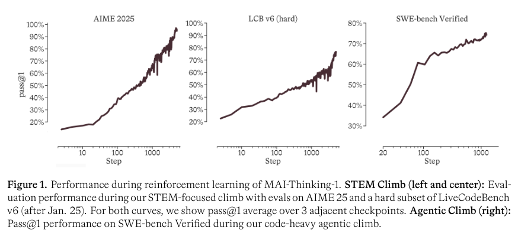
¹ 通信请发送至 mai-technical-report@microsoft.com。引用格式见附录 A。
（接上页）稳健性。第二，简单才能持久。我们倾向于采用简单、可扩展的方案，干净、可信的数据，以及透明的基础设施，让这些要素共同支持从头开始爬坡。第三，科学严谨能够避免走捷径。每项决策都必须能通过数据驱动的阶梯实验、消融和评测来检验，从而揭示可靠的攀登路径。
MAI-Thinking-1 在 30T token 上进行预训练，这些 token 提取自公开可得和获得许可的人类生成数据的混合，涵盖网页数据、公开 GitHub 代码、书籍、学术论文、新闻、多语言文本和特定领域资料。每个来源从头到尾都由我们内部处理。我们选择在预训练期间不使用语言模型生成的任何合成数据，并努力避免和移除收集到的数据源中的 AI 生成内容。在预训练中，我们不使用任何开源训练数据集，并从训练数据中去除常见机器学习数据库，以防评测污染。在中期训练中，我们进一步强调 STEM、数学和编程能力，为推理 RL 爬坡构建坚实基础。中期训练之后，MAI-Thinking-1 的最大上下文长度达到 256K。
预训练和中期训练使基础模型具备广泛的预测能力和知识，但并未规定模型应如何行动、解决长时程任务，或分配推理时的计算。在强化学习（RL）爬坡期间，我们教模型推理和作答。模型学习结合特定任务反馈使用 chain-of-thought（CoT），使用外部工具与环境交互，并遵循人类偏好和安全信号。我们的 RL 爬坡从头开始，在此前从未接触推理轨迹的情况下学习推理。稳健的 RL 方案、自蒸馏及基础设施改进，使我们能够维持数千步的 RL 运行。使用这套方案，我们训练了三个领域专用模型：一个用于 STEM 推理，一个用于 agent 编程与工具使用，一个用于有用性与安全。
我们通过公开基准和人工并排评测，将 MAI-Thinking-1 与多种开放权重和闭源权重的前沿模型进行比较。这些评测覆盖广泛领域，体现了模型跨领域的通用性：STEM、agent 编程、知识、指令遵循、长上下文、安全、健康和工具调用。MAI-Thinking-1 在 SWE-Bench Pro 上达到 52.8%，AIME 2025 为 97.0%，AIME 2026 为 94.5%，LiveCodeBench v6 为 87.7%，并且在广泛基准上能够与 Sonnet 4.6 竞争。
开发 MAI-Thinking-1 时的一项关键技术挑战，是在安全（要求模型拒绝用户请求）和有用性（要求模型服从请求）之间取得平衡。安全模型需要提供有用的回答，同时遵守我们的安全政策和标准。我们开发内部安全基准，以此衡量进展，并将有用性和安全训练纳入 RL 爬坡。作为负责任部署的一部分，我们在整个模型开发过程中持续开展红队测试，在发布前发现并修复漏洞。
MAI-Thinking-1 是使用我们的爬坡机器开发的首个模型。这台机器是一体化流程，涵盖数据流水线、训练基础设施、强化学习环境与奖励、评测套件以及安全测试的构建，将模型开发转化为特定领域中的实证优化循环。爬坡机器使我们能够推动 AI 进步，同时从根本上让进展围绕人类需求展开。
目录
- 1 引言 · 1
- 2 预训练 · 5
- 2.1 模型架构 · 6
- 2.2 模型消融方法 · 7
- 2.3 评测方法 · 9
- 2.4 预训练数据 · 12
- 2.5 为训练选择数据混合 · 16
- 2.6 训练方案 · 21
- 2.7 评测及与同期模型比较 · 23
- 2.8 YOLO：大规模分布式训练 · 24
- 3 强化学习爬坡 · 30
- 3.1 强化学习方案 · 31
- 3.2 STEM 爬坡 · 37
- 3.3 Agent 爬坡 · 39
- 3.4 有用性与安全爬坡 · 44
- 3.5 将各项能力整合到单个模型 · 49
- 3.6 强化学习基础设施 · 49
- 4 评测 · 53
- 4.1 基准评测 · 53
- 4.2 人工并排评测 · 54
- 4.3 内部安全评测 · 55
- 5 安全红队测试 · 56
- 5.1 内部红队测试 · 56
- 5.2 独立红队测试 · 58
- 6 集群环境 · 59
- 6.1 训练集群 · 59
- 6.2 训练稳定性、确定性和有效吞吐量指标 · 59
- 6.3 推理效率和模型部署 · 60
- 6.4 可持续性和以社区为先的 AI 基础设施倡议 · 60
- 7 结论与未来方向 · 61
- A 引用参考 · 82
- B 预训练数据流水线细节 · 82
- B.1 网页 HTML · 82
- B.2 网页 PDF · 84
- B.3 书籍和期刊 · 84
- B.4 公开 GitHub · 84
- C 长上下文扩展 · 85
- C.1 数据 · 86
- C.2 评测设置 · 86
目录（续）
- C.3 渐进式上下文长度扩展 · 86
- C.4 适应速度 · 87
- C.5 最终方案 · 87
- D 推理轨迹的演变 · 89
- D.1 STEM CoT · 89
- D.2 Agent CoT · 91
- E SWE Agent 工具 Schema · 94
- F 指令遵循数据的约束分类体系 · 97
- G 构建 SWE 环境的基础设施 · 97
- H STEM 评测设置 · 98
- H.1 数学 · 98
- H.2 科学 · 99
- H.3 竞赛编程 · 99
- I Agent 编程评测 · 101
- J 安全评测 · 101
- J.1 内部评测细节 · 101
- K 通用能力评测 · 103
- K.1 知识 · 103
- K.2 指令遵循 · 104
- K.3 长上下文 · 104
- K.4 安全 · 105
- K.5 诚实性 · 105
- K.6 健康 · 106
- K.7 工具调用 · 106
- L 集群环境细节 · 106
- L.1 硬件和计算集群 · 106
- L.2 集群就绪与认证 · 107
- L.3 调度、编排与控制平面 · 107
- L.4 可观测性、遥测与设备群监控 · 108
2 预训练
MAI-Thinking-1 的基础模型名为 MAI-Base-1，是一款激活参数为 35B、总参数为 1T 的稀疏 MoE 模型，使用内部开发的分布式训练基础设施（第 2.8 节），在 Azure 平台内由 Microsoft 运营的集群上的 8K 块 GB200 GPU 上从头预训练。训练语料完全由内部基于公开可得及购得的数据源构建，不含任何蒸馏数据（第 2.4 节）。基于这一语料，我们先运行包含 30 万亿 token 的主要预训练阶段，随后进行总计 3.55 万亿 token 的中期训练阶段（第 2.6 节）。
预训练的目标是产出在广泛领域都具备能力的基础模型，而且这些能力来自对人类知识的学习，而非对现有 AI 模型的模仿。我们建立消融协议，沿着一组规模逐步增大的预训练模型构成的“阶梯”衡量效率增益（第 2.2 节），仔细检查建模决策的扩展特性。为了支持这些消融，我们开发了一套预训练指标（第 2.3 节），由覆盖广泛主题、任务和数据分布的留出负对数似然（NLL）评测组成。我们报告 MAI-Base-1 和同期基础模型的表现，展示这些评测在未经后训练模型上的使用方式（第 2.7 节）。
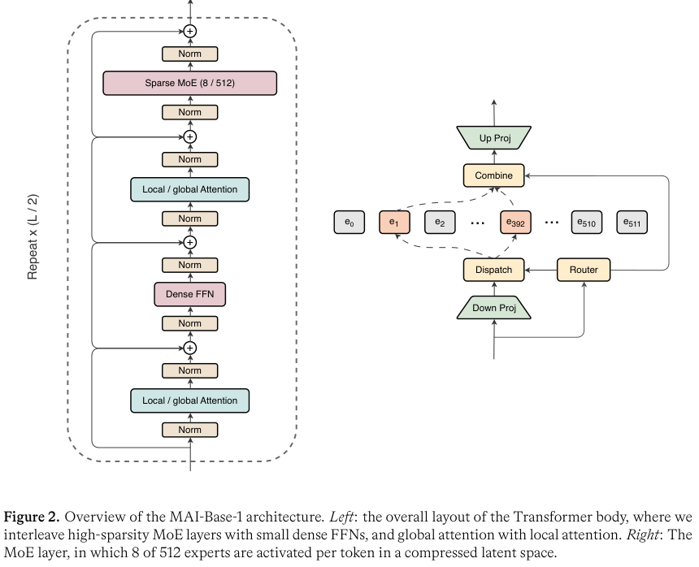
2.1 模型架构
MAI-Base-1 的模型架构旨在利用规模在我们基础设施和硬件上的优势。我们使用仅含解码器的 transformer（Vaswani et al., 2017），以周期方式配置局部和全局 attention 层，并交替使用稠密及 MoE 前馈块。图 2 展示了架构概况。每层在输入位置以及紧邻残差相加之前的输出位置都使用 RMSNorm（Zhang and Sennrich, 2019；Gemma Team et al., 2025）。模型不使用任何偏置，输入与输出 embedding 权重绑定。虽然我们观察到内部训练的 tokenizer 能带来一定性能提升，但为简化与现有内部工具及工作流的集成，我们选择词表大小为 200,019 的 o200k_base tokenizer（OpenAI, 2022；Hurst et al., 2024）。架构设计的一项关键考虑，是与底层 GPU 基础设施协同优化，确保预训练和强化学习（RL）都能高效扩展。
Attention。我们沿用 Gemma 3（Gemma Team et al., 2025）的周期 attention 设计，将 5 层局部 attention（Beltagy et al., 2020）与 1 层全局 attention 配对，显著降低训练的 attention 计算成本，以及推理时的 KV cache 大小。局部 attention 层使用旋转位置编码（RoPE）（Su et al., 2023），滑动窗口大小为 512，基频为 10,000。全局 attention 层不使用任何位置编码（Kazemnejad et al., 2023），其效果与 RoPE 相当，效率则更高。我们使用具有 8 个 KV 头的分组查询 attention（Ainslie et al., 2023），每个头的维度为 128。对 query 和 key 应用 RMSNorm（Roy et al., 2020；Henry et al., 2020；Dehghani et al., 2023；Wortsman et al., 2023）。这些标准组件使我们能使用 FlashAttention-4（Zadouri et al., 2026）和 Ulysses 式上下文并行（Jacobs et al., 2023），高效训练长上下文。
前馈与 MoE。各块的前馈层交替采用 MoE 层与稠密前馈网络（FFN）。我们发现，将高稀疏层与零稀疏（稠密）层配对的范式，其扩展效果与均衡分配稀疏度——即各层均采用中等稀疏度 MoE——相当，同时无论固定激活参数还是总参数，实际用时都更高效（第 2.2.3 节）。我们还发现，每层均采用 MoE 的布局更加依赖共享专家；而为交替布局加入共享专家，几乎没有或完全没有收益。首个前馈层为稠密层（DeepSeek-AI et al., 2025a；Kimi Team et al., 2026；Dai et al., 2024），稠密和 MoE 前馈层均使用 SwiGLU（Shazeer, 2020）。
我们采用 LatentMoE 设计（NVIDIA et al., 2025），在 all-to-all 分发之前应用共享下投影，在 all-to-all 合并之后再将潜在表示投影回原始维度。路由决策依据原始表示，每个压缩表示通过 softmax 门控路由至 512 个专家中的 8 个。
我们使用全局 batch 负载均衡损失（Qiu et al., 2025；Yang et al., 2025），通过汇总同一全局 batch 内所有数据并行 worker 和 micro-batch，获得经验专家频率。我们发现，汇总策略比负载均衡损失的具体类型重要得多。只要确保全局汇总，我们采用的 GShard 式损失（Lepikhin et al., 2020）与无损失变体（Wang et al., 2024a）表现相近。
值得注意的是，我们观察到，关于最优负载均衡方法的实验结果可能取决于专家容量。在有限容量下，即使精心设计 token 丢弃策略以避免细微的因果信息泄漏，并通过宽裕的容量预算将丢弃率保持在较低水平，结论仍可能与不丢弃的设置不同。因此，我们最终采用完全不丢弃 token 的 MoE 实现（细节见第 2.8.1 节），支持 all-to-all 通信中可变大小的消息，并在高度不均衡时确保内存用量有界。
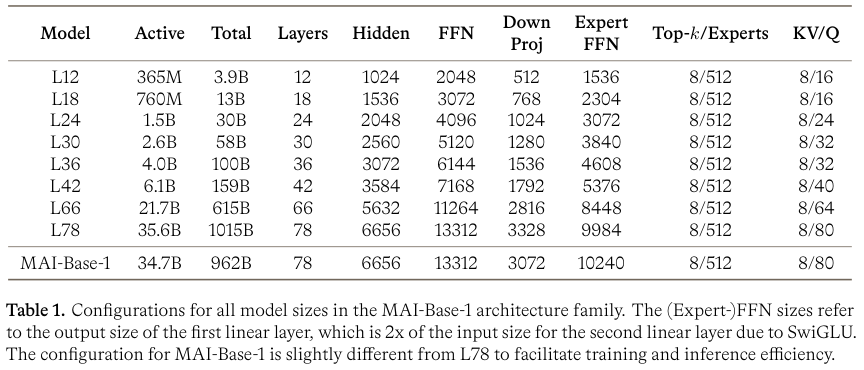
2.2 模型消融方法
现在介绍用于评估预训练中不同架构及数据设计选择的实验设置。一个关键考虑是规模的作用：随着计算预算增加，模型创新或新数据集的表面收益常会减弱。因此，在改变基线之前，必须收集跨不同规模的充分支持证据。以下小节介绍使这一过程能够有原则、可复现地开展的主要组成：扩展阶梯和效率增益。
2.2.1 扩展阶梯
所有消融都明确以扩展特性为核心。为此，我们使用扩展阶梯：每项消融中，对不同规模模型以恒定的每个（激活）参数 token 数（TPP）训练，并将扩展曲线与基线比较。采用何种 TPP 取决于实验性质。例如，大多数架构消融在接近 Chinchilla 最优区域（Hoffmann et al., 2022）的 100–200 TPP 下进行，而主训练通常在高得多的 500–1,000 TPP 下过度训练，产生适合大量推理需求的相对紧凑模型。消融使用最新阶梯进行，接受的改动成为下一代基线阶梯配置的一部分，再重复此过程。
对于第 2.1 节介绍的架构族，单个参数——层数 \(L\)——即可完整指定模型配置。由于采用 5:1 的局部与全局 attention 比例，\(L\) 必须是 6 的倍数，以确保最后一层使用全局 attention。随后按 \(D=L\times\frac{256}{3}\) 确定隐藏维度 \(D\)，维持整个阶梯相同的宽深比。这一宽深比与近期一些模型（OpenAI, 2025；Liu et al., 2024；Gemma Team, 2024）相近；由于 \(L\) 总是 6 的倍数，它还会在我们的设置下产生更适合硬件的 \(D\) 值。query 头数设为 \(L\)，并向上取整至最接近的 16 的倍数，以便通过张量并行提供服务。每个稠密前馈层将隐藏维度扩展为 2 倍。LatentMoE 层使用 2 倍压缩，在每个专家内再将压缩表示扩展为 3 倍。
表 1 给出完整扩展阶梯的细节。MAI-Base-1 的最终架构有 78 层。它以阶梯中的 L78 为基础，但针对 DeepEP（Zhao et al., 2025a）略微调整了专家输入维度，因为 DeepEP 要求 all-to-all 集合通信的隐藏维度能够被 512 整除。
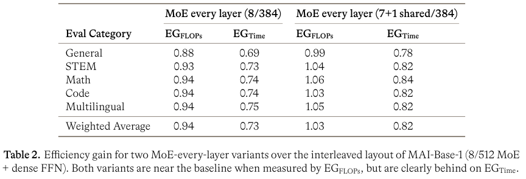
2.2.2 效率增益
在架构和扩展讨论中，效率增益（EG）衡量基线模型为达到某个候选模型的评测指标，需要增加多少训练成本（Kaplan et al., 2020；Hoffmann et al., 2022）。多数情况下，评测指标是用预训练评测套件定义的汇总评测损失（第 2.3 节）。首先，我们为基线阶梯拟合 scaling law：
\[L=f(C)=AC^{-\alpha}+E.\tag{1}\]
其中，\(C\) 表示训练成本，例如给定基础设施下的 FLOPs 或时间。\(A\) 是控制可降低损失项整体大小的扩展系数，\(\alpha\) 是控制损失随计算增加而下降速度的扩展指数，\(E\) 是不可降低的损失。对于以成本 \(C'\) 达到 \(L'\) 的候选运行，我们将基线达到相同损失所需的成本预算算作 \(f^{-1}(L')\)，并定义：
\[\mathrm{EG}=\frac{f^{-1}(L')}{C'}.\tag{2}\]
例如，\(\mathrm{EG}=1.3\) 表示基线模型需要高出 30% 的成本才能达到候选模型的损失（Liu et al., 2025a；Dey et al., 2023）。我们还在不同成本预算下进行消融，得到 EG 随成本变化的一系列数值，以寻找随着规模增加仍能持续的改进。
我们最常用 FLOPs 定义成本 \(C\)，有意不计入训练能够实现的实际时间效率。成熟架构的实现通常经过长期积累的众多性能优化，因此可能显得强于新变体。将指标与 FLOPs 利用率（MFU）（Chowdhery et al., 2023）解耦后，我们能考察在投入相同实现优化力度时，架构彼此的表现。不过，在关注现有软件栈下硬件效率的情况下，我们会使用前述以时间定义的成本 \(C\)。这些情况下，明确将效率增益记为 \(\mathrm{EG}_{\mathrm{Time}}\)。
2.2.3 模型消融示例
日常消融中，我们广泛使用阶梯和 EG 比较。下面给出两组实验，展示 EG 如何随评测类别变化，以及如何扩展 EG 来反映与基础设施协同设计的因素。
示例 1：稀疏度分配。表 2 将高稀疏 MoE 和稠密 FFN 交替布局，与更常见的每层均采用中等稀疏 MoE 的设计比较。实验控制稀疏度，使所有模型族具有相近的总参数与激活参数比；（接下页）
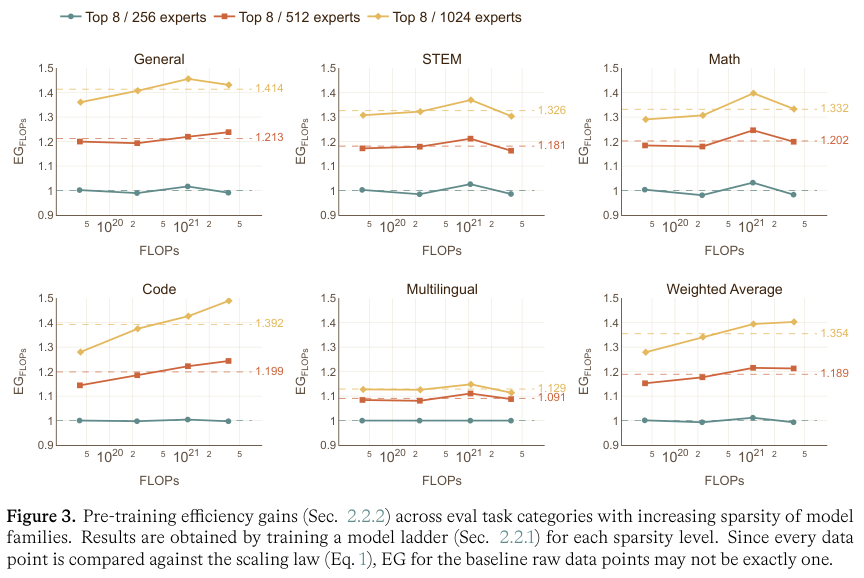
（接上页）具体做法是固定 Top-k（8，或带共享专家的 7+1（Dai et al., 2024；Qwen et al., 2025）），同时调整每层均为 MoE 的模型族的专家扩展率和专家数。我们在第 2.2.1 节介绍的 L12–30 阶梯模型上，报告分别按 FLOPs 和训练时间两个成本维度定义的 EG。每层均为 MoE 并配合共享专家时，按 FLOPs 衡量的 EG 为 1.03；但一旦计入训练 MFU，交替范式提供更好的权衡，体现为 \(\mathrm{EG}_{\mathrm{Time}}<1\)。
示例 2：稀疏度扩展。可扩展的架构设计应在稀疏度增加时获得良好提升。图 3 表明我们的架构族具有这一特性：在 Top-k = 8 下，将专家数从 256 增加到 1024（MoE 稀疏度从 32 倍增加到 128 倍）时，持续带来效率增益。MAI-Base-1 采用 Top-8/512 配置，在模型质量与训练及推理效率之间取得平衡，将进一步探索稀疏度扩展留待未来工作。
2.3 评测方法
我们使用一套聚焦 NLL 任务的内部基准开展实验和跟踪进展。这些基准来自不同来源：供应商创建且完全从训练中留出的数据、未出现在网页上的内部来源，以及我们仔细从训练数据中移除的网页来源。表 3 列出基准示例，第 2.3.2 节讨论使用 NLL 评测基准的动机，第 2.7 节报告预训练后的评测结果。
总计我们拥有近 40 项此类基准，分为代码、STEM、数学²、通用知识和多语言 5 类。需要将其汇总成单个数值以直接比较 EG（第 2.2.2 节）或为模型排序时，使用下页公式。
² 我们选择明确提高数学的权重，并将其与更广义的 STEM 类别区别处理。
（接上页）用于汇总的公式为：
\[\mathrm{Target}=0.5\times\mathrm{Coding}+0.175\times\mathrm{STEM}+0.175\times\mathrm{Math}+0.1\times\mathrm{General\ knowledge}+0.05\times\mathrm{Multilingual}.\tag{3}\]
这些明确的权重让我们能将关于各组基准相对优先级及重要性的决策固定下来。我们重视下游代码和推理任务的表现，这体现为在预训练中给予这些类别更大的权重。
为计算公式 3 中各类别的得分，首先以固定的内部参考模型为基线，归一化原始 NLL 结果，再对该类别的全部基准取均匀平均。所有接受评测的模型使用相同 tokenizer，因此 NLL 值可以直接比较。注意，我们选择将数学单独列为一类，而 STEM 则聚焦科学、技术和工程。
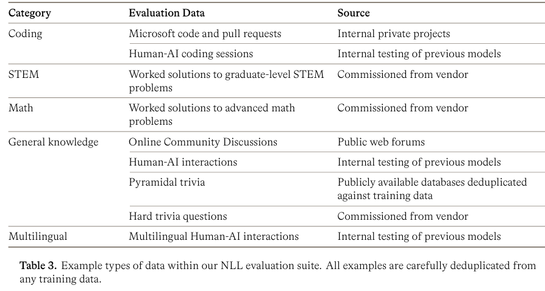
2.3.1 公开评测去污染
公开可得的评测基准有助于指导我们许多模型的开发。随着近年 AI 模型的重要性增加，评测数据集泄漏到训练数据源中的情况也更多。这在 GitHub 上尤其常见，许多 AI 研究人员和开发者都在那里分享成果。许多常见评测以原始形式发布在 GitHub 上（Austin et al., 2021），几乎每项基准也都会在那里被多次复制，通常附带解答、模型生成内容等。许多公开评测源于我们用于训练的某些在线来源，但增加了额外的数据整理流程，例如 Wei et al.（2024a）和 Hendrycks et al.（2020）。随着训练集规模和覆盖范围扩大，这种重叠的影响变得显著。与已有工作（Godey et al., 2025）类似，我们在实验中观察到，污染可能导致反直觉结果，例如名义上用于改善编程表现的数据，同时提升了长尾通用知识评测的表现。
我们使用多种方法检测并移除训练数据中泄漏的评测样本。删除来自 huggingface.co 及镜像域名的全部数据，并对所有训练来源统一应用相似度阈值为 80% 的 20-gram 模糊去重。我们发现，这些方法可以准确移除大量泄漏样本，但并不完美。
认识到这一点后，我们开发了供自己使用的私有基准，并确信它们不会出现在网络上的其他位置。
2.3.2 准确率与 NLL 评测的比较
日常开发中使用内部专有评测。这些评测由 MAI 团队成员整理，其中一些委托雇用领域专家的数据供应商制作，另一些则收集自 Microsoft 全球组织中的领域专家。
对于预训练，我们选择聚焦采用 NLL 计分方法的评测，而非多项选择、生成或其他形式。衡量模型能正确回答多少问题的评测，便于跨模型比较以及与人类基准比较，但存在以下若干实际操作挑战。
评测效率与成本。许多前沿基准需要 chain-of-thought 推理（Phan et al., 2025；Rein et al., 2023）、工具使用或其他生成过程。这类自回归生成成本高且耗时。训练框架及配置通常并未针对适合这些评测的快速自回归推理优化。使用更高效的推理框架可以加速这些评测，但会引入额外复杂性及对架构变体的支持需求。开放式或自然语言答案评测往往还需要评判模型，进一步增加成本。相比之下，NLL 评测与预训练采用相同的基本下一 token 预测目标，运行效率很高。降低每次评测的时间和计算成本后，我们可以开展更全面的评测，并确保每项实验的一致性。
对混杂因素的敏感性。评测可能对预训练模型行为中看似微小的变化高度敏感。例如，MMLU（Hendrycks et al., 2020）、MMLU-Pro（Wang et al., 2024b）及相关基准（Yue et al., 2024, 2025；Singh et al., 2025b）对评估预训练知识很有价值，但多项选择形式隐含假设模型已经学会理解和回答选择题，而在预训练中评估时，这项能力通常要到出人意料的大规模才会出现（Du et al., 2024）。虽然这些任务有时用 A、B、C、D 的 logits 进行 NLL 计分，但许多问题并非仅需事实回忆，自由形式生成通常是更忠实的评测协议。
类似地，MATH（Hendrycks et al., 2021）要求严格遵守格式约定，例如将答案放进 \boxed{}；MBPP（Austin et al., 2021）则使模型面临共享提示中 Unix 式换行（\n）与题目陈述中 Windows 式换行（\r\n）不一致的问题。预训练数据中的细微格式差异，尤其在来源间存在差异时，可能显著影响模型如何应对这些不一致。我们在许多实验中观察到此类相互作用，使结果解释更复杂，也增加了新手和有经验研究者误读结果的可能性。
NLL 评测对此类问题更稳健。每个预测步骤都以真实答案前缀为条件。这种 teacher-forcing 设置限制了微小错误累积放大的程度。我们的结论与已有工作一致：相比带有格式选择的任务，基于损失或困惑度的指标能为模型开发提供更高信号的反馈（Heineman et al., 2025；Du et al., 2024）。
构建复杂性。建立高质量问答评测需要大量且精心协调的工作。通常必须经历多轮数据收集、难度校准、去重和质量控制，评测才能达到可接受标准，而且每个阶段都要与领域专家密切合作。设计新颖问题本身并不容易，尤其是在领域知识的前沿。
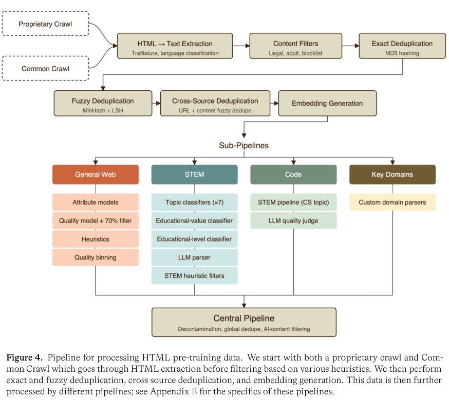
相比之下，基于 NLL 的评测的起步门槛低得多。任何与主题相关的内容都可作为初始语料；后续改进——例如施加额外结构、精简至更具代表性的样本，或引入更高级的材料——都能直接转化为评测质量的增量提升。
2.4 预训练数据
MAI-Base-1 使用公开可得和获得许可的人类生成数据混合进行训练。我们汇集高质量、多样化的预训练数据，涵盖网页、公开 GitHub 代码、书籍、学术论文、新闻、多语言文本和特定领域资料。我们选择不将语言模型生成的合成数据用于预训练，并努力避免和移除收集到的数据源中的 AI 生成内容（附录 B）。
所有预训练数据都在内部处理，来自以下基础来源之一：网络 HTML 和 PDF、书籍和期刊，以及公开 GitHub 代码。我们不使用任何开源训练数据集，并从网页数据中排除 huggingface.co 及类似站点等常见机器学习仓库。我们反复发现，仔细迭代数据质量，而非仅增加数量，不仅对预训练结果至关重要，（接下页）
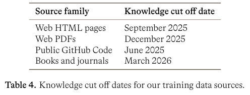
（接上页）对推理基准的下游表现也同样重要。以下小节介绍处理各主要数据源时采用的通用技术。每个来源的数据流水线及完整技术细节见附录 B。图 4 展示网页数据处理流水线概况。
2.4.1 数据来源、许可与治理
数据中公开可得的部分按照适用使用条款和行业网页控制标准收集。对于网页数据，我们采用专有爬虫，遵守 Robots Exclusion Protocol（robots.txt）及相关 meta 标签和 HTML 控制，使网站所有者能够管理其网站内容的访问和使用方式。我们还排除违反 Microsoft 负责任 AI 政策，或列入美国贸易代表办公室（USTR）“恶名市场”名单的来源。
训练语料还包括通过商业协议从第三方供应商购得的数据集。第三方数据集须经过尽职调查流程，以评估数据保真度、所有权和适用使用权，并受保密条款及条件约束。表 4 给出各来源的知识截止日期。
预训练不使用私人客户数据或 Microsoft 产品及服务中的数据，但用户明确选择加入或使用受适用协议覆盖的情况除外，同时尊重用户退出选择。训练前，全部语料都经过个人身份信息（PII）风险和安全过滤；细节见附录 B。出于隐私、法律、安全和竞争原因，我们不公开完整数据集或供应商名单。
2.4.2 HTML 提取
大量数据来自网络，需要从原始 HTML 中提取可训练内容。实现方法很多，所得质量差别往往十分细微。我们最关注的某些内容——数学、代码等——在网络上并无一致表示方式，许多现成方法最终丢掉了大量关键数据，却保留周围文本。表格和其他结构化内容往往也很重要，但保留这些数据需要仔细处理。
我们不会对所有来源使用单一提取方法，而是根据各域名的结构与可靠性采用不同办法：
- 对于 HTML 或 XML 等标准化格式，使用针对来源的结构化解析器；理解 schema 的解析可准确转换为文本表示。
- 对于结构一致但通用启发式处理不佳的域名，或内容的价值与数量足以支持额外工程投入的域名，使用通过 BeautifulSoup（Richardson, 2026）等工具实现的手工提取器。
- 对于需要超出确定性规则能力的定向提取、归一化或语义过滤的域名，采用基于 LLM 和 agent 的处理（Mahabadi et al., 2025）。所有使用此方法的情况中，（接下页）
- （接上页）LLM 始终只选择保留或移除原始来源文本中的文字，无法向输出添加额外合成内容。
- 当进一步处理可能丢弃重要信息时，直接对原始内容训练。例如，Wikipedia 专用标记语言 wikitext（MediaWiki, 2026）相比 HTML 缺乏成熟工具，现有解析器也不总能忠实保留信息框等元素。虽然 wikitext 大约冗长 3 倍，我们发现使用完整原始标记训练，比依赖精简转换结果更好。对于 Wikipedia 这种高价值、低数量来源，这种权衡很合理。
2.4.3 去重
像我们这样规模和稀疏度的模型，具有获取和回忆细节知识的非凡能力。这一能力是通用系统有效性的核心，同时也增加了记忆和过拟合训练数据的风险（Lee et al., 2022；Abbas et al., 2023）。发生记忆时，模型无法泛化底层概念，导致其他领域表现下降。训练语料中的重复是此类过拟合的主要驱动因素。
大规模网页数据包含大量冗余：许多文档近乎重复，仅有细小格式差别，或在多个站点复制。若无细致过滤，模型可能接触同一内容的众多副本。模型容量越大，冗余的影响越明显。尤其是，预测性的扩展行为对有效唯一 token 数很敏感：大模型在新颖性减少的语料上训练时，扩展表现下降，因为它们更早耗尽新信息。一旦数据集的唯一内容饱和，额外训练 token 几乎不再带来收益，限制进一步提升。在许多实验中，我们一致观察到，严格去重和移除冗余数据可以同时改善预训练指标与下游推理基准。
由于限制冗余十分重要，流水线包含多个去重阶段，各自针对一种冗余。所有数据无论来源，都会接受一种或多种去重处理。网页 HTML 和 PDF、书籍和期刊、公开 GitHub 代码等来源的具体处理方式及完整技术细节见附录 B。这里介绍采用的多种技术：
- 样板文本移除。网页 HTML 页面经常包含重复样板文本。利用文档内部及文档间的行出现统计，移除页眉、导航栏、页脚、侧栏和解析伪影引入的冗余段落等元素。
- 精确重复。跨站转载或系统故障导致的重复快照，可能使相同内容多次出现。我们移除所有字节级和哈希级精确重复。
- 模糊重复。遵循 Smith et al.（2022）的配置，使用基于 MinHash 局部敏感哈希（LSH）的模糊去重（Broder, 1997），相似度阈值为 0.8。
- 模板化网页。许多站点基于共享模板生成仅存在微小词汇变化的页面，例如含原始算术表的“计算器”网页。我们将每页骨架化为最高频 token，并对模板进行模糊去重，消除大批近乎相同的页面。
- 语义重复。独立生成的文档仍可能因共享背景或标准问题表述而高度相似。这在代码数据集中尤其常见，众所周知的编程练习在作业、考试、面试及竞赛中反复出现。即使独立编写，解法也常趋同，例如二叉搜索树的标准遍历。这类（接下页）
- （接上页）聚类在自然数据集中大量存在，移除它们可以提升模型稳健性和任务多样性（Sorscher et al., 2023；Abbas et al., 2023；Tirumala et al., 2023）。我们使用 Qwen3-Embedding-0.6B（Yang et al., 2025）识别语义相似文档，每个聚类只保留有限数量的代表。
这些去重技术既用于各处理流水线的早期阶段，也作为训练前的最终步骤跨数据集再次执行。过去，我们通过明确过滤管理训练来源间的重叠，例如从所有网页抓取数据中排除 Wikipedia 域名。然而，随着来源多样性与覆盖范围增加、流水线更加复杂，数据集间意外重叠的机会也增加了。
为此，我们通过数据集的全局丢弃顺序开展跨数据集去重。检测到模糊或语义重复时，仅在出现该样本的最高排名数据集中保留，并从所有丢弃顺序优先级较低的数据集中移除。因此，解释实验结果并评估单个数据集的贡献或价值时，丢弃顺序的选择至关重要。改变某个数据集可能引入新的重叠，即使没有添加新内容，也相当于将数据从一个来源移至另一个来源。
2.4.4 数据过滤与分类
下游处理的核心目标，是把大型异构原始语料转为既有益于预训练，又可控地用于数据混合优化的数据（第 2.5 节）。对各来源，我们先移除不太可能对训练产生正向贡献的数据，包括垃圾信息、受限或政策敏感内容，以及其他来源特定噪声。然后将剩余数据分类至可解释的桶，例如质量层级、语言组、主题类别、教育价值、教育程度、来源类型和领域子语料。
具体过滤与分类策略因来源而异，因为不同语料提供不同信号和失效模式。因此，我们组合使用多类技术：
- 利用元数据信号，例如域名、文件名、仓库元数据、PDF creator 和 producer 字段，以及文档级元数据。
- 来源特定启发式，例如网页文本质量过滤、OCR 伪影过滤、STEM 内容的数学感知过滤，以及针对生成代码的路径或内容过滤。
- 学习型分类器，包括 fastText 式分类器（Joulin et al., 2016）和基于 embedding 的模型，用于语言、主题、教育价值、教育程度、质量及其他语义属性。
- 通过提示使用 LLM，选择性处理价值更高或更模糊的判断，例如章节级提取、质量评判及细粒度主题标注。
- 人工探索与标注，用于识别失效模式、验证过滤精确度、审计高影响来源类别，并为分类器和 LLM 评判器构造训练数据。
过滤和分类共同把处理后的来源语料转为结构化的数据桶集合。过滤通过移除低价值或有问题内容提升质量；分类则将剩余语料组织到可解释维度，服务数据混合优化。这一结构支持对来源族、质量层级、主题、教育程度、语言和来源特定格式进行受控消融。各主要来源的进一步实现细节见附录 B。
2.4.5 数据消融
每个处理后的预训练数据集都接受严格消融。我们采用单来源消融和扩展阶梯消融两种办法。单来源消融是一种隔离方法，用于（接下页）
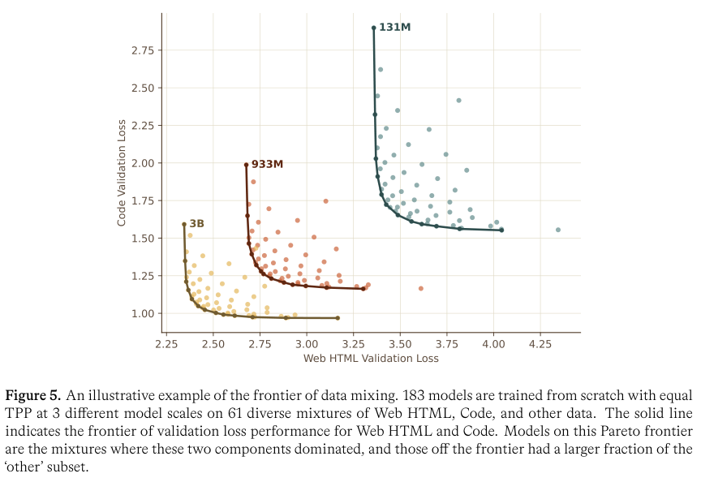
（接上页）量化特定数据集的边际效用，并将其贡献归因到基于 NLL 的评测。我们将目标数据在混合中的权重提高至 50%，从头训练。扩展阶梯消融则使用第 2.2.1 节的扩展阶梯，在完整混合中对数据进行消融，以预测在其他全部数据集同时存在时，某项数据整理决策在最终目标规模和 token 训练总量下的表现。在阶梯消融中对数据来源下采样，以模拟目标模型的多 epoch 特性。
2.5 为训练选择数据混合
训练时采样的数据来源及其相对比例显著影响最终模型。在固定计算预算和包含数百个异构来源的语料下，我们必须确定各自权重。
为此，首先定义目标函数。如图 5 所示，一组给定目标能力，例如编程或通用知识，可能对应多个 Pareto 有效混合；在这些混合上，提升一项能力必然损害另一项。因此，我们必须赋予不同能力相对重要性。具体而言，选择最小化公式 3，即对一套留出 NLL 评测的汇总。
优化数据混合需要平衡关注领域、数据质量、可用唯一 token 数量，以及数据集在出现收益递减或过拟合前最多能重复的次数。
2.5.1 优化面临的挑战
数据混合的选择显著影响最终模型，因此我们希望以有原则、结构化的方法处理这一问题。有效技术必须应对多项挑战：
- 效用定义。如何具体定义优化目标？总体目标是开发在真实使用中有效的模型，但为每种候选混合执行完整后训练，成本高得难以承受。
- 庞大搜索空间。数据集增加到数百个时，混合空间大到无法用可行计算量穷举。
- 规模依赖效应。一种来源可能对小规模模型特别有用，另一种则在大规模更有用（Ye et al., 2025）。
- 跨数据集相互作用。数据集以不同方式互补和互相替代。无法脱离混合的其余部分独立衡量某个数据集的效用。
- 多 epoch 效应。不能孤立评估混合：训练总量也很重要（Chen et al., 2026a）。给高质量但小型数据集较高权重虽很诱人，但训练总量很大时会多次消耗同一数据集，导致收益递减，最坏情况下造成过拟合。
- 计算成本。用不同混合训练大量模型会迅速变得昂贵，尤其在探索极高维搜索空间时。
2.5.2 基于预测的方法
一类数据选择方法先在小得多的规模训练许多模型，再针对模型的评测结果构建预测模型。根据小模型的拟合函数，尝试估计全局最优混合，或至少指导搜索。此类方法包括 RegMix（Liu et al., 2025b）等。它们的重要特征是依靠小模型，实现快速迭代。
我们实验了这些方法的变体，根据基线混合采样数据混合，并训练数千个小模型，每个激活参数在 760M 至 4B 之间（表 1 的 L12–L36 模型）；图 5 展示网页/代码数据前沿的示例。每个模型都运行完整 NLL 套件，观察不同数据子集与不同汇总及单项评测间的相关性，示例见图 5 和图 7。最终，依据第 2.3 节公式 3，为每种混合赋予一个分数，并尝试全局优化，即最小化该分数。
实际中的规模依赖案例。在数据混合实验中，我们发现一个实证结果，挑战了一项核心扩展假设：两种混合的相对排序——哪种评测表现更好——会随着计算增加而保持不变。这一假设常被非正式地称作排名不变假说（Liu et al., 2025b）。它很有吸引力，因为意味着低成本小规模实验能可靠指导大规模运行。但我们发现并非总是如此。
在更早一代模型中，我们试图衡量编程和 STEM 强化学习对预训练混合的敏感度。通过不同混合优化方法和评测权重，产生两种候选：code-heavy-mix（代码约 50%，预测在代码类别尤其强）和 stem-heavy-mix（显著提高 STEM 权重，针对 STEM 和数学类别）。先进行了中间规模验证，随后（接下页）
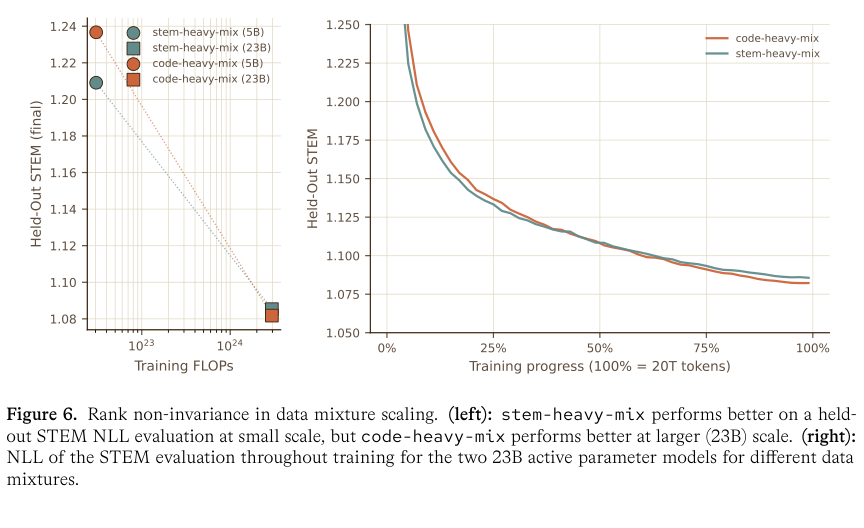
（接上页）分别在两种混合上训练激活参数为 23B 的模型，约 20T token（大致相当于表 1 的 L66）。除了训练来源的权重，没有做其他改动。
结果见图 6。与小规模结果的预期一致，训练初期，stem-heavy-mix 在 STEM NLL 评测上优于 code-heavy-mix。但训练中途，STEM 评测曲线发生交叉，最终 code-heavy-mix 超过 stem-heavy-mix。这反驳了数据混合相对排名在训练计算扩展时保持不变的假说。
检查单个来源的训练和验证损失趋势后，我们发现两个包含高质量 STEM 内容的来源，但它们比其他数据集有更多模糊重复，内容多样性也更低。它们在 stem-heavy-mix 中权重为 11.8%，在 code-heavy-mix 中仅为 0.3%。我们假设这些来源对小模型很有帮助，但缺少多样性使其在大规模下本质上不那么有用。
此后，除固定实验规模的表现外，我们也更重视候选混合的扩展表现。在后续混合研究中，我们尤其仔细地通过阶梯方法关注混合的扩展特性。
2.5.3 最终混合选择
由于数据集众多，又希望跨多个规模验证，我们采用分层方法改进先前最优混合。将数据分成代码、STEM、PDF、通用网页等约 10 类，然后交替执行局部和全局优化：
- 局部搜索。固定全部高层类别，在单个子集中局部改变权重；例如固定通用网页、STEM 等权重，只改变代码文件、PR 和 commit 间的权重。
- 全局搜索。固定每个高层桶的相对组成，改变不同子集间的相对权重，（接下页）
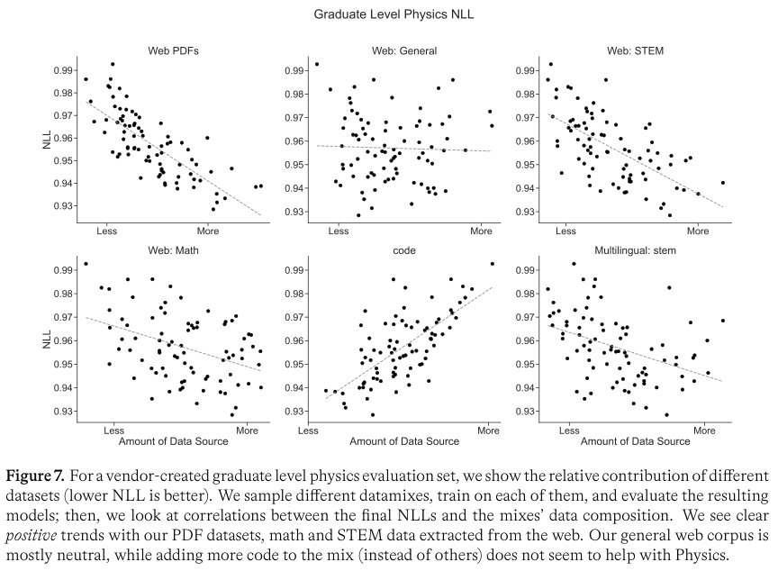
- （接上页）例如提高 STEM 和 PDF 权重，降低所有其他成分权重。图 7 展示这一过程。
在这些搜索中，将任一给定数据集的最大重复次数限制为 8，防止过拟合及多次循环相同数据导致的收益递减（Chen et al., 2026a）。
经过多轮全局和局部数据优化迭代，选择少数使 NLL 目标函数最小的有潜力混合，以全局混合阶段约 2.8 倍的计算量训练，并选择最佳候选。调整混合流程后，我们在这一放大验证阶段观察到良好扩展，最优候选不再随规模改变。
表 5 汇总最终组成。每个来源族含多个数据集，每个数据集的 epoch 数不同。有些数据集可能属于多个类别，例如法语 STEM 数据集；表中从上到下，将每个数据集分配到首个匹配行。最终混合约包含 3000 亿高质量数学 token，平均采样 5.28 次，为所有来源族最高。训练混合主体仍是代码，训练 token 为 16.4T，平均略超 2 个 epoch。网页文本和 PDF 数据平均均不足一次（0.55 倍和 0.53 倍），意味着即使运行 30T token 也未耗尽这些来源的全部可用语料。注意，PDF 和网页文本中的数学、STEM 成分都计入学科类别。多语言语料下采样最激进：有 8.1T 唯一 token，最终混合只消耗 0.5T（0.06 倍）；同样，特定领域多语言数据计入不同类别。
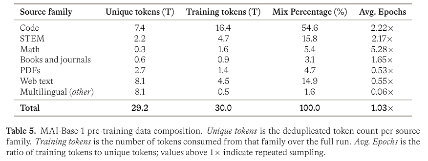
我们持续迭代数据混合目标、构成目标的 NLL 评测，以及提出新候选混合的算法，因为每个部分都对最终混合有显著影响。理解端到端扩展行为，并找出预训练期间最可靠预测下游表现的指标，仍是根本性的开放挑战；我们认为其中仍有很大改进空间。
2.5.4 中期训练数据混合
预训练后，MAI-Base-1 按第 2.6.1 节进行两个连续中期训练阶段。中期训练数据完全来自预训练语料（第 2.4 节），没有引入任何新来源或合成来源。我们通过过滤和重新加权现有混合，整理出更高质量的子集，再以更长序列重新打包，用于上下文扩展。
总体上，混合进一步偏向 STEM、数学和代码，为推理 RL 爬坡打好基础（Wang et al., 2025b）。从预训练混合出发，将 STEM/数学比例提高至 35%，代码保持 55%，余下 10% 分配背景来源。在各类别内部，依据单来源 microanneal（Team OLMo et al., 2024）局部调节权重，优化与预训练混合搜索相同的 NLL 目标，并为上下文扩展加入长上下文 NLL 任务（第 C.2 节）。此外，对部分 STEM 和代码来源施加如下质量过滤。
STEM 推理数据。为提升推理任务表现，我们主要从预训练 PDF 语料过滤文档，使用 Essential AI et al.（2025）提出的内容质量分类体系。定义 Bloom Analyze 启发式，保留技术正确性高、推理深度至少中等、Bloom 认知处理层级达到或超过 Analyze 的文档（Anderson and Krathwohl, 2001）。同时移除有提取伪影或缺失主要内容的文档。这一过滤保留具有结构化推理和分析的文档，而非简单事实陈述。
代码数据。代码在中期训练多经过两个步骤。首先，根据仓库级质量指标将仓库分三层，再按质量桶进行文件扩展名过滤。例如，常见网页资源（HTML、CSS、SVG）在高层仓库保留，因为通常属于大型前端项目；低层仓库则移除，因为主要是低质量独立页面。其次，在预训练已有的仓库级格式之外，引入文件级文档格式，将仓库理解和单文件理解作为互补任务，提升内部文件局部 NLL 基准上的泛化能力。
感知记忆程度的 epoch 上限。除质量过滤外，中期训练还限制数据来源的接触量，避免过拟合在预训练结束时看起来已被高度记忆的来源。我们用逐来源验证代理指标估计：两个预训练 checkpoint 之间验证损失的改进中，有多少比例来自几乎确定预测的 token（\(\mathrm{NLL}<0.01\)）。比例越高，表示大量 NLL 降低源于记忆或高度重复结构。中期训练对这些来源设置更严格的 epoch 上限，对指标较小的来源则允许按比例接触更多。
长上下文数据混合。中期训练通过两个阶段将 MAI-Base-1 的上下文窗口扩展至 64K，再到 256K，见附录 C。两个阶段均以更长序列重新打包数据，不改变混合权重。这样可最小化分布偏移，同时显著减少现有高质量长上下文文档，例如教学或学术文本的截断。
2.6 训练方案
MAI-Base-1 分三个阶段训练，序列长度逐步增加：预训练、中期训练阶段 1 和中期训练阶段 2。以下介绍训练方案。
2.6.1 训练阶段
表 6 给出不同阶段从第 2.5.3 节数据混合抽取的 token 数、上下文长度和 GPU 数。预训练与中期训练 1 使用专家并行度 64 及 ZeRO-2，中期训练阶段 2 启用 ZeRO-3（FSDP）。中期训练阶段使用上下文并行。训练采用内部大规模训练框架（第 2.8 节）。
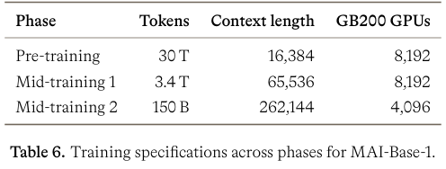
2.6.2 超参数
MAI-Base-1 使用 AdamW（Loshchilov and Hutter, 2017）优化，\(\beta_1=0.95, \beta_2=0.925, \varepsilon=10^{-8}\)，权重衰减恒为 0.1；attention 权重和 embedding 权重分别使用较低的 0.01 和 0.005，以限制对较少受益于正则化的参数的正则化。全局 gradient 范数裁剪至 1.0。学习率先对约 12B token 线性 warmup，然后按余弦计划从峰值 \(2\times10^{-4}\) 降至最低 \(2\times10^{-5}\)，最终与峰值之比为 0.1，而非更常见的 0.01，因为我们发现较少衰减学习率可以改善 RL 后的结果。在每层输出、残差相加之前使用 0.15 的 dropout。据我们所知，高 dropout 并非常规做法，但我们发现它与权重衰减提供互补正则化，且能改善扩展阶梯衡量的评测任务表现。默认模型权重从均值为零、标准差为 0.02 的正态分布初始化，残差相加之前的输出投影权重按模型残差连接总数的平方根倒数缩小（Radford et al., 2019）。
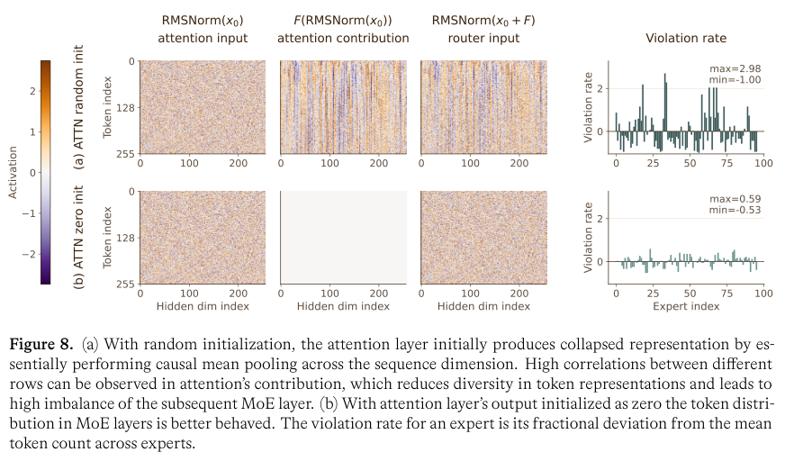
所有阶段均使用 134M token 的全局 batch。除另有说明，中期训练阶段继承预训练超参数。中期训练阶段 1 使用余弦衰减学习率，峰值 \(2\times10^{-5}\)，最低 \(1\times10^{-5}\)，没有 warmup。阶段 2 使用恒定学习率 \(1\times10^{-6}\)，同样没有 warmup。
Attention 初始化。初始化时，attention softmax 接近均匀分布，实质上是在因果约束下对 token 做平均池化，如图 8。这会降低 token 表示的多样性，导致后续 MoE 层路由高度不均衡，且随深度加剧。为此，我们将 attention 输出初始化为零，通过将输出 RMSNorm 的增益设为零实现。这意味着模型初始行为类似于逐 token 应用的一叠前馈层，而 attention 捕捉的跨 token 交互在训练过程中逐渐开始起作用。我们确认，这种方法显著降低初始峰值不均衡，并转化为 EG 衡量的质量提升（第 2.2.2 节）。
2.6.3 数值精度
模型训练的默认权重和激活数据类型为 BF16。前向传播 GEMM 使用 FP8 E4M3，数据 gradient 使用 FP8 E5M2，权重 gradient 计算使用 BF16，并以 FP32 累积 gradient（Micikevicius et al., 2017, 2022）。所有 FP8 运算都使用基于绝对最大值 1024 步历史的延迟缩放。
多个数值敏感位置使用 FP32。对激活而言，包括 softmax 之前的所有激活（attention 分数、MoE router logits 和最终输出 logits）、MoE 合并，以及从输入 embedding 到输出的整个 residual stream。对参数而言，包括 embedding、RMSNorm 和 router 权重。优化器主参数与动量缓冲区以及全部 AdamW 计算保持 FP32。数据并行 all-reduce 和 micro-batch gradient 累积缓冲区使用 FP32。MoE 路由及最终词表权重的 GEMM 也保持 FP32。
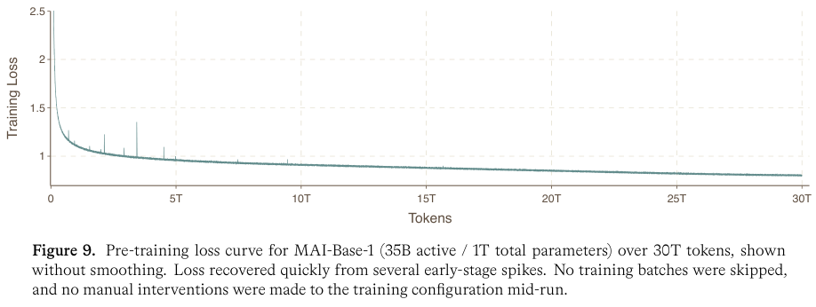
尽可能将类型转换与相邻操作融合，例如 RMSNorm。当 gradient 从高精度流向低精度时，应用随机舍入（Zamirai et al., 2020；Ozkara et al., 2025）。之所以出现这种情况，是因为层内计算精度低于 residual stream，反向传播需要降低 gradient 精度。
2.6.4 训练损失曲线
图 9 展示未经平滑的 MAI-Base-1 训练损失曲线。训练初期出现几次尖峰，但每次损失都迅速恢复，我们继续运行，没有干预。运行时日志显示，尖峰主要影响代码数据集，并与不丢弃路由下的专家高度不均衡相关：token 不成比例地集中到少数专家。
2.7 评测及与同期模型比较
本节将 MAI-Base-1 与同期可用基础模型比较，使用第 2.3 节讨论的开发用 NLL 评测的一个子集。其中一项基于内部训练软件栈源代码（第 2.8 节），其他由供应商受托制作，因此我们确信它们不在任何模型的训练集中。表 3 所述多语言基准来自已从我们训练中排除的公开来源，但无法据此可靠比较，因此不使用。
比较聚焦预训练基础模型，报告不随 tokenizer 改变的每字节比特数（BPB）。多数模型 API 无法做 NLL 评测，因此聚焦 huggingface.co 上托管的开放权重模型：DeepSeek v3.2（DeepSeek-AI et al., 2025b）³、DeepSeek v4 Pro（DeepSeek-AI, 2026）⁴、Kimi-K2（Kimi Team et al., 2026）⁵ 和 Gemma4-31B（Gemma Team, 2026）⁶。此外，纳入上一代同样训练 30T token 的一个 23B 模型，以量化进展。
结果汇总于图 10。MAI-Base-1 相较激活参数相近的模型具有明显优势，在全部四项留出任务上 BPB 更低。DeepSeek-v4 达到最佳结果，其激活参数为 MAI-Base-1 的 1.4 倍，总参数为 1.6 倍。我们的（接下页）
³ deepseek-ai/DeepSeek-V3.2-Exp-Base
⁴ deepseek-ai/DeepSeek-V4-Pro
⁵ moonshotai/Kimi-K2-Base
⁶ google/gemma-4-31B
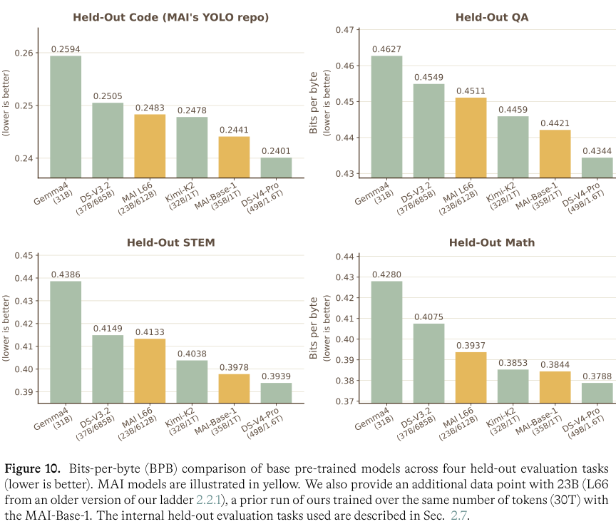
（接上页）23B 模型在激活参数仅为 DeepSeek v3.2 基础模型的 62%、总参数相近的情况下，表现优于后者。
2.8 YOLO：大规模分布式训练
You Only Launch Once（YOLO）是 MAI 内部大规模训练框架，用于 MAI-Thinking-1 的整个开发周期。YOLO 基于 PyTorch（Paszke et al., 2019）构建，位于第 L.3 节所述的调度和运行时软件栈内。
YOLO 支持大规模模型训练的所有阶段，包括预训练、中期训练、SFT 和强化学习中的训练部分。它实现核心训练循环，包含模型定义、分片、优化器、数据加载及 checkpoint。我们从头构建 YOLO，以完整控制从内核、并行到调度的端到端训练栈。YOLO 借鉴 Megatron-Core（Yan et al., 2026）、DeepSpeed（Rasley et al., 2020）和 TorchTitan（Liang et al., 2024）等大规模框架经验，与计算基础设施其余部分及模型训练协同设计、深度集成。这让我们能够在计算环境和模型架构演变时，同等重视训练速度、有效吞吐量、确定性、灵活性和开发敏捷性。下节介绍 YOLO 的主要（接下页）
（接上页）组件，以及它们如何根据设计原则实现优化。
2.8.1 系统概述
YOLO 由实现 transformer 模型的一组构件，以及训练循环和数据加载器、checkpoint、日志、可观测性等辅助组件组成。
内核。为高效支持大规模数值方案（第 2.6.3 节），YOLO 包含以 Triton、CUDA、CuteDSL 和 CUTLASS 编写的自定义内核套件。包括：针对前向和数据 gradient 计算优化、支持 FP8 延迟缩放的 FP8 GEMM；用于 MoE 的 grouped GEMM，在每 GPU 托管多个专家时提升效率——我们的预训练通常为 8 个（512 专家、专家并行度 64）——并支持包括 FP8 延迟缩放的所有混合精度模式；融合量化内核，在应用缩放因子 swizzling 以提高内存效率的同时，量化反向传播所需的原始和转置张量，并尽可能将 RMSNorm 邻近的类型转换融合进归一化内核以降低开销。此外，非 grouped 量化内核支持 Cluster Launch Control（CLC），这是 Blackwell 特有的动态内核负载均衡功能。
张量分片。YOLO 根据每次运行的模型规模与集群基础设施，组合不同并行形式。为精细控制模型中每个张量的分片方式，YOLO 实现类似 JAX（Bradbury et al., 2018）或 PyTorch DTensor（Paszke et al., 2019）的自定义分片注解。注解描述张量如何在 \(n\) 维笛卡尔网格上划分或复制，可按分片类型将张量分组。各张量划分到底层网格，网格建立在 PyTorch communicator 上，后者提供该张量的集合与点对点通信原语。我们有意让注解仅作描述，不自动在计算图插入通信原语，避免意外同步点。
YOLO 的分布式张量允许独立定义每个模型参数的分片，在模型内实现灵活张量并行。例如对 embedding、损失和 attention 权重使用张量并行，而 MLP、MoE 权重不使用。又如，MoE 与非 MoE 层的张量可使用不同数据并行度，即 parallel folding（Yan et al., 2026）。
并行。基于分布式张量，YOLO 实现全部常用并行：数据并行、张量和上下文/序列并行、专家并行，以及流水线并行（Huang et al., 2019；Qi et al., 2023）。
- 数据并行。YOLO 从头构建自定义 ZeRO 1–3 阶段（Rajbhandari et al., 2020），适配优化器及性能优化。实现按独特分片方式、数据类型和可配置 ZeRO 单元将参数分组，并将全部参数与 gradient 合并进连续缓冲区，最大程度减少 gradient 归约和 ZeRO 1–3 所需集合通信次数。ZeRO 还将参数拆成多维块，保持与分布式 checkpoint 切片兼容，并避免集合通信前后重排。无论 ZeRO 阶段如何，参数始终以分片形式存储，这使分布式 AdamW 更简单，因为优化器状态也始终自动分片。各阶段主要区别在于已收集参数或 gradient 缓冲区何时及多频繁清空。例如 ZeRO-1 在首次前向传播 all-gather 参数，最后一个 micro-batch 后才清空；ZeRO-3（FSDP）则在参数使用后立即清空。
- 张量并行。YOLO 通过列并行和行并行 GEMM 实现，激活和权重张量均在相同数量 rank 上分片，通常称为序列并行（Shoeybi et al., 2019；Korthikanti et al., 2023）。激活超出权重分片程度的额外分片，在 attention 层视为上下文并行，在其他位置视为数据并行。
- 上下文并行。YOLO 采用 Ulysses 式上下文并行（Jacobs et al., 2023），通过并行矩阵转置（all-to-all）重划分激活张量，将序列维分片移到 attention 头（隐藏）维。MAI-Base-1 仅在长上下文中期训练使用上下文并行，而所有训练阶段都使用张量/序列并行。
- 专家并行。最初实现类似 GShard（Lepikhin et al., 2020），以静态张量形状和预设容量因子执行 all-to-all。后续改为不丢弃 MoE，使用可变大小 all-to-all 将每个 token 路由到选定专家。所有预训练均在 NVLink 域内使用专家并行（张量并行度为 1），跨机架使用数据并行。
激活 checkpoint 与卸载。以 ZeRO 数据并行训练 MAI-Base-1 时，激活消耗多数可用高带宽设备内存（HBM）。为减少内存占用并支持单个 NVLink 域内专家并行，YOLO 同时支持激活 checkpoint 和将激活卸载至主机内存。与 Megatron-Core 等框架类似，激活 checkpoint 可按不同粒度配置，从重算一个或多个完整 transformer 层，到细粒度重算层内中间激活，例如重算激活函数输出。所有训练阶段都组合使用 transformer 层 checkpoint 和细粒度重算。由于存储 checkpoint 激活所需内存随 transformer 层数线性增加，YOLO 也实现激活卸载。卸载与 checkpoint 互补，设备到主机传输使用锁页主机内存，在专用 CUDA stream 异步执行，因此额外开销极小。
MoE。我们的 MoE 层平衡研究灵活性与训练效率，支持不丢弃和容量封顶模式、多种负载均衡策略，包括全局 batch 负载均衡损失（Qiu et al., 2025；Yang et al., 2025）与无损失方案（Wang et al., 2024a）、可配置 Top-k 计分、细粒度遥测，以及 RL rollout 的 router replay。专家并行中，将本地专家分为大小可配置的组，并跨组流水化“分发 → 计算 → 收集”，使除首次分发和末次收集外的通信均与专家计算重叠；剩余暴露通信与全局负载均衡计算以及可选共享专家计算重叠。为避免不丢弃模式下不均衡导致的内存波动、碎片和 OOM，支持静态内存不丢弃模式：每组运行多轮容量封顶的分发、计算、收集，每轮处理固定容量以内的 token。反向传播按专家、按轮次进行细粒度重算，避免存储不均衡激活。性能方面，采用支持全部数值方案、低开销的自定义 Grouped GEMM 与量化内核，以及自定义 CuTe DSL 对称内存内核，实现设备发起、可变大小、通过 NVLink 进行的高吞吐 all-to-all 通信。
2.8.2 确定性与正确性
为科学复现、开发敏捷性及调试系统健康等目的，我们强制训练确定性，即使牺牲训练效率，例如 MFU。对于固定硬件拓扑、模型配置和软件版本，确保预训练过程（接下页）
（接上页）按位可复现。简言之，硬件资源和配置相同的两次训练将产生逐位相同的模型。确定性需要仔细关注训练栈多个层面：
- 数据流水线。对给定数据并行 worker 配置，训练 micro-batch 顺序固定。虽然 worker 异步预取 batch 来隐藏 I/O 延迟，我们仍确保待处理 batch 队列在运行和重启间一致。
- 训练 checkpoint。存储全部有状态数据，包括模型权重、优化器状态、FP8 缩放历史、数据加载进度和随机数生成器。
- GPU 内核。浮点累加不满足结合律，因此可复现归约需要控制组合顺序。训练栈按规定顺序执行确定性累加，不依赖累加顺序由调度器决定的无序 GPU 原子操作。例如 RMSNorm 反向传播使用两阶段分块归约：首个内核生成逐块部分和，最终内核按固定顺序归约。又如 MoE 路由 Top-k 选择，内核使用稳定排序，避免非确定性的同分处理。
- 网络集合通信。与 GPU 内核浮点归约类似，all-reduce 和 reduce-scatter 等集合操作必须确定。我们禁用 NVLink SHARP（Graham et al., 2020），以牺牲部分性能确保确定性。同时强制每次运行使用一致 NCCL 拓扑，使机架内归约始终按相同顺序累加。
YOLO 演进时，我们也借助确定性建立对数值正确性的信心。测试跟踪“黄金”模型配置，对全部训练指标，例如损失、gradient 范数和权重张量校验和，进行精确比较。这不意味着不允许导致训练结果不同的数值改动；修改影响浮点行为的内容，例如升级系统软件或 GPU 内核时，变化是预期的。这让软件历史中预期数值变化拥有明确记录。
2.8.3 容错
大规模训练必须容忍频繁硬件故障，同时尽量减少对训练效率的影响。YOLO 结合分布式 checkpoint 与快速切换到热备用节点，将故障期间丢失的训练进度和停机时间降至最低。
分布式 checkpoint 格式。基于 PyTorch 分布式 checkpoint 库 DCP，后者跨 rank 去除复制状态，并支持加载时重新分片张量。我们重写 DCP 元数据生成与序列化路径，降低 CPU 内存开销及 Python 垃圾回收压力，加快序列化/反序列化。总体使 CPU 内存开销和 checkpoint 保存时间都降低超过 10 倍。原库在实现中仅保留公开 API 和将张量分片映射至存储的核心逻辑，即 save plan。我们还预计算 DCP save plan 并缓存于持久存储，移除关键路径上的这项昂贵计算。
异步 checkpoint。为减少保存 checkpoint 时的训练停机，先直接在训练进程中将张量从设备复制到主机，再将剩余工作卸载到独立 checkpoint 进程，同时继续训练。该进程经前端网络写入持久存储，并处理跨 rank 协调，以原子方式提交 checkpoint。为支持我们的规模，用基于共享键值存储的自定义协调层替换标准 CPU 集合通信后端。还采用机会式准入控制，轮询在途 checkpoint 的完成状态，并尽早启动下一份，同时确保（接下页）
（接上页）同时最多有一个 checkpoint 在途。这种方法配合精细主机内存管理，使我们能频繁保存 checkpoint，并尽量减少对训练 MFU 的影响。
存储基础设施。训练数据中心有本地 Azure Blob Storage（Calder et al., 2011），提供低延迟、高带宽访问，因此可直接依赖 checkpoint 容错，无需中间节点本地缓存或跨 rank 状态复制。为防止大规模加载时许多 rank 请求相同复制状态造成存储热点，我们从存储只加载一次复制状态，再经 NCCL 广播，消除可能压垮单个存储服务器的单 blob 扇入热点。
快速作业恢复。通过带热备用的 Ray（Moritz et al., 2018）actor 在作业内重启，实现快速恢复，消除重新创建 pod 的开销。在 GB200 系统上，actor 重启时明确清空操作系统缓存，避免 GPU 持有先前运行的残留内存时，由内存不足造成崩溃循环。最后，将重新计算步骤与历史损失指标比较，验证重启后确定性。
2.8.4 性能与模型架构协同优化
MAI-Base-1 最终架构源于跨五个主要代次（v1–v5）的持续协同设计。每代追求两个互补目标。首先，通过改变模型设计、路由策略和训练方案，改善架构效率增益与建模能力。其次，识别性能瓶颈，引入基础设施、内核、通信和内存管理优化，持续提升训练效率。架构变化改变计算特征，也经常引入新的系统瓶颈，需要训练栈相应改进。
我们介绍模型架构和基础设施演进，以说明构建大规模模型的方法。每次演进跟踪两项指标：
- 模型 FLOP 利用率（MFU）（Chowdhery et al., 2023），定义为 \(\mathrm{FLOP}/(t_{\mathrm{step}}\cdot\mathrm{FLOP}_{\mathrm{spec}})\)，量化实际训练效率。FLOP 为全部主导计算内核的浮点操作总数，包括 GEMM 和 attention，但不包括 RMSNorm、激活函数等受内存限制的操作。\(t_{\mathrm{step}}\) 是端到端训练步时间，包含加载数据、前后向传播、通信和优化器更新。虽使用 FP8、BF16 和 FP32 混合运算，MFU 仍按 NVIDIA 报告的 FP16/BF16 tensor core 吞吐量归一化（每 GB200 GPU 稠密运算 \(\mathrm{FLOPs}_{\mathrm{spec}}=2.5\times10^{15}\) FLOPS）。激活 checkpoint 引入的运算不计入 FLOP。
- 效率增益。第 2.2.2 节定义，刻画达到给定质量时模型效率的理论改进。
表 7 汇总各代关键架构变化。图 11 同时报告新架构沿用上一代优化栈运行的初始 MFU，以及应用版本特定性能优化后的最终 MFU。开发中引入超过二十项基础设施与内核优化，使每一代在模型规模和架构复杂性大幅增加的情况下，仍维持高于 20% 的 MFU。v0、v1 为 H100 上训练的早期原型，因此不列入图 11。
从版本 2 起，所有主要训练均在 GB200 NVL72 集群进行。版本 2（23B 激活参数）是首个在 GB200 NVL72 集群训练的版本，共 4,096 GPU。为提高系统稳健性，每机架使用 64 GPU（NVL64），预留备用容量以容忍节点故障与不健康设备。版本 2 保持 23B 激活参数预算，采用比之前更深、更窄的设计，导致隐藏维度相对（接下页）
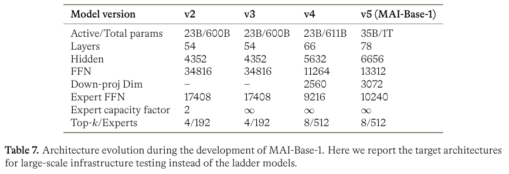
（接上页）较小。为最大化 GEMM 效率，我们选择专家并行（EP）度 64、张量并行（TP）度 1，确保全部专家 all-to-all（A2A）通信留在 NVL64 域内。该配置初始 MFU 为 18%。跨机架 InfiniBand（IB）用于数据并行（DP）通信，例如参数 all-gather 和 gradient reduce-scatter。后续版本保持同样设置。
性能分析发现三个主要瓶颈：DP 通信、确定性 attention 内核、专家路由开销。启用 GPU Direct RDMA 改善通信与计算重叠，端到端训练时间改善约 1.1 倍。由于 FlashAttention-2（FA2）确定性模式在 GB200 效率不佳，且当时没有 FA4，我们开发自定义块稀疏 attention 后端，步时间额外改善 1.06 倍。单 micro-batch 训练配置下，采用 ZeRO-2 优化器分片，相比 ZeRO-1 不增加通信却减少 gradient 内存，因而可禁用额外激活重算，再提升 1.03 倍。最后，用自定义 Triton 实现替换仅利用 10% 可用 HBM 带宽、受内存限制的 PyTorch 专家编码内核，达到约 80% HBM 利用率，端到端性能再提升 1.03 倍。总体上，这些优化将 MFU 从 18% 提高至 22%。
版本 3 保留整体架构，但将容量受限路由改为不丢弃 MoE 路由。从效率增益看，这允许使用更好的 MoE 负载均衡策略。消除专家容量填充也减少通信量和专家 GEMM 计算，对 MFU 有益。但不丢弃路由要求运行时动态传递专家 token 数和张量形状，引入新的同步开销。为减轻成本，将 token 数通信与其他运行时操作重叠，并将同步点移到专用 stream，从而在保持与版本 2 相近 MFU 时实现不丢弃路由收益。
版本 4 引入三项重要架构变化：专家数从 192 增至 512，路由从 Top-4 扩至 Top-8，并使用 LatentMoE。增加专家提高学习容量，LatentMoE 则帮助控制专家增加后的 A2A 成本。同时训练作业从 4,096 扩至 8,192 GPU。LatentMoE 缩小专家 GEMM，使 CPU 启动开销和内核效率变得更重要。初始 MFU 因此从 22% 降至约 16%。使用 FA4 确定性内核，相比块稀疏后端提升 1.14 倍，再结合减少 CPU 开销、提高运行时 batch 效率的改进，使 MFU 从 16% 提至 20%。
版本 5 将激活参数从 23B 增至 35B，总参数从 600B 增至 1T。更大模型显著增加参数与激活内存需求。初始（接下页）
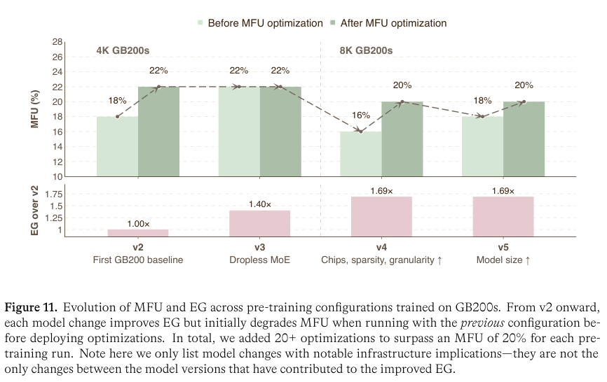
（接上页）部署因而依赖 ZeRO-3 优化器分片，但分析显示，额外参数 all-gather 使反向传播受通信限制。为此，通过激活卸载降低 GPU 内存压力，使训练系统回到 ZeRO-2 分片。消除 ZeRO-3 参数 all-gather 后，恢复通信与计算重叠，提高整体效率，使最终版本 5 维持约 20% MFU。
3 强化学习爬坡
预训练和中期训练赋予 MAI-Base-1 广泛预测能力与知识，但并不规定模型应如何行动、解决长时程任务或分配推理时计算。强化学习（RL）爬坡通过针对任务反馈优化模型来解决这些问题，使其能先生成 chain-of-thought（CoT）再回答，使用外部工具，与环境交互，并遵循偏好和安全信号。
MAI-Thinking-1 是首个内部推理模型，因此 RL 从未接触过推理轨迹的 checkpoint 开始，模型必须从头发展推理能力，长期训练稳定性成为核心挑战。我们通过三项机制实现：（i）对 Group Relative Policy Optimization（GRPO，Shao et al., 2024）进行两个简单却关键的调整；（ii）在崩溃或基础策略更新后通过自蒸馏恢复 RL 爬坡（第 3.1 节）；（iii）基础设施改进，消除训练与推理的数值不匹配（第 3.6 节）。
为支持并行开发，训练三个专用模型：STEM 与竞赛代码（第 3.2 节）、agent 编程与工具使用（第 3.3 节）、有用性与安全（第 3.4 节）。所有专用模型遵循相同 RL 方案，但提示分布和奖励内容不同。如图 12，它们随后（接下页）
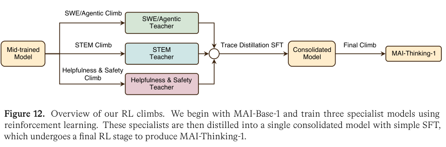
（接上页）通过 SFT 整合到单个模型。最后一次轻量 RL 爬坡将整合模型变为在各领域均表现强劲的 MAI-Thinking-1（第 3.5 节）。
3.1 强化学习方案
3.1.1 RL 目标
强化学习爬坡从策略 \(\pi_\theta\)，例如中期训练模型开始。对于提示 \(q\)，rollout 策略采样一组 \(G\) 个回答 \(y_{1:G}\)，每个回答 \(y_i\) 获得一个标量奖励：
\[R_i=R(q,y_i).\tag{4}\]
奖励函数 \(R\) 依赖领域，通常基于执行代码、提示驱动的 AI 评判器反馈，或训练好的奖励模型。训练目标由 GRPO（Shao et al., 2024）派生，采用 token 级策略 gradient（Yu et al., 2025）：
\[\small \mathcal J(\theta)=\mathbb E_{q\sim P(Q),\ y_{1:G}\sim\pi_{\mathrm{old}}}\!\left[\frac{1}{\sum_{i=1}^{G}|y_i|}\sum_{i=1}^{G}\sum_{t=1}^{|y_i|}\min\!\left(r_{i,t}(\theta)A_i,\operatorname{clip}(r_{i,t}(\theta),1-\epsilon,1+\epsilon)A_i\right)\right].\tag{5}\]
其中，\(P(Q)\) 是所有提示的分布，\(\pi_{\mathrm{old}}\) 是生成 rollout 的策略。实际中，归一化跨全局训练 batch 的全部 token 计算，覆盖所有数据并行 rank，使每个 token 贡献相同，不受回答长度影响。对于回答 \(y_i\) 的 token 位置 \(t\)，重要性采样比为：
\[r_{i,t}(\theta)=\frac{\pi_\theta(y_{i,t}\mid q,y_{i,<t})}{\pi_{\mathrm{old}}(y_{i,t}\mid q,y_{i,<t})}.\tag{6}\]
回答级优势 \(A_i=(R_i-\operatorname{mean}(R_{1:G}))/\operatorname{std}(R_{1:G})\) 在回答 \(y_i\) 的全部 token 间共享。我们对目标作两项修改：自适应熵控制，动态调整上裁剪界以维持目标策略熵；外层比率裁剪，对目标未裁剪分支设上限，防止 gradient 范数爆炸。
自适应熵控制。类似 Yu et al.（2025）和 Mistral-AI et al.（2025），使用独立下、上裁剪界。以控制基础信任域宽度的单个基础超参数 \(\epsilon\)，配合依赖熵的上裁剪界放宽量 \(k\) 进行参数化：
\[r^{\mathrm{tr}}_{i,t}(\theta)=\operatorname{clip}\left(r_{i,t}(\theta),1-\epsilon,(1-\epsilon)^{-1}+k\right).\]
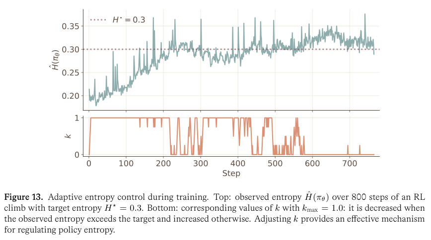
我们发现，上界需要仔细调整：过大可能造成熵爆炸，过低则熵坍塌，另见 Cui et al.（2025）和 Xi et al.（2025）。
为此，使用简单积分控制器，依据当前策略熵动态调整 \(k\)。每步用重要性加权估计器，估计目标策略逐 token 熵：
\[\widehat H(\pi_\theta)=\frac{1}{|\mathcal T|}\sum_{(i,t)\in\mathcal T}-\log\pi_\theta(y_{i,t}\mid q,y_{i,<t})\cdot r_{i,t}(\theta).\tag{7}\]
\(\mathcal T\) 是当前训练 batch 中全部（回答索引，token 索引）对的集合。给定目标熵 \(H^\star\)，控制器每步后按步长 \(\delta\in\mathbb R_+\) 更新 \(k\)：
\[k\leftarrow\operatorname{clip}\!\left(k+\delta\cdot\operatorname{sign}(H^\star-\widehat H(\pi_\theta)),0,k_{\max}\right).\tag{8}\]
直观而言，熵太低时增大 \(k\)，放宽上裁剪界，允许策略更积极地提高其他 token 概率。熵足够高时减小 \(k\)，收紧信任域。如图 13，这一机制自动正则化熵，无需在损失中加入明确熵奖励项；我们发现后者不及自适应熵机制。
初始化 \(k=0\)，此时裁剪界 \(1-\epsilon\) 和 \((1-\epsilon)^{-1}\) 互为乘法逆元，使初始裁剪区间在对数比率空间对称。随后按上述熵控制器在线更新 \(k\)。
外层比率裁剪。GRPO 目标有意不裁剪两种情形：（a）优势为负而新策略概率高于旧策略，即 \(A_i<0, r_{i,t}>1\)；（b）优势为正而新策略概率较低，即 \(A_i>0, r_{i,t}<1\)。原始动机（Schulman et al., 2017）是让策略朝正确方向自我修正时不受限，仅限制利用优势估计的移动。
但实际中，这些未裁剪分支有时导致灾难性的 gradient 范数尖峰。我们加入应用于全部分支的硬外层裁剪：
\[r^{\mathrm{out}}_{i,t}(\theta)=\operatorname{clip}(r_{i,t}(\theta),r_{\min},r_{\max}).\tag{9}\]
\(r_{\max}\) 设为较大值，\(r_{\min}\) 可不加约束；思想上类似 Ye et al.（2020）提出的 dual-clip PPO。两层策略舍弃新旧概率极端不一致的情况，同时对正常范围的比率保留标准信任域行为。实证上，这减少 gradient 范数尖峰，使爬坡更稳定。
3.1.2 奖励设计
领域专用 RL 的任务项不同，但始终使用相同奖励分解：
\[R(q,y_i)=R_{\mathrm{task}}(q,y_i)+w_{\mathrm{lang}}R_{\mathrm{lang}}(y_i)-w_{\mathrm{len}}R_{\mathrm{len}}(y_i).\tag{10}\]
\(R_{\mathrm{task}}\) 是任务特定奖励，\(R_{\mathrm{lang}}\) 为语言一致性奖励，\(R_{\mathrm{len}}\) 为长度惩罚，\(w_{\mathrm{lang}},w_{\mathrm{len}}\) 为标量超参数。
语言一致性奖励。随着 RL 上下文变长，模型开始在 CoT 中生成外语 token。混合语言 CoT 与训练、推理策略间对数概率偏差尖峰相关，最终破坏稳定性。为此，使用类似 Guo et al.（2025）的语言一致性奖励。由于训练分布以英语为主，相对英语定义一致性：
\[R_{\mathrm{lang}}(y_i)=\max(1-\alpha\,n_{\text{non-english}}(y_i),0).\tag{11}\]
\(n_{\text{non-english}}(y_i)\) 为回答 \(y_i\) 的 CoT 中非英语词数，\(\alpha\) 为逐词惩罚。实际发现，top-p 采样同样能够有效防止单个低概率外语 token 出现。
长度惩罚。遵循 Xiang et al.（2025），定义：
\[R_{\mathrm{len}}(y_i)=\rho_q\frac{|y_i|}{\ell_{\max}}.\tag{12}\]
\(\rho_q\) 是问题 \(q\) 的通过率，\(\ell_{\max}\) 是最大 rollout 长度。惩罚同时取决于回答长度和问题难度。低通过率难题惩罚较弱，让模型探索更长推理轨迹。简单题惩罚更强，通过消除冗余循环和犹豫行为，鼓励简洁、成本高效的推理。
3.1.3 采样策略
我们采用多种采样策略改善 RL 爬坡的效率与稳定性，涉及两层：选择用于训练的问题，以及控制这些问题的 rollout 如何生成。
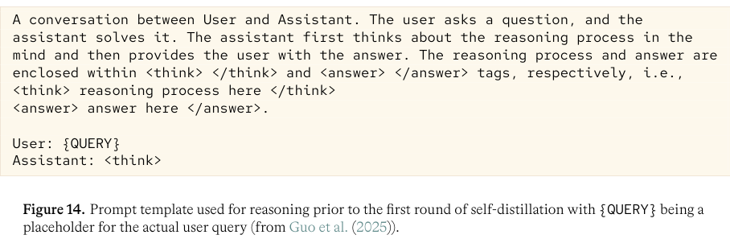
问题采样。对训练集每个问题 \(q\)，使用当前推理模型生成一组 rollout。为减少推理成本，先采取提前退出策略：采样 \(G_{\mathrm{early}}<G\) 个回答，计算经验通过率，即奖励为正的回答比例。若提前通过率处于可接受区间 \([\rho^{\mathrm{early}}_{\min},\rho^{\mathrm{early}}_{\max}]\)，再采样完整 \(G\) 个回答，否则丢弃该问题。
全部 \(G\) 个回答生成后，对整组应用第二道通过率过滤 \([\rho_{\min},\rho_{\max}]\)。仅使用完整通过率落在区间内的问题训练。主要动机是移除方差极低的组：若几乎全部正确或全部错误，组提供的有效相对学习信号很少。
Rollout 采样。使用 \(\pi_{\mathrm{old}}\) 进行 top-p 采样（Holtzman et al., 2019），生成 rollout \(y_{1:G}\)。我们发现，继续通过采样 nucleus 之外 token 对应的 logits 反向传播，可能产生灾难性的 off-policy 不匹配，数步内导致发散。为避免这一点，遵循 DeepSeek-AI et al.（2025b），重用 rollout 采样的 top-p 截断掩码，在 softmax 前将所有排除 token 的 logits 设为 \(-\infty\)，训练中将其排除。top-p 掩码显著减小 RL 策略偏离，代价是额外掩码存储与重放开销。
为提高爬坡初期训练效率，最初将最大 rollout 长度限制为 8K token。随着训练推进，以 2 的幂增加上限，最终达到 128K token 输出。我们发现，这种长度扩展课程显著降低低表现阶段的推理成本，因为此时很少需要长推理轨迹；同时随着能力提升，模型仍能逐渐适应长上下文。
3.1.4 自蒸馏
从中期训练 checkpoint 达到强性能需要大量 RL 步。使用自蒸馏（Huang et al., 2022；Zelikman et al., 2022；Singh et al., 2023；Zhao et al., 2026），使长时间爬坡更实际。收集 RL 期间生成的 rollout，用它们对中期训练 checkpoint 做 SFT。所得模型成为继续 RL 的起点，同时保留之前 RL 阶段发现的能力。自蒸馏有几种用途：
- 初始爬坡用领域或任务提示引出目标行为，例如图 14 的 STEM 初始原始文本提示。仅需更新 SFT 数据格式，就可由提示方式转为原生聊天格式。
- 另一个主要用途是从偶发运行故障恢复。在 RL 软件栈开发早期，（接下页）
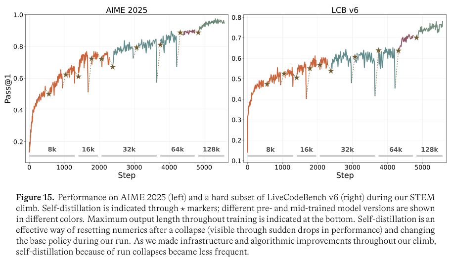
- （接上页）在第 3.6.4 节稳定性改进引入之前，推理与训练间的微小数值差异有时会累积，导致爬坡发散。此时自蒸馏提供简单有效的方法，将进展从一次 RL 转入下一次。从坍塌前 checkpoint 恢复通常不可行，因为某些不稳定性在实际坍塌前许多步就已嵌入参数。
- 新的预训练与中期训练 checkpoint 可用时，自蒸馏将此前爬坡进展延续到下一代模型。
- 自蒸馏中可应用过滤，拒绝表现出不希望出现的 reward hacking 形式的样本。
图 15 展示 STEM 爬坡中如何通过自蒸馏恢复数值不稳定，并更新基础策略。
关键发现与最佳实践。我们开展广泛消融，了解实际中如何最好地执行自蒸馏。主要发现如下：
- \(O(1\mathrm M)\) 条推理轨迹足以匹配教师表现，同时保留 SFT 稳定性收益。显著增大数据集会收益递减，并可能过度约束策略、收窄输出分布，使恢复 RL 后探索空间很小（Zheng et al., 2024；Gao et al., 2025）。
- 在包含最终答案错误的轨迹上训练，与仅使用成功轨迹表现相近（Gandhi et al., 2025）。由于 RL 通常产生远多于 \(O(1\mathrm M)\) 条成功轨迹，最终限制为仅使用成功轨迹。
- 使用爬坡后期轨迹很重要。包含早期 checkpoint 轨迹会明显降低表现，需要后续大量 RL 步恢复。仅由最终 checkpoint 生成轨迹，恢复 RL 后表现也较弱。一种解释是，来自一组强 checkpoint 的轨迹比单个最终策略更多样，有助于 RL 探索。重用 RL 中已有轨迹还避免重新采样所需额外计算和时间。
- 固定 token 预算时，增加提示多样性比增加每提示轨迹数更有价值。简单随机采样也优于多种有偏选择策略，包括最短轨迹采样和类似 Yang et al.（2025）的启发式过滤。
- 自蒸馏中，模型可能遗忘中期训练学到的长上下文行为，尤其是轨迹来自最大长度更短的早期 RL 时。为缓解，在长度扩展前的自蒸馏中，将中期训练数据与推理轨迹混合。
3.1.5 超参数
下面报告三个领域专用模型的主要 RL 爬坡和自蒸馏通常使用的超参数。
RL 爬坡。使用 AdamW，\(\beta_1=\beta_2=0.95, \epsilon=10^{-15}\)，无权重衰减。恒定学习率 \(\eta=10^{-6}\)，无 warmup 或衰减。打包后全局 batch 为 7040，未打包序列总数最多 12000。RL 栈完全异步，生成长度增加时 rollout 延迟增加，但因许多生成很短，训练步时间并不同比增加。这使通常对应最难问题的长 rollout 更加 off-policy。为此，在较长长度下降低学习率至 \(9\times10^{-7}\)，减少 off-policy 程度并提高稳定性。最大生成长度 128K，先在 8K、16K、32K、64K 训练。
自适应熵控制的 GRPO 使用 \(\epsilon=0.6, k_{\max}=2.5, \delta=0.25, H^\star=0.3\)。外层裁剪设 \(r_{\max}=50\)，\(r_{\min}=0\) 不加约束。
语言一致性奖励用 \(w_{\mathrm{lang}}=0.5\)，逐词惩罚 \(\alpha=0.005\)。长度惩罚在 64K 扩展阶段及以前固定 \(w_{\mathrm{len}}=0.25\)。因按 \(\ell_{\max}\) 归一化，最大长度增加时有效惩罚自然减弱，允许模型在更大 token 预算探索更长轨迹。128K 阶段移除长度惩罚，即 \(w_{\mathrm{len}}=0\)。
问题采样用总 rollout 数 \(G=128\)，\(G_{\mathrm{early}}=16\)，\([\rho^{\mathrm{early}}_{\min},\rho^{\mathrm{early}}_{\max}]=[0.05,0.8]\)。完整通过率过滤为 \([\rho_{\min},\rho_{\max}]=[0.1,0.8]\)。top-p 采样用 \(p=0.97\)。更大 nucleus 有助探索，却增加传输采样掩码的基础设施开销；我们发现 0.97 在探索和效率间平衡良好。
每次推理模型更新间执行 5 步 gradient 更新，丢弃生成策略落后超过 8 次推理更新、即 40 步 gradient 的 rollout。略微放宽 on-policy 新鲜度，换取显著更高吞吐量。使用不丢弃 MoE 训练，全局 MoE 负载均衡系数 \(1\cdot10^{-5}\)。
自蒸馏。自蒸馏 SFT 使用打包序列，全局 batch 2,048，序列长度 128K token。优化器 AdamW，权重衰减 0.001，余弦学习率。最大学习率 \(1.7\cdot10^{-5}\)，最小 \(5.2\cdot10^{-6}\)，warmup 比例 2%。
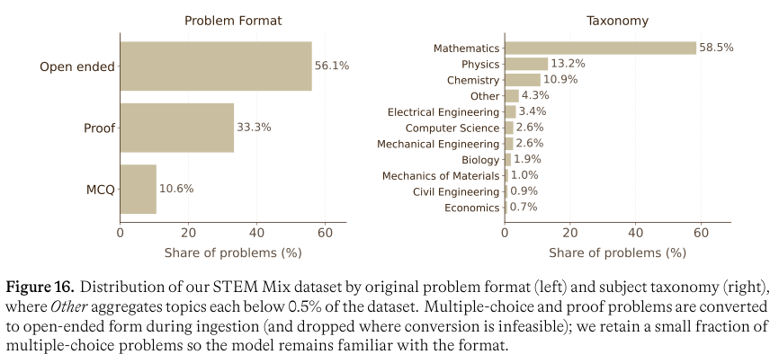
自蒸馏时仔细调整 dropout（Srivastava et al., 2014）和 MoE 负载均衡损失系数。采用较高的 0.15 dropout，增加熵、帮助防止模型坍塌，改善后续 RL 表现。领域专用 RL 的数据分布显著窄于预训练和中期训练，专家选择可能高度不均衡。但 RL 使用较大均衡系数也损害稳定提升。为此，自蒸馏使用相对大的 \(1\cdot10^{-2}\)，RL 则使用小得多的 \(1\cdot10^{-5}\)。自蒸馏上下文由 RL 本身生成，分布相近，因此自蒸馏引起的专家均衡效果能在 RL 中保持。
3.2 STEM 爬坡
STEM 爬坡是三个领域专用 RL 中最长的一次，旨在增强单轮解题中的核心推理能力。覆盖数学、物理、化学及竞赛编程等广泛领域。爬坡期间，我们也在 rollout 中观察到不断演进的模型行为，附录 D.1 详述。由于数据质量是成功核心，我们重点介绍训练数据及为构建、验证、过滤这些数据而开发的流水线。
整个 STEM 爬坡基于成对可验证数据。为产生任务特定奖励 \(R_{\mathrm{task}}(q,y_i)\)，从 \(y_i\) 提取最终答案，用 SymPy（Meurer et al., 2017）等形式化验证器或 AI 评判器与真实答案比较；竞赛编程则针对问题特定测试套件运行模型代码。因此每个 RL 数据实例包含查询与真实答案对 \((q,a)\)，或查询与 \(n\) 个测试用例对 \((q,\{t_1,\ldots,t_n\})\)。设计获取这些数据对的流水线时，考虑高质量、难度适当和主题多样性三个标准。
STEM 数据流水线处理数百万文档，得到含超过 5M 样本的 STEM Mix，用于 STEM 爬坡；最难部分包含超过 550K 个 \((q,a)\) 对。图 16 展示其部分属性。
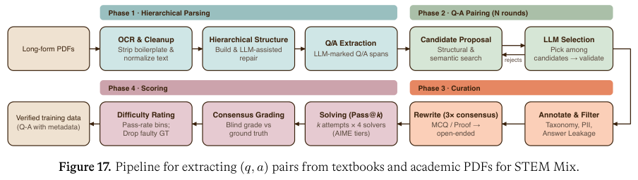
3.2.1 数据流水线
STEM 流水线将教科书、学术 PDF、论坛讨论、竞赛档案及各供应商问题等异构原始来源，转为 \((q,a)\) 对的数据集。架构由可组合的阶段构成，每个处理步骤实现为独立异步阶段。针对来源的流水线实例按需选择和组合这些阶段的子集。
以下以图 17 从长篇教科书和学术 PDF 提取 \((q,a)\) 的示例为基础，将若干阶段分为四个环节介绍。对噪声或幻觉敏感的阶段运行多次，通过共识投票决定。
分层解析。此环节将原始文档转为初始 \((q,a)\) 对。根据文档类型，用视觉语言模型或 OCR 服务识别。文档切块，丢弃不含 STEM 的页面，移除样板文本。另一个阶段利用 OCR 输出的结构线索建立层次表示，修复损坏的交叉引用、错位编号及跨页拆分伪影。最后，在问答提取阶段，LLM 在清理后的文档结构内标记问题和答案区间，生成候选 \((q,a)\) 对。
问答配对。对于问题和答案位置分离的来源，例如章末练习和附录答案，通过多轮配对将各问题匹配到对应答案。先依据结构信号和语义相似度匹配候选答案，再由 LLM 在检索候选中选择最佳匹配并验证。
整理。整理环节各阶段标注、过滤和改写 \((q,a)\) 对，确保质量及格式一致。其中数个阶段是基于 LLM 的分类：
- 可验证性：分为可验证和不可验证；不可验证项，例如无可核验答案的开放式论坛讨论，会丢弃。
- 问题类型：区分开放式、选择题和证明等类型。
- 分类体系：分层主题分类器赋予细粒度 STEM 主题，涵盖数学、物理、化学、生物、计算机科学和工程。
- PII 检测：专用分类器标记个人身份信息；有标记条目会丢弃。
- 答案泄漏：检测并丢弃答案 \(a\) 显然包含在问题 \(q\) 内的 \((q,a)\) 对。
另有两个整理阶段将问题转为更适于 RL 爬坡的形式。转换阶段将选择题和证明题改为开放式；选择题常可猜对，奖励信号不可靠；证明不借助更强 AI 评判器又难以直接验证。此阶段运行三次，再取共识，无法达成共识的条目视为无法可靠转换而丢弃。清理阶段移除额外的非数学文本及与问题无关的外部引用。
计分。最后一个环节量化难度，并过滤真实答案可能有误的条目。求解阶段，每题由四个能力层级的模型各解 \(k\) 次，模型的 AIME 2025 表现作为能力代理。按通过率将问题分到难度区间。
盲评阶段防范错误真实答案。对最强层级仍低通过率的问题，将该模型的共识答案和真实答案随机排序呈现给评判器。若它偏好共识答案，视为真实答案可疑并丢弃；若偏好真实答案，则保留为真正难题。
3.2.2 竞赛编程数据
竞赛编程使用不同于主要 STEM 流水线的专用流水线，因为每个提示都需要一组测试用例 \(t_1,\ldots,t_n\)。PDF 等非结构化来源不太可能含有附完整测试用例的提示。因此依赖定向来源和购得数据，省去 STEM 中许多提取和过滤步骤。
每题获得参考解答，并验证其通过所有对应测试。总计从多个来源收集 160K 问题，覆盖分治、动态规划、图和树算法及搜索等多样主题。每题除测试外还包含运行时间和内存限制。最终数据集支持包括 Python、C++、C#、Java、JavaScript、Rust 和 TypeScript 的 17 种语言。
3.2.3 去重与去污染
STEM Mix 与竞赛编程数据都内部去重，并对第 H 节报告的基准，以及内部跟踪的奥林匹克和研究生水平 STEM 评测去重。使用三个阶段：
- 精确去重。先用问题 SHA-256 哈希识别精确重复。
- 词汇模糊去重。先字符级 n-gram shingling，再 MinHash LSH 识别近重复问题，Jaccard 相似度超过阈值则标记重复。
- 向量去重。最后用轻量 embedding 模型嵌入问题，余弦相似度超过阈值则标记重复。
仔细调节每阶段超参数，尽可能保留数据，同时严格排除任何基准泄漏。
3.3 Agent 爬坡
Agent 爬坡训练 MAI-Thinking-1 解决需要与外部环境交互的任务，而非单次文本作答。在此设置下，模型必须分解用户请求，（接下页）
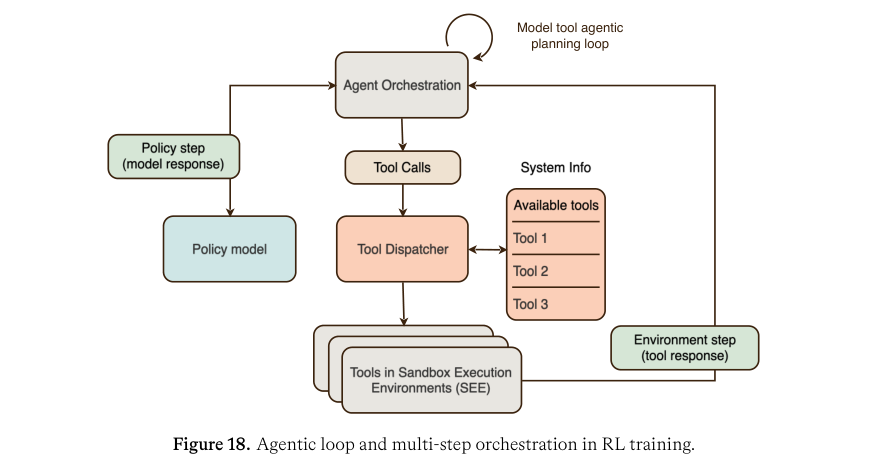
（接上页）选择工具或代码动作，观察结果，并在需要时跨多个步骤和轮次调整计划。训练信号结合可验证奖励，例如软件环境测试通过或数据库达到目标状态，以及 AI 反馈奖励，后者针对难以精确定义的行为方面，例如任务理解、有用性和轨迹质量。
聚焦两个 agent 领域：（i）软件工程（SWE）（第 3.3.1 节），涉及基于真实仓库构建的可执行软件工程环境；（ii）通用工具使用（第 3.3.2 节），涉及多步任务中的结构化工具调用。
实际中，我们将 agent 任务与聚焦推理的 STEM 任务共同混合爬坡，包括竞赛编程混合。加入 STEM 任务有助稳定 RL，并对多步软件工程和工具调用表现产生正向迁移。反过来，agent 任务对 STEM 单次作答表现既无正向也无负向迁移。类似 STEM 爬坡，整个过程中也观察到不断演进的行为，示例见附录 D.2。Agent 设置与 STEM 的差别在于使用多步 rollout 和容器化环境，后文详述。
多步 RL 框架。Agent 多步 RL 使用第 3.1 节单步推理 RL 的相同核心目标，但将 rollout 从单个采样回答扩为策略步骤与环境步骤（观察）组成的轨迹。每个 RL 环境包含任务规格、执行工具的 Sandbox Execution Environment（SEE）会话，以及在跟踪环境状态的同时评估任务完成度的可验证或评判奖励。每个策略步骤，模型可发出工具调用或生成最终回答。工具在 SEE 会话内执行，输出追加至上下文后再进入下一策略步骤。完整轨迹随后评定正确性，并可选获得 AI 反馈，然后将信用分配均匀应用于全部策略步骤的全部 token。
编排 harness 是 ReAct 式循环（Yao et al., 2023）：解析推理和动作，分发工具调用至 SEE，向上下文追加返回观察，再将控制权交还策略执行下一动作。此前所有步骤的 token 保留在上下文中，作为下一步的严格前缀。相同循环支持软件工程和通用工具使用。SWE 中，动作在问题特定容器镜像内读取、编辑文件，运行 shell 命令，检查仓库状态。通用工具中，动作调用由可变任务状态支持的结构化工具，例如预先填充的（接下页）
数据库，工具输出会作为观测结果返回，供模型执行下一步动作。当模型不再发出工具调用，或 rollout 超出步数、上下文长度或时间预算时，循环终止；随后，rollout 及其对应的 SEE 会被发送给评分器。评分器综合使用格式检查、基于规则的检查、可执行测试、可验证的状态比较以及 AI 裁判。图 18 概括了我们的 agent RL 框架。RL 环境来自两个主要领域：软件工程（第 3.3.1 节）和通用工具使用（第 3.3.2 节）。
沙箱执行环境。我们的沙箱执行环境（Sandbox Execution Environment，SEE）以大规模、按需的方式提供隔离容器环境。SEE 在 RL 期间为模型训练环境提供高度并行、低延迟的容器。它为每个 agent 任务创建一个全新容器，并在任务完成后销毁。这确保了可复现性，支持安全探索，并防止任务之间发生状态泄漏。
容器默认实行网络隔离，确保训练回合具有确定性，不受限流或瞬时故障等外部副作用影响。当某个环境确实需要网络访问时，例如安装软件包，流量会通过缓存代理和域名允许列表进行中介控制，从而平衡环境保真度、训练可复现性和安全性的需求。
3.3.1 软件工程
训练前沿模型完成 SWE 任务，需要模型在真实的开发环境中与实际代码库交互。大量高质量编程环境是训练强大编程模型的必要条件。为此，我们从对真实代码库的贡献中收集自然产生的数据。为构建 RL 环境库，我们依赖以下基本要素：大规模代码仓库数据集（例如公开的 GitHub 代码）、将现实世界开源开发者的 pull request 转换为可执行软件工程问题的流水线，以及用于执行的沙箱容器服务 SEE。
SWE RL 环境、任务和工具。每个 SWE RL 问题都被封装为自包含的容器镜像，其中包含检出到指定 commit、已预装全部依赖的代码仓库、问题描述，以及用于评分的单元测试。镜像包含仓库的所有依赖，因此环境具有确定性，可以立即使用，无需在 rollout 开始时进行配置。在 rollout 期间，模型通过工具调用与容器交互，包括读取和编辑文件、运行 shell 命令以及浏览仓库。当模型发出完成信号或达到轮数上限时，评分器在同一容器中执行测试，并将结果与预期结果比较，从而产生可验证的奖励信号。
模型可以使用两个常见工具：Bash 执行 bash 命令并返回标准输出和错误流；String replace editor 则允许模型通过精确的字符串替换来编辑文件，避免为此使用不便操作的 bash 工具（Anthropic, 2025）。完整工具说明和参数 schema 见附录 E。
内部可扩展的 SWE 环境构建。现有工作（Pan et al., 2024; Chen et al., 2026b; Fu et al., 2026）已经探索将互联网上的原始代码仓库转换为 RL 环境。我们将公开 GitHub 仓库的 issue 和 pull request（PR）用作自然数据来源，并借鉴 SWE-ReBench（Badertdinov et al., 2026a,b），开发出一条可扩展的流水线，用于接入现实世界中可验证的 SWE 问题。为了构建高质量 RL 环境，我们确保问题描述提供足够的信息，让 agent 能正确实现解决方案，同时避免把任务规定得过于具体。我们还确保评分器提供充分的覆盖，并避免过于具体的评估标准。流水线包括以下阶段，附录 G 提供了更多基础设施细节：
- 收集公开 GitHub PR 和 issue。流水线从 1.02 亿个公开 GitHub PR 开始。首先，我们筛选 PR，得到适合环境构建的子集。纳入的 PR 必须已经合并到所属仓库的主分支，且修改的文件少于 15 个。每个 PR 还必须同时包含代码和测试改动，以便评分器利用测试改动作为隐藏测试，评估模型修复问题的能力。测试改动和代码改动根据补丁中的文件内容划分。我们进一步按 issue 关联关系筛选 PR，保留关联了 GitHub、Jira、Bugzilla、YouTrack、Phabricator、Launchpad 或 Linear issue 的 PR。此阶段结束后，我们得到约 487 万个关联了 issue 的 PR。
- 自动化 agent 环境构建。我们使用一个 LLM agent，将选定的 PR 转换为可训练环境。该 agent 读取仓库状态，并创建 Docker 文件来构建可执行容器镜像。我们通过执行测试套件来验证每个镜像，并丢弃存在依赖或环境错误的构建。
- 提取参考评分信号。对于每个候选问题，我们在基础 commit 上分两个阶段执行仓库测试套件，得到参考测试结果：先仅应用测试差异（修复前），再同时应用测试和代码差异（修复后）。从失败转为通过的测试，即 fail-to-pass（F2P），构成问题解决信号：模型补丁必须使这些测试转为通过，才能被认定解决了问题。两个阶段都保持通过的测试，即 pass-to-pass（P2P），构成回归信号，确保生成的补丁不会破坏现有功能。没有保留下任何 F2P 测试的问题会被丢弃。
- 验证环境与评分器。获得可执行环境、测试和代码改动、测试执行脚本，以及预期的修复前和修复后结果之后，我们会在 RL 训练所用的同一套 SEE 训练基础设施中再次验证这些环境。这是最后一次合理性检查，用以发现环境构建沙箱与训练沙箱之间的潜在差异。我们通过多次试验，确认空代码补丁无法通过评分器，而标准答案补丁能够通过。虽然上游补丁已知正确，但网络出口策略、CPU/内存限制、执行超时等集群差异仍可能使再次验证失败。我们还会过滤掉重复执行时测试行为不确定的环境，以减少奖励噪声。
- 质量过滤与 SWE 环境重写。仅有正确执行和严密测试还不够，因为许多环境仍然存在低质量或描述不充分的问题陈述。例如，我们经常看到简短模糊的 bug 描述、不完整的规范，或“修复这些东西”之类的表述，其预期行为仅隐含在隐藏测试中。如果问题描述与评分器最终运行的测试期望之间存在很大缺口，模型就不得不猜测测试要求。
为了提高环境质量，我们在同一环境中部署一个 agent，让其检查问题描述、仓库和测试，并从规范清晰度、测试质量、泄漏风险和可行性等方面为任务评分。对于低质量环境，该 agent 会重写问题描述，使其更好地与测试要求对齐，同时避免不必要的信息泄漏或过度规定。
在最初 487 万个候选问题中，208 万个（42.8%）成功通过了自动化 agent 环境构建，745,452 个（15.3%）通过了参考评分信号提取，265,617 个（5.5%）通过了环境与评分器验证，涉及 94,044 个不同仓库。
合成数据。尽管环境构建流水线生成的许多环境没有通过验证，其中很大一部分仍是有效的可执行环境。大多数情况下，失败源于低质量问题描述或测试覆盖不足，而非执行环境无效。为复用这些可执行环境，我们采用受 BugPilot（Sonwane et al., 2025）、
本句接下一页。
（接上页）SWE-Smith（Yang et al., 2026）和 SWE-Mirror（Wang et al., 2025a）启发的方法，从那些环境已成功构建、但未通过质量检查的 PR 中，生成新的合成问题和对应测试。
防止 RL 训练中的 reward hacking。尽管 SWE 环境使用可验证、可执行的测试用例评分，仍然可能出现 reward hacking。我们使用 LLM 监控器审查 rollout，并由人工审查被标记的示例。这一过程识别出三种主要的 reward hacking：
- 互联网搜索。由于我们的 RL 环境来自 GitHub 公开仓库，PR 及其标准答案通常可以被搜索和获取。我们对沙箱执行环境实行网络访问控制来防止这种情况：对于自包含的问题，禁用互联网；否则，仅允许问题所需的最低限度访问。
- 本地 git 历史搜索。Git 是软件仓库不可或缺的一部分。有时，agent 会搜索全部 git commit 和日志，试图在本地 git 数据库中找到隐藏的解决方案 commit。7删除所有 git commit 也不可行，因为 git 是一种有价值的技能，能够提供解决问题所需的正当信息。我们彻底清理环境，移除问题基础 commit 之后的 commit、引用和分支，将仓库“穿越回”其原始状态。
- 篡改测试。遵循 SWE-Bench（Jimenez et al., 2024）所采用的评估协议，我们在评分前重置 agent 修改的全部测试文件，防止 agent 通过篡改测试用例来通过评分。此外，在推理期间，我们还向 agent 隐藏测试改动，仅在评分时应用，从而进一步减少作弊机会。然而，仍有一些作弊途径，例如对测试框架实施 monkey-patching，或修改等价比较行为，无法仅靠重置测试文件或引入隐藏测试轻易阻止。我们使用 LLM 监控 agent 行为，并持续加强测试文件检测、测试文件重置以及其他反篡改启发式措施。
3.3.2 通用工具使用
与 SWE RL 环境相比，通用工具使用 RL 环境在可用工具和应用领域两方面都表现出显著更大的多样性。它们覆盖广泛的通用工具调用任务，例如库存管理、日程安排平台、报告创建、客户支持以及其他面向企业的场景，强调与外部系统之间可靠、具有状态的交互。
工具使用 RL 环境。每个工具使用 RL 问题都实例化为一个交互式、有状态的环境，其背后由模拟后端支持，用于模拟真实的 API 或 MCP（Model Context Protocol, 2026）行为。具体而言，每个问题包含一个查询、一组带有 schema 的可用工具8、初始环境状态以及评分器。SWE 场景通常只涉及少量工具，而工具使用环境模拟丰富的真实服务交互，工具集大得多，单个环境往往超过 50 个工具。这一设置训练模型高效选择合适的工具，并提高其在多样化工具使用场景中的泛化能力。训练同时使用人工整理的环境和工具调用任务生成框架所生成的合成环境，下文将对此进行介绍。
7 例如，SWE-Bench 曾存在这一问题：https://github.com/SWE-bench/SWE-bench/issues/465。该问题后来已修复。
8 我们采用 OpenAI 的 function-calling schema：https://developers.openai.com/api/docs/guides/function-calling。
合成环境。为扩大训练数据的规模与多样性，我们合成生成自包含的封闭世界环境，其中包括预先填充的数据库、工具定义以及可验证任务。流水线只需接收关于目标环境的普通英文描述，就能端到端生成完整的工具使用环境。这一方法沿用了自动生成工具使用环境的既有研究（Sullivan et al., 2025; Zhang et al., 2026; Wang et al., 2026; Mika, 2026），尤其是 FunReason-MT 流水线（Xu et al., 2025b; Hao et al., 2025）。总体而言，我们旨在复现常见的企业和消费者工具使用场景，例如旅行预订和库存管理。
流水线包含三个主要阶段：（i）环境引导，生成工具描述、实现函数，并在数据库中填入相关实体；（ii）任务创建，对可能的工具调用轨迹进行采样，创建与交互链相关的实体，并编写用户请求；（iii）验证与完善，执行上一阶段生成的动作，并移除过于相似的任务。每个阶段都涉及多次 LLM 调用，用于实体生成、函数实现等任务。我们还采用迭代式批评与改进循环，提升每个阶段的输出质量（Dhuliawala et al., 2023; Madaan et al., 2023）。
我们生成特定于环境的角色设定（Ge et al., 2024），进一步提高任务多样性。为缓解过于积极的工具调用行为，我们还向数据中加入包含工具描述、但无需使用工具的任务。总体而言，流水线合成了 150 多个环境和 130,000 个任务。
奖励设计。训练期间，我们混合使用环境专用评分器和跨环境评分器。环境专用评分器根据最终环境状态、工具使用模式和最终回答给予奖励。对于合成环境，我们使用 LLM 裁判将任务分解为多个子任务，并分别评分。此外，我们还使用跨环境评分器，鼓励高效使用工具，包括在可行时并行调用工具、避免重复调用，以及使用有效的参数类型和实参正确调用工具。
3.4 有用性与安全性爬坡
有用性与安全性 RL 爬坡优化 MAI-Thinking-1 的总体有用性（由人类偏好判断）、指令遵循、可控性、安全性、诚实性与风格（Ouyang et al., 2022; Radford et al., 2019; Li et al., 2024a）。这一爬坡与其他爬坡的不同之处在于，它关注的任务，其表现并没有那么客观、也不那么容易由机器验证。
本节首先介绍 RL 爬坡中使用的全部奖励信号（第 3.4.1 节），再分别介绍各领域的数据方案与奖励设计。
3.4.1 奖励
与其他爬坡相比，有用性与安全性爬坡综合了更多样的奖励类型，以引导模型行为中的主观方面。我们结合在人类偏好数据上训练的奖励模型（Lambert et al., 2025）、AI 裁判反馈（通常由评分标准引导）（Gu et al., 2024），以及额外的可验证奖励（Peng et al., 2025; Pyatkin et al., 2026），形成综合奖励信号（Lambert et al., 2024; Wang et al., 2024c）。
奖励模型。我们的奖励模型基于 MAI-Base-1 的一个后训练版本，并对其进行微调，以文本 token 的形式预测人类偏好。其训练仅使用来自多家供应商的人工标注员所收集的人类偏好数据。我们采用 Liu et al.（2025c）所述的稳健 reward hacking 缓解流水线，抵消训练数据中的相关偏差。
训练。对于上下文 \(c\)，以及包含回答 \(y_1,\ldots,y_k\) 和相应分数 \(s_1,\ldots,s_k\in[1;5]\) 的 \(k\) 路并排比较，奖励模型的输入为：
c <|im_sep|> y₁ <|im_sep|> y₂ <|im_sep|> … <|im_sep|> yₖ <|im_sep|>其中训练目标是序列 \(s_1\ldots s_k\)，通过 SFT 进行训练。
推理。将多个候选回答放入同一个奖励模型上下文，可以更好地校准不同回答的逐项质量分数。然而，由于奖励模型具有自回归特性，这也会增加回答 \(y_i, i>1\) 所对应分数的噪声。为抵消这一影响，我们循环应用奖励模型：
给定上下文 \(c\) 和 \(k\) 个回答 \(y_1,\ldots,y_k\)，我们分别以回答排列 \((y_1,\ldots,y_k)\)、\((y_2,\ldots,y_k,y_1)\)、……、\((y_k,y_1,\ldots,y_{k-1})\) 对奖励模型发起 \(k\) 次提示。对于这 \(k\) 次推理调用中的每一次，我们只解码第一个 token，并考察该 token 的完整概率分布；在第 \(i\) 次调用中，它对应第 \(i\) 个候选回答的奖励分数 \(s_i\)。随后，将奖励信号 \(R_{\mathrm{RM}}(c,y_i)\) 设为 \(y_i\) 被评为最高质量（\(s_i=5\)）的概率。我们发现，相比所考察的其他表达形式，这种方式能提供更稳定的爬坡信号。
评估。我们综合使用标注员评分的实际训练 rollout，以及奖励模型训练数据的验证集，评估奖励模型。
AI 裁判。除了微调奖励模型提供的人类偏好信号，我们还使用 AI 裁判（Gu et al., 2024; Tan et al., 2025），提供能快速调整、且可按任意给定上下文定制的反馈。具体而言，AI 反馈提供了一种快速手段，能有针对性地塑造模型行为，而无需等待奖励模型的数据收集和重新训练。
可验证奖励。我们使用可验证奖励，提升指令遵循等能够直接检查约束是否得到满足的能力。例如，对于“只用一个段落回答”或“使用少于 10 个词”等上下文，就会纳入可验证奖励。相比不可验证奖励，我们发现可验证奖励更不容易受到 reward hacking 影响（Zhao et al., 2025b; Wen et al., 2024），对多轮重复训练不那么敏感，而且总体上有助于稳定训练。
可验证奖励也用于缓解不可验证奖励中的偏差。例如，AI 反馈评分标准往往会推动回答变长、增加风格元素，我们同时使用奖励模型和可验证奖励来缓解这种倾向。具体到长度，我们离线确定每种上下文可接受的回答长度分布，并惩罚落在预定义分位数区间之外的回答。这既能使训练中的回答长度保持稳定，又不会过度约束回答，也不会引入一种可通过将回答压缩到过于简短来利用的奖励。
组合奖励。在优化这些奖励以进行有用性与安全性爬坡时，会出现两个挑战（Wang et al., 2024c）。第一，不同类型的奖励处于不同量级，不能直接比较。第二，奖励分布本身依赖上下文：对于某些提示，分布很窄，对于另一些则很宽。简单地将这些奖励相加，会使数值最大的信号占据主导，而不考虑其重要性。此外，尽管我们希望联合优化奖励，某些标准却不容妥协：例如，一个文笔流畅但不安全的回答，无论质量如何，仍然不可接受。我们采用两种互补策略来解决这些挑战，并根据上下文选择应用。
按字典序进行奖励塑形。对于一类上下文，只有当一组内的所有 rollout 在较高重要性的奖励上得分相同时，较低重要性的奖励才会生效。这建立了严格的优先级顺序：只有当 rollout 组内的主要奖励相同时，次要奖励才会影响 gradient（Skalse et al., 2022）。由于它依据组内相对比较进行运算，这一形式也不受各项奖励绝对量级的影响。
门控式奖励应用。对于其他上下文，必须先在较高重要性的奖励上达到最低表现水平，才会应用较低重要性的奖励（Achiam et al., 2017）。安全性就是典型情形：不安全的回答获得最低奖励，且根本不会接受回答质量评分。
两种策略都用条件逻辑或基于排序的逻辑替代相加组合，从而绕开跨量级校准，确保不会为改善低优先级目标而牺牲高优先级目标。
3.4.2 指令遵循与可控性
指令遵循（IF）是 LLM 的核心能力：模型应遵守用户在对话中直接指定的约束、API 用户通过开发者指令指定的约束，以及平台所有者通过高权限系统指令指定的约束。模型应当按照预定义的优先级，在这些格式和行为约束之间保持可控（Wallace et al., 2024）。为构建稳健的指令遵循能力，我们结合合成数据和人类专家标注，建立了覆盖多种约束、场景和复杂程度的数据集。
数据。我们使用两个不同的数据来源：专家编写的上下文和合成数据。我们发现，专家编写提示中的复杂约束有助于引导初始能力，而合成数据能实现最大程度的覆盖。
合成数据生成。受先前研究（Xu et al., 2025a; Dong et al., 2025）启发，我们构建了一条灵活的多阶段流水线，用于生成真实的指令、场景及评估评分标准。它首先使用 LLM，在人工整理的约束分类体系（更多细节见附录 F）和一组多样化种子的引导下，通过提示生成指令与模型规范。随后生成多语言场景，覆盖短对话和长对话，纳入包含系统、开发者及用户消息的情形，并涉及编程、写作、分析和旅行规划等 40 多个领域。此外，我们加入系统、开发者和用户指令相互冲突的对抗性案例，训练模型遵守指令层级。最后的批评与重写步骤根据自然度、与评分标准的一致性以及有据性，评估并更新每个场景。
数据过滤。我们通过多轮过滤保持高质量数据，结合多种质量启发式规则、复杂度过滤器和拒绝采样。具体而言，我们检查评分标准是否自包含、无歧义，以及是否符合其声明的约束，同时根据安全政策筛查提示。遵循 An et al.（2025），我们还通过通过率分析来控制难度水平，只保留对模型而言有挑战但可解决的示例。
奖励设计。为防止 RL 期间出现退化回答和 reward hacking，我们使用混合奖励信号。对于有确定性验证器的约束，我们采用基于规则的检查，提供快速、确定且校准良好的奖励信号。
此外，LLM 裁判（第 3.4.1 节）独立评估原子级评分标准，对每项标准作出二元判断。我们将多次判断的结果取平均，以提高稳健性。最后，训练好的奖励模型评估回答的总体质量，补充针对特定约束的 IF 裁判。随后，奖励按第 3.4.1 节的字典序评分聚合方案进行组合，其中 IF 专用奖励作为主要信号。
3.4.3 安全性
为履行支持人类自主权的承诺，我们将安全性定义为模型在遵守政策的前提下提供有帮助回答的能力（Microsoft, 2022）。
数据。为使训练始终与这一目标对齐，我们为数据整理制定了分类体系。安全数据针对两种互补的失效模式：不安全的服从，即模型完成了本应拒绝的请求；过度拒绝，即模型不必要地拒绝了正当请求。每个候选示例都按照政策分类体系进行标注，并被归入以下两类提示之一：
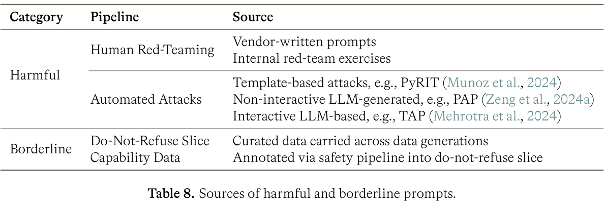
- 有害提示：政策不允许提供部分或全部帮助的请求。回答策略是完全拒绝或部分拒绝，即拒绝不安全的部分，同时提供安全替代方案。
- 边界提示：涉及敏感领域、但仍可在政策范围内回答的请求。回答策略为不拒绝：提供有边界且有帮助的答案，而非含糊回避或拒绝。
数据来源。表 8 总结了每类提示的来源。有害提示同时通过人工红队测试和自动化对抗生成收集。边界提示来自跨数据世代延续的既有“不拒绝”数据子集，以及经过安全标注流水线、被选入“不拒绝”子集的能力数据，使模型接触那些靠近政策边界、但仍应回答的请求。
奖励设计。安全裁判沿三个维度为每个模型回答评分：
- 政策合规性衡量回答是否违反我们的安全政策。
- 回答参与程度将回答的参与程度与预期目标（拒绝、部分拒绝或不拒绝）比较，同时惩罚过度拒绝和对严重请求的服从。
- 回答风格衡量回答是否遵循预期语气和指导原则，例如，对于敏感的自伤请求，应认可用户面临的困难，但不进行说教，也不向用户复述创伤性事件。
裁判分数与奖励模型的奖励信号相结合，并根据数据来源加入额外的 AI 裁判信号。简单加权平均并不充分：对于违反政策的回答，标量奖励仍可能为正。9因此，我们采用安全性门控聚合器：按照第 3.4.1 节所述，由政策合规性字段对奖励实施门控。如果安全裁判将回答标记为不合规，该 rollout 无论其他得分如何，都会获得最低奖励；否则，使用正常的加权混合。
3.4.4 诚实性
我们将诚实性定义为模型知道答案时能给出正确回答、不知道时能恰当地表达不确定性的能力。同时，模型不应过度保留，因为仅仅最小化事实错误，可能只会推动模型作出更少的陈述（Min et al., 2023）。因此，目标必须平衡事实准确性与信息量。
9 在配对 rollout 审核中，预期安全性 Likert 得分与政策合规性字段仅有中等程度的一致性（Pearson 0.293，Spearman 0.344），且 87.8% 的违反政策回答获得了 \(\geq3\) 的奖励模型分数。
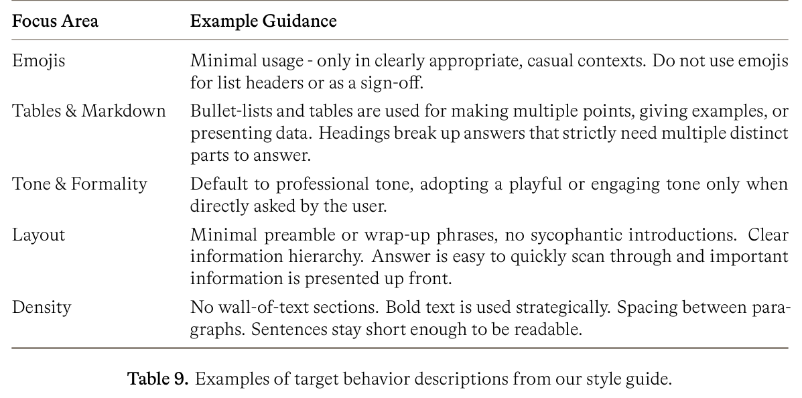
数据。我们汇集了多样化的数据，包括供应商人工整理的数据、经过个人身份信息（PII）过滤的消费者 Copilot 日志10，以及合成生成的数据。受先前研究（Zhang et al., 2024; Wei et al., 2024b,c）启发，我们的数据覆盖一系列难度：（a）已确立的事实性查询，包括短回答和长回答，其回答能够依据参考答案精确验证；（b）有挑战性的事实性查询，面向长尾或冷僻主题，预期模型对这些主题的覆盖不稳定，参考标签通过搜索增强验证生成；（c）错误前提查询，即问题包含不正确的预设，因而不存在正确的肯定回答。覆盖这些边界情形，会推动模型保持事实完整性，并仅在缺乏知识时表达不确定性。
奖励设计。对于事实性评分，我们使用检索增强生成和验证，为每个 RL 示例离线生成参考标签。随后，LLM 裁判沿事实性与置信度两个维度为每个模型回答评分，归入五类之一：CONFIDENT_CORRECT、UNCONFIDENT_CORRECT、NOT_ATTEMPTED、UNCONFIDENT_INCORRECT 和 CONFIDENT_INCORRECT。这些类别通过加权求和组合成标量奖励：自信且正确的回答获得最高奖励，自信的幻觉受到最严厉惩罚，放弃作答获得中性奖励，而不自信但正确的回答获得较低奖励，以抑制过度保留。
3.4.5 风格
我们制定了风格指南，明确良好输出的样貌：温暖而不谄媚、结构便于浏览、语气与上下文相称，而非简单模仿用户。风格指南还涵盖何时以及如何使用 emoji、正式程度、数学与代码记法，以及总体文字密度。表 9 给出了我们训练模型遵循的指导原则的概括性示例。
数据。我们在广泛的数据集上对风格评分，包括经过 PII 过滤的 Microsoft 消费者 Copilot 日志、供应商编写的上下文（静态和交互式），以及 Arena 对话。这些数据覆盖低到中等难度的提示，排除了复杂指令遵循、编程、数学和 STEM。提示按用户意图分类，例如创意写作、实用指导、信息获取和闲聊，并主动收集模型薄弱领域的数据。
10 消费者 Copilot 日志数据仅从未选择退出将其数据用于模型训练的用户处收集，并排除 Microsoft Copilot 隐私常见问题解答 | Microsoft 支持 所规定的某些用户。
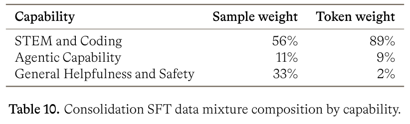
奖励设计。除了第 3.4.1 节介绍的奖励模型，我们还使用提示式 LLM 裁判，沿特定维度为输出评分，并惩罚不良行为。这些提示式裁判采用整数 0、1 或 2 评分，分别表示存在严重、轻微或没有风格问题。我们发现，粗粒度评分器优于更细粒度的评分器或提示专用评分标准，因为它们为 LLM 裁判提供了更大的灵活性，使其能够针对给定提示和回答恰当地解读评分标准，也让模型更难利用评分器的漏洞。只有在满足可验证奖励与安全约束后，才应用风格评分器，并根据领域，将其与其他评分器加权组合。
3.5 将各种能力整合到单一模型
前面几节描述了三个教师模型，分别独立训练于 STEM 与竞赛编程（第 3.2 节）、agent 能力（第 3.3 节），以及有用性与安全性（第 3.4 节）。我们分两个阶段将它们整合为单一模型，如图 12 所示。SFT 阶段复用第 3.1.4 节的自蒸馏流水线，并将其应用于各个专门化教师，不过三个教师需要不同的过滤和拒绝采样策略。对于 STEM 和 agent 教师，我们遵循第 3.1.4 节关于多样性的发现，从每次爬坡的多个 checkpoint 采样 rollout，并优先选择较晚的 checkpoint。我们为每个上下文保留多个正确 rollout，仅进行轻量过滤，以去除退化 CoT。对于有用性与安全性教师，除了正确性之外，我们还使用 LLM 裁判和启发式过滤器，从风格、结构和已知缺陷等方面为轨迹评分。
整合 SFT。SFT 阶段将三个教师蒸馏到单一模型中。我们迭代调整数据混合与超参数，以平衡推理、agent 和总体有用性能力，并通过公开基准、内部基准和人工评估进行衡量。表 10 按样本权重和 token 权重报告了最终混合配比。我们发现，按样本权重平衡混合十分重要；由于 STEM 与编程的轨迹更长，相应的 token 分布由它们主导，但在实践中，这不会损害有用性与安全性能力。与标准自蒸馏方案不同，整合 SFT 进行 4 个 epoch，并将学习率从最大值 \(1\cdot10^{-5}\) 衰减至其一半。
整合 RL。最后的轻量 RL 阶段进一步改善安全性、过度拒绝和风格。训练方案基于有用性与安全性爬坡（第 3.4 节），并作出少量修改以保持推理表现。我们以 128k token 的最大序列长度训练，并在 RL 混合中保留小部分 STEM 和编程数据；我们发现两者都很重要，否则复杂任务上的推理表现会在爬坡过程中缓慢退化。
3.6 强化学习基础设施
我们的 RL 爬坡依赖 Rocket，这是内部开发的大规模异步分布式强化学习框架，使用 YOLO 作为学习器（第 2.8 节），使用 SGLang（Zheng et al., 2024）进行模型推理。我们构建 Rocket，是因为现有开源 RL 框架（von Werra et al., 2020; Hu et al., 2024; Sheng et al., 2024）无法满足我们的需求，即在 MAI-Thinking-1 所需规模下，支持跨数千个 GPU 的异步 RL。Rocket 的核心 RL 数据流围绕
本句接下一页。
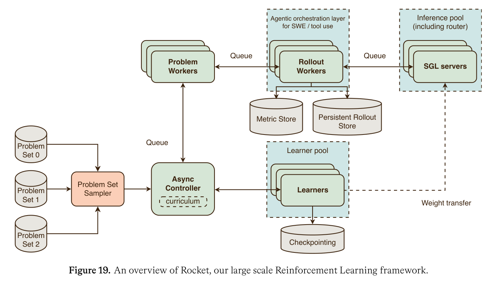
（接上页）单一控制器、一组问题 worker 与 rollout worker，以及生成模型输出的路由器和推理服务器组织。控制器、问题 worker 和 rollout worker 均各自实现为单个 Python 进程 / Ray actor，而路由和推理由基于 SGLang 的服务栈提供。图 19 展示了 Rocket 架构概览。
3.6.1 控制器
控制器加载 RL 任务，并将任务发送给问题 worker 处理。对于每个任务，控制器接收一组已完成的 rollout，以及关联的评分元数据，例如通过/失败判定、奖励、归一化优势等。已完成的 rollout 经控制器过滤后，作为 batch 发送给学习器。控制器抽象使 Rocket 能在用于 on-policy 和 off-policy RL 的不同控制器实现之间切换。实践中，我们在大规模运行中主要使用 off-policy RL，将 on-policy RL 留给较小规模的实验和调试。
3.6.2 问题 worker
问题 worker 从控制器收到 RL 任务后，生成一组 rollout，为每个 rollout 计算归一化优势，并将结果返回控制器。问题 worker 自身不负责生成 rollout，而是向 rollout worker 发送一组请求，每个请求对应一个 rollout。问题 worker 为大规模异步 RL 实现容错，例如在 rollout worker 失败时，重新尝试某个任务的 rollout。
单个请求在问题 worker 中的典型流程为：
- 提前退出 rollout。遵循第 3.1.3 节所述的提前退出策略，问题 worker 从控制器收到 RL 任务后，向 rollout worker 发出 16 个请求，并按需重试失败请求。每个 rollout 都接受评分，这些信息汇总为任务的总体通过率。如果总体通过率位于预定区间内，问题 worker 就进入完整 rollout 阶段；否则，终止该 RL 任务。
- 完整 rollout。问题 worker 继续向 rollout worker 发出 128 个请求，同样按需重试失败请求。每个 rollout 都接受评分，这些信息汇总为任务的总体通过率。如果总体通过率位于预定区间内，问题 worker 就进入后处理；否则，终止该 RL 任务。
- 后处理。问题 worker 为每个 rollout 计算归一化优势，供 RL 目标函数使用（第 3.1.1 节）。根据具体问题，这一步可能包括对长 rollout 应用长度惩罚、进行 GRPO 奖励归一化，或采用其他启发式方法。
3.6.3 Rollout worker
rollout worker 收到问题 worker 的请求后，生成单个 rollout，可选地对其评分，然后将结果返回调用方。在典型流程中，rollout worker 首先生成初始模型提示，并发送给模型推理服务器。回答返回后，rollout worker 对其解析、执行工具调用，并将结果纳入发给推理服务器的后续请求。这一过程持续进行，直到模型停止调用工具并输出最终答案，或超出预定的步数或 rollout 耗时上限。
rollout 完成后，下一步是对模型输出评分。评分器输出包含数值奖励，以及可选的通过/失败判定。根据问题不同，评分既可以在 rollout worker 上进行，也可以在问题 worker 上进行。如果每个 rollout 能够单独评估，就由 rollout worker 评分。例如，对于数学问题，如果模型输出与标准答案在数学上等价，评分器可能输出 (1, pass)，否则输出 (0, fail)。
另一方面，某些评分器需要同时考察多个 rollout 的答案，例如让 LLM 对不同模型答案进行两两比较。在这种情况下，由问题 worker 评分。单个问题可以有多个评分，此时，用户定义的策略将各项评分聚合为单个总体奖励。
3.6.4 路由器与推理
推理是系统最重要的组件之一：根据作业规模和特征，推理 GPU 与学习器 GPU 的比例最高可达 5:1。我们规模最大的 RL 作业使用 4864 个 GB300 芯片，其中 4096 个专用于推理，其余 768 个用于学习器。因此，推理性能和系统稳定性是首要问题。控制学习器与推理引擎之间的数值差异，对 RL 训练稳定性至关重要。
推理设置。我们的 RL 推理栈基于 SGLang 和 SGLang 路由器构建（Zheng et al., 2024）。选择 SGLang，是因为它满足我们对丰富 RL 服务功能、基于开源模型快速实验以及活跃生态发展的需求。在各个 SGLang worker 之上，我们使用 SGLang 路由器处理负载均衡、流量控制和前缀缓存。
推理性能。由于作业的大部分 GPU 使用来自推理，优化推理吞吐量对于高效 RL 至关重要。最小化请求延迟，对控制陈旧程度同样重要。我们根据 rollout 是单轮还是多轮，实施专门优化。对于单轮工作负载，提示通常很短，但生成内容（包括思考）可达 128k token，因此主要瓶颈是 KV cache 内存。我们通过专家并行和用于 attention 的数据并行，减少 KV cache 与权重的内存占用。我们还禁用前缀缓存，使长生成过程中滑动窗口 attention 的 token 能被完全驱逐（我们的模型架构大量依赖滑动窗口 attention）。我们进一步通过 MLP 层的数据并行、DeepEP（DeepEveryParallel）（Zhao et al., 2025a）和 EPLB（Expert Parallelism Load Balancer）（DeepSeek-AI, 2025），降低通信开销。对于
本句接下一页。
（接上页）多轮工作负载，提示可能增长到很长，而生成内容往往很短，因此这些负载主要受 prefill 主导。在这种情况下，我们大量依赖前缀缓存：生产 RL 运行中的前缀缓存命中率达到 97–98%。
推理系统稳定性。在训练 MAI-Thinking-1 所用的 RL 规模下，数千个推理芯片中的单个副本经常会崩溃、挂起、变慢，或因节点故障失效；发生这些情况时，推理层必须平稳降级并重启，而不是让整个作业失败。我们在三个层面实施纵深防御。在副本层，每个 SGLang 服务器运行自监控看门狗，探测自身生成端点并监控调度器内存；不健康的副本会触发自身平稳重启，使编排器能启动干净的替代实例。在路由器层，SGLang 路由器充当熔断器：后端副本不健康时，它停止接纳新请求，在重新开放前执行多阶段探测，并定期重新发现那些悄然退出活跃集合的副本。逐副本流量控制可防止慢副本积压请求、拖累整个资源池。在作业层，活性监控器跟踪每类存活 actor 的数量，包括推理副本、路由器、rollout worker 和学习器 rank；若任一类别低于允许阈值，则让作业失败以进行干净重启。另一个独立的训练步进展看门狗负责捕捉更棘手的情况：所有组件看似存活，但训练已停止推进。最后，当 rollout worker 发给推理服务器的请求中途失败时，会在另一副本上重试，因此单个副本故障会降低资源池吞吐量，但不会丢失 rollout。
推理与学习器之间的数值差异。RL 的关键问题之一，是推理引擎与学习器之间的数值差异。YOLO（学习器）与 SGLang（推理引擎）使用不同的 kernel、调度和并行策略。即使每个 token 的 logprob 差异很小，也会在长 rollout 中累积，破坏 off-policy RL 中重要性采样校正的稳定性。为缓解这些问题，我们在 RL 运行中对学习器和推理引擎均使用 bf16；与所评估的低精度替代方案相比，这显著缩小了数值差异，使训练更加稳定。在 bf16 的基础上，我们还应用 MoE 路由重放（Ma et al., 2025）和 top-p 掩码重放（第 3.1.3 节）。
3.6.5 权重传输
从同步 RL 转向异步 RL，使权重传输变成一个反复发生的分布式同步问题：学习器的新权重必须每隔 \(k\) 步到达推理集群，而传输耗时会导致推理空闲，并增加陈旧程度。核心困难在于，学习器与推理资源分配对同一张量采用不同的分片方式：双方可能使用不同的 FSDP、流水线并行、数据并行 attention 组合或并行度，以及不同的张量布局，同时参数的精度、量化状态或矩阵布局也可能不同。因此，每次传输既必须重新分片字节，也必须执行逐张量转换。
传输计划。我们将重新分片、数据移动和逐张量转换编译为单一传输计划，在作业启动时计算一次，此后重复使用。对于每个参数，规划器计算学习器与推理服务器分片布局的交集，并为每个非空子分片重叠区域生成一个条目，记录源 rank、目标 rank、字节范围，以及 dtype 转换或布局置换等必要操作。重新分片隐含在这一交集中；每个学习器 rank 仅发送与之配对的推理 rank 所需的切片，无需单独物化完整张量。转换在成本较低的一侧执行，运行时将打包、传输和解包流水线化，使连续子分片在时间上重叠。为使规划与集群规模解耦，计划针对一个学习器与一个推理服务器的理想化拓扑；运行时，每个源–目标配对展开为覆盖目标 rank 全部存活副本的传输组，因此副本加入、离开或被替换时，计划仍然有效。由于数据并行复制参数而非对参数分片，一个 DP 组就已持有
本句接下一页。
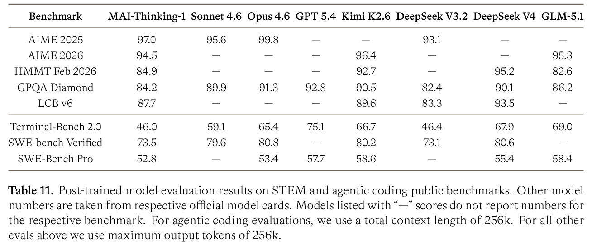
（接上页）每一个模型参数，因此计划无需动用全部 \(D\) 个学习器 rank。我们将其限制在部分 DP 组内，每个组与互不重叠的一部分推理副本配对，并独立运行。将一个 36 服务器集群分为四组后，可以并行进行四个各包含 9 台服务器的传输，从而提高吞吐量，同时限制故障影响范围。
4 评估
4.1 基准评估
我们在公开基准和人类并排评估中，将 MAI-Thinking-1 的表现与多种开放权重和封闭权重前沿模型比较。这些评估覆盖广泛领域，突出模型跨领域的通用性：STEM、agent 编程、知识、指令遵循、长上下文、安全、健康、诚实性和工具调用。除非另有说明，MAI-Thinking-1 的全部基准结果均为 4 次运行的平均值，采用统一的推理设置，温度 \(T=1\)，并使用 \(p=0.97\) 的 top-p 采样。
表 11 报告了 STEM 和 agent 编程基准的结果。其他模型的数据来自其官方模型卡和发布公告。综合来看，MAI-Thinking-1 的表现处于其他流行 LLM 的有竞争力区间：它没有领跑整个领域，但在广泛基准类别中持续表现强劲。值得一提的是，MAI-Thinking-1 在 AIME 2025 上超过 Claude Sonnet 4.6，在 SWE-Bench Pro 上接近 Claude Opus 4.6。
此外，我们所有 SWE agent 训练数据仅使用 bash 和字符串替换工具，不包括针对性的终端交互环境。因此，模型当前的 Terminal-Bench 表现反映了从更广泛 agent 训练中获得的泛化能力，而非针对类似 Terminal-Bench 环境进行直接训练的结果。
数学、科学与竞赛编程。对于数学，我们在 2025 年和 2026 年的 AIME，以及 MathArena（Dekoninck et al., 2026）提供的 2026 年 2 月 HMMT 基准上评估 MAI-Thinking-1。对于科学，我们使用研究生级别、无法通过 Google 轻易解答的问答基准（Graduate-Level Google-Proof Q&A，GPQA）（Rein et al., 2023）进行评估，其中包含知识密集型的研究生和研究级问题，主要来自 STEM 领域。对于竞赛编程，我们在包含最新竞赛编程问题的 LiveCodeBench v6（LCB v6）（Jain et al., 2024）上评估。更多评估细节见附录 H。
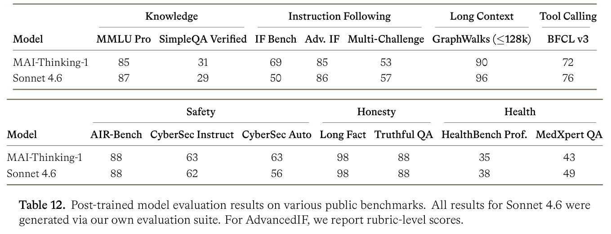
Agent 编程与工具调用。对于 agent 编程，我们在 SWE-bench Verified（Chowdhury et al., 2024）、SWE-Bench Pro（Deng et al., 2025）和 Terminal-Bench 2.0（Merrill et al., 2026）上评估 MAI-Thinking-1。对于工具调用，我们在 BFCL v3（Patil et al., 2025）上评估。与 STEM 评估不同，这些评估是多轮的，要求模型与环境交互。对于全部三个基准，我们使用一个非常简单的 ReAct 风格（Yao et al., 2023）循环评估模型，始终向图 18 所示的 agent 循环追加内容。对于 SWE-bench Verified 和 SWE-Bench Pro，我们同时启用 bash 与字符串替换工具。对于 Terminal-Bench 2.0，我们只启用 bash 工具，以模拟最基本的终端接口。为消除推理速度和基础设施的混杂影响（Segato, 2026），我们忽略 Terminal-Bench 2.0 的预定义超时。更多评估设置细节见附录 I。
通用能力。表 12 报告了覆盖知识、指令遵循、长上下文、安全、诚实性、健康和工具调用的基准结果。对于这些领域的基准，我们发现并非所有实验室都会在模型卡或模型公告中报告官方结果。为提供比较 MAI-Thinking-1 的基线，我们以最大推理投入和最大序列长度，在这些基准上评估 Sonnet 4.6，并同样在表 12 报告结果。在大多数基准上，我们发现模型与 Sonnet 4.6 相当。
具体而言，我们报告了用于知识与推理能力的 SimpleQA Verified（Haas et al., 2026）和 MMLU-Pro（Wang et al., 2024b）；用于指令遵循的 IFBench（Pyatkin et al., 2026）、AdvancedIF（He et al., 2025）和 MultiChallenge（Deshpande et al., 2025）；用于长上下文能力的 GraphWalks；用于安全性的 AIR-Bench（Zeng et al., 2024b）和 CyberSecEval 4（Wan et al., 2024; Meta, 2024）；用于诚实性的 TruthfulQA（Lin et al., 2022）和 LongFact（Wei et al., 2024c）；以及用于健康知识任务的 HealthBench（Arora et al., 2025）和 MedXpertQA（Zuo et al., 2025）。各项评估设置的说明见附录 K。
4.2 人类并排评估
上文中以能力为重点的公开基准关注狭窄且客观定义的质量标准。作为补充，我们针对广泛的真实任务开展了人工评估。这些评估从整体上并排比较两个模型，重点考察总体有用性。并排评估有助于发现单独审查回答时不易察觉的质量差异。
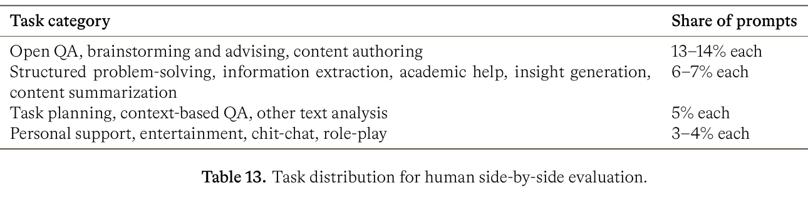
评估任务选择。评估任务来自互补来源，以确保全面覆盖真实用户需求，并具备较强的模型比较区分能力。最终集合包含 1276 个任务，全部为英文，其中 30% 是多轮任务。任务分布详见表 13。
第一类任务来源是专家编写的提示，遵循结构化分类体系，覆盖不同复杂程度的现实用例，包括单轮和多轮对话。第二类来源是 Microsoft 消费者 Copilot 产品日志，经过仔细过滤，排除了包含个人身份信息（PII）的提示、不完整或缺乏必要对话上下文的提示、对抗性提示，以及需要自定义配置（如编程环境、图像生成能力或外部工具访问）的提示。我们使用分层采样，确保用例覆盖，并在具体程度和约束多样性等维度上平衡难度。
评分员队伍与评估流程。为开展这些模型评估，我们与知名数据标注供应商 Surge AI 管理的评估员合作。这些评估员的母语为英语，具有多种通才和专业背景。评估员经过多阶段资格筛选，以考察他们评估 LLM 核心能力与失效模式的能力，包括事实核查、阅读理解和指令遵循。培训材料包含评分说明和常见失效模式示例。
对于每个提示，评分员首先仔细、分别地从多个维度评估 MAI 与其他模型的回答：指令遵循（显式与隐式）、事实性（使用搜索引擎辅助事实核查）、简洁性与相关性、完整性，以及风格与语气。对于每个维度，评分员判断回答存在无问题、轻微问题还是严重问题。最后，评分员在 7 点 Likert 量表上给出两个回答的总体偏好，范围从“差得多”（-1.5）到“好得多”（1.5）。我们观察到评分员队伍具有较强的标注员间一致性，验证了评分在可接受的噪声阈值内具有一致性和可复现性。
结果。表 14 给出了人工评估结果：总体两两偏好采用 \([-1.5,1.5]\) 量表，各个质量维度的差值采用 \([-1,1]\) 量表。总体而言，评分员更偏好 MAI-Thinking-1 而非 Sonnet 4.6，但更偏好 Opus 4.6 而非 MAI-Thinking-1。对比 Sonnet 4.6，MAI-Thinking-1 在 49% 的比较中胜出、6% 中持平、45% 中落败。对比 Opus 4.6，MAI-Thinking-1 在 43% 中胜出、5% 中持平、52% 中落败。在具体维度上，评分员认为 MAI-Thinking-1 在简洁性与相关性、风格与语气方面优于 Sonnet 4.6，在指令遵循、事实性和完整性方面大致相当（差异处于噪声范围内）。
4.3 内部安全评估
安全性与过度拒绝。我们构建了一个内部基准，用于衡量模型对那些被认定为低风险、应当回答的请求的过度拒绝情况。随后，拒绝判定裁判根据规定策略为每个回答评分，标记拒绝、含糊回避或无根据的部分拒绝。过度拒绝率是
本句接下一页。
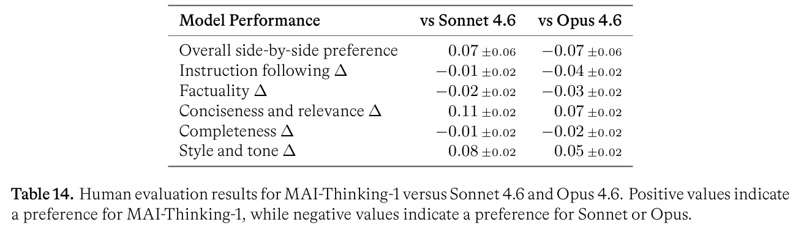
（接上页）回答未能服从请求的提示所占比例，而有用性以 1 减去该比例报告。结合高敏感性条目上的安全通过率（在 1–5 点 Likert 量表上，裁判安全评分 \(>3\)），这揭示了理想的模型行为：对较高风险的有害请求更加安全，对较低风险的无害请求更有帮助。评估方法与数据集构建的详细说明见附录 J。
图 20 绘制了 MAI-Thinking-1 与 Sonnet 4.6 的安全性–有用性平衡。在八个类别中的五个类别里，MAI-Thinking-1 位于 Sonnet 4.6 的上方和/或右方，表明表现较好；改善最大的领域为化学、生物、放射性与核（CBRN）、自伤，以及选举与政治。
越狱。我们从供应商、内部红队测试，以及包括 HarmBench（Mazeika et al., 2024）和 StrongREJECT（Souly et al., 2024）在内的开源基准中，收集了 2.5K 个不同种子场景，构建内部越狱评估套件。我们对收集的提示进行增强，最终得到约 9.5K 个越狱提示。按变换程度和攻击者自适应程度，将它们分为三个组：基础技术、组合技术和自适应技术（定义见图 21）。基础技术是单步变换，通过越狱包装或提示模板等简单修改，保留有害意图。组合技术结合多种变换或结构化重写，包括 PyRIT（Munoz et al., 2024）等基于模板的攻击、PAP 风格变换（Zeng et al., 2024a），以及非英语或混合语言变体。自适应技术引入交互、搜索或多轮结构，包括 TAP（Mehrotra et al., 2024）和多轮攻击（Russinovich et al., 2024）。
图 21 报告了这三个组的攻击成功率（ASR）；数值越低，安全性越强。在这些提示变换类型上，MAI-Thinking-1 实现了较低的 ASR，与 Sonnet 4.6 和 Opus 4.6 相当。
5 安全红队测试
为评估自动化基准之外的安全属性，我们与模型开发周期并行开展红队测试。目标是发现自动评估无法可靠检测的对抗性漏洞、新型攻击途径，以及危害类别中的覆盖缺口，并持续将发现反馈到训练数据收集和政策细化中。
5.1 内部红队测试
方法。内部红队测试由 MAI 红队人员（安全研究人员与招募的外部标注员）开展，并贯穿开发周期，对不同模型版本进行测试。
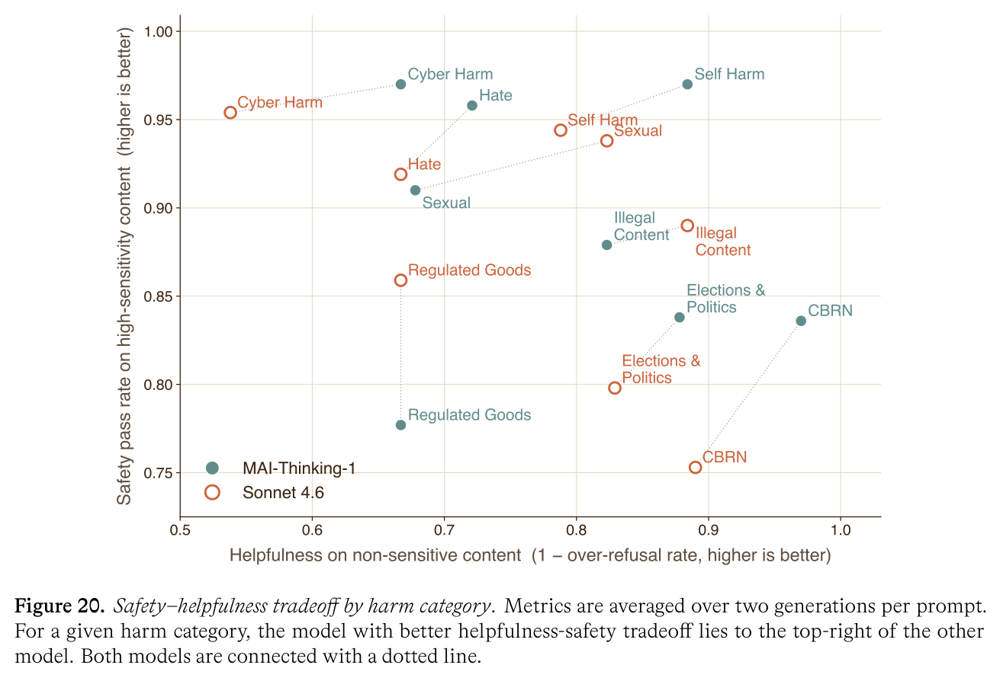
在 MAI-Thinking-1 开发早期、中期和后期的十五次测试活动中，红队人员围绕 25 个政策类别，执行了超过 2,170 个基于目标的对抗性场景。每个场景进行 5–10 轮对话，以便在首轮拒绝之后继续升级攻击。随着后续模型版本能力增强，我们扩大了评估范围并提高难度。
我们根据标注员的对抗性提示能力进行筛选，并向他们开放内部模型部署的访问权限。他们收到一个预先填好的、基于目标的场景跟踪表，每个场景都附有支持性上下文和目标政策类别，并被要求通过多轮对话诱发政策违规。违规记录包含结果、严重程度、首次违规轮次、最严重违规的文本及其他元数据。该计划具有若干范围限制：测试主要使用英语，非英语输入仅在少数情况下用作越狱途径，而未接受系统评估；agent 工具使用和多模态输入也不在范围内。
发现与缓解措施。该计划的核心产出，是一个在不同红队人员和模型 checkpoint 中独立反复出现的攻击模式分类体系。我们将其视为证据，表明持久的对抗面是模式本身，而非个别提示。六种模式占主导：以无害借口逐轮升级；虚构或小说式叙事；具有资质的人物身份借口；渐进递归或格式漂移（反复要求扩展、重排格式，或将此前带有保留措辞的回答转化为可操作内容）；绕过上下文中的年龄指示；以及伪造权威文档。在不同类别中，红队成功案例的大多数都由同样的模式驱动，如今这一分类体系已成为后续周期中提示收集和裁判评分标准开发的覆盖清单。
这些发现持续反馈到训练中。一个显著反复出现的模式，是通过虚构叙事绕过防护，诱出自伤内容，其中包括多语言变体。基于该模式，我们整理了一个数据集，并将其扩展到安全评估中，同时用于对抗提示收集的种子扩增，纳入
本句接下一页。
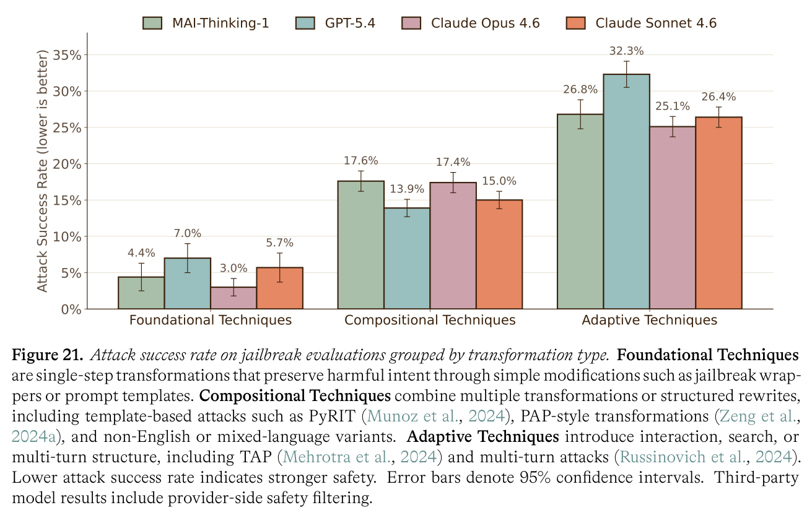
（接上页）SFT 和 RL 的安全数据混合。
在红队测试确定的最高优先级修复类别中，从缓解前到最终候选模型，总体攻击成功率下降约 22%。我们使越狱成功率下降约 44%，仇恨与公平性问题下降约 43%，儿童安全问题下降约 30%，心理健康攻击下降约 20%。
5.2 独立红队测试
Microsoft 的 AI Red Team（AIRT）与第三方供应商独立开展了额外红队测试。这些活动聚焦于静态评估最薄弱的风险领域：自动化对抗攻击方法、代码与网络滥用安全、心理社会和心理健康危害，以及多语言覆盖。结构化的危险能力 / 能力提升评估（Phuong et al., 2024; Li et al., 2024b）不在本次发布的范围内。
自适应剪枝攻击树（Tree of Attacks with Pruning，TAP）攻击（Mehrotra et al., 2024）暴露出一个稳健性缺口。为此，我们构建了有针对性的对抗数据流水线：先广泛生成真实的有害场景，再通过多样化攻击变换模板扩展，随后使用 TAP 风格的自适应细化，针对当前模型优化生成的提示，直至能稳定地产生模型特有的失效。这一闭环过程将外部红队发现转化为针对性修复数据，大幅降低了模型对 TAP 越狱的易感性，使其在相同攻击途径上的表现与最先进模型相当。
低资源语言包装（Deng et al., 2024）被识别为另一个漏洞。在英语中能被可靠拒绝的内容，换用约鲁巴语、泰卢固语、阿姆哈拉语、缅甸语、高棉语和马来语后可以诱出。我们通过向安全训练数据混合中加入多语言对抗种子，并将高效的英语攻击模式翻译、重新定向到受影响语言来应对。在目标语言上，这弥合了英语与非英语差距的很大一部分，不过低资源语言长尾中的多语言稳健性仍是持续投入的领域。
6 集群环境
MAI-Thinking-1 需要一种集群环境：它必须具有足够的可组合性，以支持数据、模型、训练、评估和服务组件的快速迭代；具有足够的可扩展性，以在前沿规模测试改进；还要足够可靠，使人们能够专注于可测量的模型质量收益，而非基础设施噪声。
因此，我们将集群环境视为模型开发的积极组成部分。在训练中，目标是在保持数值正确性、确定性恢复、高 MFU 和高 goodput 的同时，最大化每个实际日的有效 FLOPs。在推理期间，目标是在保持质量、长上下文正确性、可预测延迟和部署效率的同时，最大化每秒及每瓦的有效 token 数。两种情形适用相同的系统原则：拓扑重要，内存移动重要，静默的正确性失效不可接受；只有当总体吞吐量转化为可靠的模型进展或可靠的服务能力时，它才有价值。
本节描述该环境的三个部分。第 6.1 节介绍训练集群如何将原始加速器算力转化为稳定的实验基础。第 6.2 节介绍用于衡量分配的 GPU 是否产生有效学习进展的稳定性、确定性和 goodput 指标。第 6.3 节简要介绍在 Microsoft MAIA-200 硬件（Microsoft, 2026）上运行 MAI-Thinking-1 的推理结果。
6.1 训练集群
集群被作为一个系统级优化问题来设计。所需算力范围由 scaling law 估计、数据质量目标、token 预算和实测训练效率推导。基础设施规划随后将这一范围转化为可用 FLOPs，覆盖数据中心供电与冷却、GPU、CPU、纵向扩展的 NVLink 域、横向扩展的 InfiniBand 网络、存储、系统软件、诊断、调度、checkpoint 和可观测性。
规划目标不仅仅是理论峰值 FLOPs。长时间训练作业会因 MFU 损失、checkpoint 开销、重计算、硬件损耗、维护、验证工作负载及恢复预留而损失有效容量。因此，我们优化的是可用训练容量：已交付硬件中能够被调度、保持健康、以高 MFU 运行，并在故障后快速恢复的比例。
MAI-Base-1 在包含 8K 个 GB200 GPU 的单一逻辑集群上训练，MAI-Thinking-1 的 RL 爬坡则使用 4.6K 个 GB300。运行采用同一代加速器，位于已知健康的机架范围内，具有稳定的调度器行为，并靠近可预测的存储路径，从而减少实验方差。更广泛的实验室环境还包含 H100、GB200 和 GB300 系统，用于开发、验证、比较性能剖析和下一代系统启动，但主训练运行优先考虑局部性、拓扑稳定性和运行环境的同质性。
集群环境的更多细节见附录 L。
6.2 训练稳定性、确定性与 goodput 指标
训练稳定性由集群持续有效推进训练步、从故障快速恢复，以及在重启路径中保持数值正确性的能力来衡量。我们同时跟踪可见故障和静默效率损失。可见故障包括反复崩溃重启、节点故障、InfiniBand 与 NVLink 链路抖动和断链、内存不足错误、pod 终止、checkpoint 停滞，以及人工重新排队。静默效率损失包括 MFU 下降、重计算、漫长的启动路径、缓慢的 actor 调度、checkpoint 引起的停顿、内存行为退化，以及不会立即使作业崩溃、却降低有效吞吐量的网络状况。
确定性被视为首要的基础设施属性。在前沿规模，确定性训练
本句接下一页。
（接上页）不仅是模型代码层面的问题，还依赖整个执行基础的正确性和稳定性。集群必须消除静默数据损坏（Hochschild et al., 2021; Dixit et al., 2021），保持通信拓扑稳定，防止不健康的设备和链路进入作业，并在 checkpoint 和重启边界两侧保持浮点归约与累加的顺序。
Goodput 是首要生产 KPI。我们将 goodput 定义为理想训练时长与实际墙钟时长之比（Jiang et al., 2024; Grattafiori et al., 2024），并将二者差距分解为不同开销类别。这种表述明确了故障成本：一次故障的代价，不仅是直到重启所花的时间，还可能迫使系统重新计算自上次持久保存的 checkpoint 以来的工作，触发启动与 actor 调度延迟，扰乱部署位置，阻塞 checkpoint 进度，或导致恢复后 MFU 降低。同样，即使作业仍在运行，MFU 下降也被视为生产事故，因为集群仍在消耗已分配的 GPU 小时，产生的训练进展却少于预期。
6.2.1 MFU 与 goodput
整体上的改进趋势，是从可靠性走向效率。第一层改进来自减少反复崩溃重启、节点故障、链路抖动、重新排队、内存不足（OOM）错误和 checkpoint 停滞等中断。第二层更困难的改进，则来自消除 MFU 下降、重计算、漫长启动路径、缓慢进程调度、checkpoint 引起的停顿，以及网络或内存行为退化等静默 goodput 损失。在前沿规模，两层都很重要，因为每小时开销都会在数千个 GPU 上累积。运行目标是将 goodput 作为首要生产 KPI：每种失效模式、运行时变慢、checkpoint 事件和 MFU 回退，都有明确的负责人、检测信号、预防路径，以及对可用 FLOPs 影响的量化。
MAI-Base-1 预训练运行虽然比此前的预训练规模更大，仍在 8K 个 GPU 上达到了 90.0% 的 goodput。总开销降至 51 小时。重计算，即回退到 checkpoint 后用于重新生成已计算训练步的时间，降至 6.5 小时，仅占开销的 15%。未推进训练步的时间降至 14 小时，占 27%，表明系统在保持运行、避免重复返工，以及无需漫长人工干预即可恢复方面显著改善。然而，最终运行也明确揭示了下一个瓶颈：MFU 下降开销成为最大的单项剩余类别，达到 18 小时，占开销的 35%。其驱动因素包括 checkpoint、网络退化、内存压力和硬件健康状态变化。故障趋势也有所改善，但并未消失。
6.3 推理效率与模型部署
随着推理模型日益重要，推理成本、延迟和服务可扩展性成为部署的关键制约。因此，我们在模型开发全程将推理效率视为首要目标，在整个技术栈中寻找改进机会，包括模型架构、服务引擎，乃至部署硬件的选择。
为提高每瓦性能，我们在 Microsoft 的 MAIA-200 硬件上实现了 MAI-Thinking-1。与基于 GB200 的部署相比，在相同机架功率预算下，MAIA-200 提供了超过 40% 的 token 生成吞吐量提升。每瓦性能的改善能更高效地利用数据中心电力，并支持大规模服务更多推理工作负载。
6.4 可持续性与社区优先的 AI 基础设施倡议
我们重视 AI 开发在社会、环境，以及基础设施建设和运营所在社区中的可持续性。Microsoft 致力于实现负碳、水资源正效益、零废弃物，并保护生态系统。2025 年，公司在这一进程中达成里程碑，以可再生能源匹配了全球全年用电量的 100%。
MAI-Thinking-1 主要在位于亚利桑那州 Phoenix、由 Microsoft 所有的基础设施上训练，并在得克萨斯州 Dallas 进行后训练。Phoenix 园区按 LEED 金级认证标准建造，以认可其
本句接下一页。
（接上页）在环境可持续性和能源效率方面追求卓越。举例来说，我们这里的备用发电机使用可再生柴油，与传统石油基柴油相比，可降低净碳排放。
Microsoft 的 Community-First AI Infrastructure 计划承诺尽量降低环境影响，并投资其建设和运营设施所在的社区。这一做法建立在与 Phoenix 地区公用事业单位、水务部门和保护组织密切合作的基础上，在降低整个系统总体需求的同时，强化共用基础设施。
Microsoft 已承诺投入超过 5,000 万美元扩充公共水务资产，包括与 Goodyear 市合作建设市政储水设施，同时为供水和污水管道延伸以及惠及社区的更广泛系统升级提供资金。这些投资还与保护工作配套开展：通过与 Gila River Water Storage 系统及 The Nature Conservancy 等伙伴合作，帮助地下水回补，提高流域层面的效率。
与此同时，Microsoft 通过设在 Estrella Mountain Community College 和 Glendale Community College 的 Datacenter Academy 投资长期劳动力发展，确保 Phoenix 的基础设施增长能够转化为社区持久的经济机会。
7 结论与未来方向
我们介绍了自己的爬山机器：这一模型开发方法优化从数据和基础设施到 RL 配方与评测的流水线中的每一个组成部分。MAI-Thinking-1 是这台机器产出的首个模型：一个激活参数 35B、总参数 1T 的 MoE，在未从第三方模型蒸馏的条件下训练而成。在 STEM 推理和软件工程任务上，MAI-Thinking-1 跻身同量级最强模型之列。
MAI-Thinking-1 是起点，而非终点。展望未来，我们计划把爬山过程扩展到更多模态、更大规模，以及更精细的能力。AI 的进步并非任何单一模型的产物；它来自能够可靠改进的流水线。我们将继续完善自己的流水线，并期待分享未来的攀登进展。
参考文献
Amro Abbas, Kushal Tirumala, Dániel Simig, Surya Ganguli, and Ari S. Morcos. SemDedup：通过语义去重实现网络规模的数据高效学习, 2023. URL https://arxiv.org/abs/2303.09540.
Joshua Achiam, David Held, Aviv Tamar, and Pieter Abbeel. 约束策略优化. In International Conference on Machine Learning, volume 70, pages 22–31. PMLR, 2017.
Lakshya A Agrawal, Shangyin Tan, Dilara Soylu, Noah Ziems, Rishi Khare, Krista Opsahl-Ong, Arnav Singhvi, Herumb Shandilya, Michael J Ryan, Meng Jiang, Christopher Potts, Koushik Sen, Alex Dimakis, Ion Stoica, Dan Klein, Matei Zaharia, and Omar Khattab. GEPA：反思式提示演化能够超越强化学习. In ICLR, 2026. URL https://openreview.net/forum?id=RQm2KQTM5r.
Joshua Ainslie, James Lee-Thorp, Michiel de Jong, Yury Zemlyanskiy, Federico Lebrón, and Sumit Sanghai. GQA：从多头 checkpoint 训练广义 multi-query transformer 模型, 2023. URL https://arxiv.org/abs/2305.13245.
Chenxin An, Zhihui Xie, Xiaonan Li, Lei Li, Jun Zhang, Shansan Gong, Ming Zhong, Jingjing Xu, Xipeng（下页续）
Qiu, Mingxuan Wang, and Lingpeng Kong. Polaris：面向高级推理模型、扩展强化学习的后训练配方, 2025. URL https://hkunlp.github.io/blog/2025/Polaris.
L.W. Anderson and D.R. Krathwohl. 学习、教学与评价的分类学：对 Bloom 教育目标分类学的修订. Longman, 2001.
Anthropic. 以 Claude 3.5 Sonnet 提升 SWE-bench Verified 的水平. https://www.anthropic.com/engineering/swe-bench-sonnet, January 2025.
Rahul K Arora, Jason Wei, Rebecca Soskin Hicks, Preston Bowman, Joaquin Quiñonero-Candela, Foivos Tsimpourlas, Michael Sharman, Meghan Shah, Andrea Vallone, Alex Beutel, et al. HealthBench：评估大语言模型，促进人类健康改善. arXiv preprint arXiv:2505.08775, 2025.
Anthony C. Atkinson, Alexander N. Donev, and Randall D. Tobias. 使用 SAS 的最优实验设计. Oxford University Press, 2007. ISBN 978-0-19-929659-0.
Jacob Austin, Augustus Odena, Maxwell Nye, Maarten Bosma, Henryk Michalewski, David Dohan, Ellen Jiang, Carrie Cai, Michael Terry, Quoc Le, et al. 使用大语言模型进行程序合成. arXiv preprint arXiv:2108.07732, 2021.
Ibragim Badertdinov, Alexander Golubev, Maksim Nekrashevich, Anton Shevtsov, Simon Karasik, Andrei Andriushchenko, Maria Trofimova, Daria Litvintseva, and Boris Yangel. SWE-rebench：面向软件工程 agent 的任务收集与去污染评测自动化流水线. Advances in Neural Information Processing Systems, 38, 2026a.
Ibragim Badertdinov, Maksim Nekrashevich, Anton Shevtsov, and Alexander Golubev. SWE-rebench v2：大规模、语言无关的软件工程任务收集. arXiv preprint arXiv:2602.23866, 2026b.
Yushi Bai, Shangqing Tu, Jiajie Zhang, Hao Peng, Xiaozhi Wang, Xin Lv, Shulin Cao, Jiazheng Xu, Lei Hou, Yuxiao Dong, Jie Tang, and Juanzi Li. LongBench v2：面向真实长上下文多任务的更深入理解与推理. arXiv preprint arXiv:2412.15204, 2024.
Bowen Baker, Joost Huizinga, Leo Gao, Zehao Dou, Melody Y Guan, Aleksander Madry, Wojciech Zaremba, Jakub Pachocki, and David Farhi. 监测推理模型的不当行为及助长混淆行为的风险. arXiv preprint arXiv:2503.11926, 2025.
Adrien Barbaresi. Trafilatura：用于文本发现和提取的网页抓取库与命令行工具. In Proceedings of the ACL-IJCNLP 2021 System Demonstrations, pages 122–131, 2021. doi: 10.18653/v1/2021.acl-demo.15.
Iz Beltagy, Matthew E. Peters, and Arman Cohan. Longformer：长文档 transformer, 2020.
James Bradbury, Roy Frostig, Peter Hawkins, Matthew James Johnson, Yash Katariya, Chris Leary, Dougal Maclaurin, George Necula, Adam Paszke, Jake VanderPlas, Skye Wanderman-Milne, and Qiao Zhang. JAX：Python+NumPy 程序的可组合变换, 2018. URL http://github.com/jax-ml/jax.
Andrei Z. Broder. 论文档的相似性与包含关系. In Proceedings of compression and complexity of sequences 1997, pages 21–29. IEEE, 1997.
Brad Calder, Ju Wang, Aaron Ogus, Niranjan Nilakantan, Arild Skjolsvold, Sam McKelvie, Yikang Xu, Shashwat Srivastav, Jiesheng Wu, Huseyin Simitci, et al. Windows Azure Storage：具备强一致性的高可用云存储服务. In Proceedings of the Twenty-Third ACM Symposium on Operating Systems Principles, pages 143–157, 2011.
Mayee F. Chen, Tyler Murray, David Heineman, Matt Jordan, Hannaneh Hajishirzi, Christopher Ré, Luca Soldaini, and Kyle Lo. Olmix：贯穿语言模型开发全过程的数据混合框架. arXiv preprint arXiv:2602.12237, 2026a. URL https://arxiv.org/abs/2602.12237.
Mouxiang Chen, Lei Zhang, Yunlong Feng, Xuwu Wang, Wenting Zhao, Ruisheng Cao, Jiaxi Yang, Jiawei Chen, Mingze Li, Zeyao Ma, et al. SWE-universe：将真实世界可验证环境扩展到百万规模. arXiv preprint arXiv:2602.02361, 2026b.
Aakanksha Chowdhery, Sharan Narang, Jacob Devlin, Maarten Bosma, Gaurav Mishra, Adam Roberts, Paul Barham, Hyung Won Chung, Charles Sutton, Sebastian Gehrmann, Parker Schuh, Kensen Shi, Sasha Tsvyashchenko, Joshua Maynez, Abhishek Rao, Parker Barnes, Yi Tay, Noam Shazeer, Vinodkumar Prabhakaran, Emily Reif, Nan Du, Ben Hutchinson, Reiner Pope, James Bradbury, Jacob Austin, Michael Isard, Guy Gur-Ari, Pengcheng Yin, Toju Duke, Anselm Levskaya, Sanjay Ghemawat, Sunipa Dev, Henryk Michalewski, Xavier Garcia, Vedant Misra, Kevin Robinson, Liam Fedus, Denny Zhou, Daphne Ippolito, David Luan, Hyeontaek Lim, Barret Zoph, Alexander Spiridonov, Ryan Sepassi, David Dohan, Shivani Agrawal, Mark Omernick, Andrew M. Dai, Thanumalayan Sankaranarayana Pillai, Marie Pellat, Aitor Lewkowycz, Erica Moreira, Rewon Child, Oleksandr Polozov, Katherine Lee, Zongwei Zhou, Xuezhi Wang, Brennan Saeta, Mark Diaz, Orhan Firat, Michele Catasta, Jason Wei, Kathy Meier-Hellstern, Douglas Eck, Jeff Dean, Slav Petrov, and Noah Fiedel. PaLM：使用 Pathways 扩展语言建模. Journal of Machine Learning Research, 24(240):1–113, 2023. URL http://jmlr.org/papers/v24/22-1144.html. arXiv:2204.02311.
Neil Chowdhury, James Aung, Chan Jun Shern, Oliver Jaffe, Dane Sherburn, Giulio Starace, Evan Mays, Rachel Dias, Marwan Aljubeh, Mia Glaese, Carlos E. Jimenez, John Yang, et al. SWE-bench Verified 介绍, 2024. URL https://openai.com/index/introducing-swe-bench-verified/.
Ganqu Cui, Yuchen Zhang, Jiacheng Chen, Lifan Yuan, Zhi Wang, Yuxin Zuo, Haozhan Li, Yuchen Fan, Huayu Chen, Weize Chen, Zhiyuan Liu, Hao Peng, Lei Bai, Wanli Ouyang, Yu Cheng, Bowen Zhou, and Ning Ding. 推理语言模型强化学习中的熵机制, 2025. URL https://arxiv.org/abs/2505.22617.
Damai Dai, Chengqi Deng, Chenggang Zhao, R. X. Xu, Huazuo Gao, Deli Chen, Jiashi Li, Wangding Zeng, Xingkai Yu, Y. Wu, Zhenda Xie, Y. K. Li, Panpan Huang, Fuli Zhao, Xiaodong Sun, Aixin Liu, and Wenfeng Liang. DeepSeekMoE：迈向混合专家语言模型中的极致专家专业化. In Proceedings of the 62nd Annual Meeting of the Association for Computational Linguistics (Volume 1: Long Papers), 2024.
DeepSeek-AI. 专家并行负载均衡器（EPLB）. https://github.com/deepseek-ai/EPLB, 2025. GitHub repository.
DeepSeek-AI. DeepSeek-V4：迈向高效的百万 token 上下文智能, 2026. Technical report, https://huggingface.co/deepseek-ai/DeepSeek-V4-Pro.
DeepSeek-AI, Aixin Liu, Bei Feng, Bing Xue, Bingxuan Wang, Bochao Wu, Chengda Lu, Chenggang Zhao, Chengqi Deng, Chenyu Zhang, Chong Ruan, Damai Dai, Daya Guo, Dejian Yang, Deli Chen, Dongjie Ji, Erhang Li, Fangyun Lin, Fucong Dai, Fuli Luo, Guangbo Hao, Guanting Chen, Guowei Li, H. Zhang, Han Bao, Hanwei Xu, Haocheng Wang, Haowei Zhang, Honghui Ding, Huajian Xin, Huazuo Gao, Hui Li, Hui Qu, J. L. Cai, Jian Liang, Jianzhong Guo, Jiaqi Ni, Jiashi Li, Jiawei Wang, Jin Chen, Jingchang Chen, Jingyang Yuan, Junjie Qiu, Junlong Li, Junxiao Song, Kai Dong, Kai Hu, Kaige Gao, Kang Guan, Kexin Huang, Kuai Yu, Lean Wang, Lecong Zhang, Lei Xu, Leyi Xia, Liang Zhao, Litong Wang, Liyue Zhang, Meng Li, Miaojun Wang, Mingchuan Zhang, Minghua Zhang, Minghui Tang, Mingming Li, Ning Tian, Panpan Huang, Peiyi Wang, Peng Zhang, Qiancheng Wang, Qihao Zhu, Qinyu Chen, Qiushi Du,
R. J. Chen, R. L. Jin, Ruiqi Ge, Ruisong Zhang, Ruizhe Pan, Runji Wang, Runxin Xu, Ruoyu Zhang, Ruyi Chen, S. S. Li, Shanghao Lu, Shangyan Zhou, Shanhuang Chen, Shaoqing Wu, Shengfeng Ye, Shengfeng Ye, Shirong Ma, Shiyu Wang, Shuang Zhou, Shuiping Yu, Shunfeng Zhou, Shuting Pan, T. Wang, Tao Yun, Tian Pei, Tianyu Sun, W. L. Xiao, Wangding Zeng, Wanjia Zhao, Wei An, Wen Liu, Wenfeng Liang, Wenjun Gao, Wenqin Yu, Wentao Zhang, X. Q. Li, Xiangyue Jin, Xianzu Wang, Xiao Bi, Xiaodong Liu, Xiaohan Wang, Xiaojin Shen, Xiaokang Chen, Xiaokang Zhang, Xiaosha Chen, Xiaotao Nie, Xiaowen Sun, Xiaoxiang Wang, Xin Cheng, Xin Liu, Xin Xie, Xingchao Liu, Xingkai Yu, Xinnan Song, Xinxia Shan, Xinyi Zhou, Xinyu Yang, Xinyuan Li, Xuecheng Su, Xuheng Lin, Y. K. Li, Y. Q. Wang, Y. X. Wei, Y. X. Zhu, Yang Zhang, Yanhong Xu, Yanhong Xu, Yanping Huang, Yao Li, Yao Zhao, Yaofeng Sun, Yaohui Li, Yaohui Wang, Yi Yu, Yi Zheng, Yichao Zhang, Yifan Shi, Yiliang Xiong, Ying He, Ying Tang, Yishi Piao, Yisong Wang, Yixuan Tan, Yiyang Ma, Yiyuan Liu, Yongqiang Guo, Yu Wu, Yuan Ou, Yuchen Zhu, Yuduan Wang, Yue Gong, Yuheng Zou, Yujia He, Yukun Zha, Yunfan Xiong, Yunxian Ma, Yuting Yan, Yuxiang Luo, Yuxiang You, Yuxuan Liu, Yuyang Zhou, Z. F. Wu, Z. Z. Ren, Zehui Ren, Zhangli Sha, Zhe Fu, Zhean Xu, Zhen Huang, Zhen Zhang, Zhenda Xie, Zhengyan Zhang, Zhewen Hao, Zhibin Gou, Zhicheng Ma, Zhigang Yan, Zhihong Shao, Zhipeng Xu, Zhiyu Wu, Zhongyu Zhang, Zhuoshu Li, Zihui Gu, Zijia Zhu, Zijun Liu, Zilin Li, Ziwei Xie, Ziyang Song, Ziyi Gao, and Zizheng Pan. DeepSeek-V3 技术报告, 2025a. URL https://arxiv.org/abs/2412.19437.
DeepSeek-AI, Aixin Liu, Aoxue Mei, Bangcai Lin, Bing Xue, Bingxuan Wang, Bingzheng Xu, Bochao Wu, Bowei Zhang, Chaofan Lin, Chen Dong, Chengda Lu, Chenggang Zhao, Chengqi Deng, Chenhao Xu, Chong Ruan, Damai Dai, Daya Guo, Dejian Yang, Deli Chen, Erhang Li, Fangqi Zhou, Fangyun Lin, Fucong Dai, Guangbo Hao, Guanting Chen, Guowei Li, H. Zhang, Hanwei Xu, Hao Li, Haofen Liang, Haoran Wei, Haowei Zhang, Haowen Luo, Haozhe Ji, Honghui Ding, Hongxuan Tang, Huanqi Cao, Huazuo Gao, Hui Qu, Hui Zeng, Jialiang Huang, Jiashi Li, Jiaxin Xu, Jiewen Hu, Jingchang Chen, Jingting Xiang, Jingyang Yuan, Jingyuan Cheng, Jinhua Zhu, Jun Ran, Junguang Jiang, Junjie Qiu, Junlong Li, Junxiao Song, Kai Dong, Kaige Gao, Kang Guan, Kexin Huang, Kexing Zhou, Kezhao Huang, Kuai Yu, Lean Wang, Lecong Zhang, Lei Wang, Liang Zhao, Liangsheng Yin, Lihua Guo, Lingxiao Luo, Linwang Ma, Litong Wang, Liyue Zhang, M. S. Di, M. Y Xu, Mingchuan Zhang, Minghua Zhang, Minghui Tang, Mingxu Zhou, Panpan Huang, Peixin Cong, Peiyi Wang, Qiancheng Wang, Qihao Zhu, Qingyang Li, Qinyu Chen, Qiushi Du, Ruiling Xu, Ruiqi Ge, Ruisong Zhang, Ruizhe Pan, Runji Wang, Runqiu Yin, Runxin Xu, Ruomeng Shen, Ruoyu Zhang, S. H. Liu, Shanghao Lu, Shangyan Zhou, Shanhuang Chen, Shaofei Cai, Shaoyuan Chen, Shengding Hu, Shengyu Liu, Shiqiang Hu, Shirong Ma, Shiyu Wang, Shuiping Yu, Shunfeng Zhou, Shuting Pan, Songyang Zhou, Tao Ni, Tao Yun, Tian Pei, Tian Ye, Tianyuan Yue, Wangding Zeng, Wen Liu, Wenfeng Liang, Wenjie Pang, Wenjing Luo, Wenjun Gao, Wentao Zhang, Xi Gao, Xiangwen Wang, Xiao Bi, Xiaodong Liu, Xiaohan Wang, Xiaokang Chen, Xiaokang Zhang, Xiaotao Nie, Xin Cheng, Xin Liu, Xin Xie, Xingchao Liu, Xingkai Yu, Xingyou Li, Xinyu Yang, Xinyuan Li, Xu Chen, Xuecheng Su, Xuehai Pan, Xuheng Lin, Xuwei Fu, Y. Q. Wang, Yang Zhang, Yanhong Xu, Yanru Ma, Yao Li, Yao Li, Yao Zhao, Yaofeng Sun, Yaohui Wang, Yi Qian, Yi Yu, Yichao Zhang, Yifan Ding, Yifan Shi, Yiliang Xiong, Ying He, Ying Zhou, Yinmin Zhong, Yishi Piao, Yisong Wang, Yixiao Chen, Yixuan Tan, Yixuan Wei, Yiyang Ma, Yiyuan Liu, Yonglun Yang, Yongqiang Guo, Yongtong Wu, Yu Wu, Yuan Cheng, Yuan Ou, Yuanfan Xu, Yuduan Wang, Yue Gong, Yuhan Wu, Yuheng Zou, Yukun Li, Yunfan Xiong, Yuxiang Luo, Yuxiang You, Yuxuan Liu, Yuyang Zhou, Z. F. Wu, Z. Z. Ren, Zehua Zhao, Zehui Ren, Zhangli Sha, Zhe Fu, Zhean Xu, Zhenda Xie, Zhengyan Zhang, Zhewen Hao, Zhibin Gou, Zhicheng Ma, Zhigang Yan, Zhihong Shao, Zhixian Huang, Zhiyu Wu, Zhuoshu Li, Zhuping Zhang, Zian Xu, Zihao Wang, Zihui Gu, Zijia Zhu, Zilin Li, Zipeng Zhang, Ziwei Xie, Ziyi Gao, Zizheng Pan, Zongqing Yao, Bei Feng, Hui Li, J. L. Cai, Jiaqi Ni, Lei Xu, Meng Li, Ning Tian, R. J. Chen, R. L. Jin, S. S. Li, Shuang Zhou, Tianyu Sun, X. Q. Li, Xiangyue Jin, Xiaojin Shen, Xiaosha Chen, Xinnan Song, Xinyi Zhou, Y. X. Zhu, Yanping Huang, Yaohui Li, Yi Zheng, Yuchen Zhu, Yunxian Ma, Zhen Huang, Zhipeng Xu, Zhongyu Zhang, Dongjie Ji, Jian Liang, Jianzhong Guo, Jin Chen, Leyi Xia, Miaojun Wang, Mingming Li, Peng Zhang, Ruyi Chen, Shangmian Sun, Shaoqing Wu, Shengfeng Ye, T. Wang, W. L. Xiao, Wei An, Xianzu Wang, Xiaowen Sun, Xiaoxiang
Wang, Ying Tang, Yukun Zha, Zekai Zhang, Zhe Ju, Zhen Zhang, and Zihua Qu. DeepSeek-V3.2：推进开放大语言模型的前沿, 2025b. URL https://arxiv.org/abs/2512.02556.
Mostafa Dehghani, Josip Djolonga, Basil Mustafa, Piotr Padlewski, Jonathan Heek, Justin Gilmer, Andreas Steiner, Mathilde Caron, Robert Geirhos, Ibrahim Alabdulmohsin, Rodolphe Jenatton, Lucas Beyer, Michael Tschannen, Anurag Arnab, Xiao Wang, Carlos Riquelme, Matthias Minderer, Joan Puigcerver, Utku Evci, Manoj Kumar, Sjoerd van Steenkiste, Gamaleldin F. Elsayed, Aravindh Mahendran, Fisher Yu, Avital Oliver, Fantine Huot, Jasmijn Bastings, Mark Patrick Collier, Alexey Gritsenko, Vighnesh Birodkar, Cristina Vasconcelos, Yi Tay, Thomas Mensink, Alexander Kolesnikov, Filip Pavetić, Dustin Tran, Thomas Kipf, Mario Lučić, Xiaohua Zhai, Daniel Keysers, Jeremiah Harmsen, and Neil Houlsby. 将视觉 transformer 扩展到 220 亿参数, 2023. URL https://arxiv.org/abs/2302.05442.
Jasper Dekoninck, Nikola Jovanović, Tim Gehrunger, Kári Rögnvaldsson, Ivo Petrov, Chenhao Sun, and Martin Vechev. 超越基准：作为 LLM 数学评测平台的 MathArena. 2026. URL https://arxiv.org/abs/2605.00674.
Xiang Deng, Jeff Da, Edwin Pan, Yannis Yiming He, Charles Ide, Kanak Garg, Niklas Lauffer, Andrew Park, Nitin Pasari, Chetan Rane, Karmini Sampath, Maya Krishnan, Srivatsa Kundurthy, Sean Hendryx, Zifan Wang, Chen Bo Calvin Zhang, Noah Jacobson, Bing Liu, and Brad Kenstler. SWE-Bench Pro：AI agent 能否解决长时程软件工程任务？ CoRR, abs/2509.16941, 2025.
Yue Deng, Wenxuan Zhang, Sinno Jialin Pan, and Lidong Bing. 大语言模型中的多语言越狱挑战, 2024. URL https://arxiv.org/abs/2310.06474.
Kaustubh Deshpande, Ved Sirdeshmukh, Johannes Baptist Mols, Lifeng Jin, Ed-Yeremai Hernandez-Cardona, Dean Lee, Jeremy Kritz, Willow E Primack, Summer Yue, and Chen Xing. MultiChallenge：对前沿 LLM 具有挑战性的真实多轮对话评测基准. In Findings of the Association for Computational Linguistics: ACL 2025, pages 18632–18702, 2025.
Nolan Dey, Daria Soboleva, Faisal Al-Khateeb, Bowen Yang, Ribhu Pathria, Hemant Khachane, Shaheer Muhammad, Zhiming, Chen, Robert Myers, Jacob Robert Steeves, Natalia Vassilieva, Marvin Tom, and Joel Hestness. BTLM-3B-8K：以 3B 参数模型实现 7B 参数的性能, 2023. URL https://arxiv.org/abs/2309.11568.
Shehzaad Dhuliawala, Mojtaba Komeili, Jing Xu, Roberta Raileanu, Xian Li, Asli Celikyilmaz, and Jason Weston. 验证链可减少大语言模型的幻觉. arXiv [cs.CL], September 2023. doi: 10.48550/arXiv.2309.11495.
Harish Dattatraya Dixit, Sneha Pendharkar, Matt Beadon, Chris Mason, Tejasvi Chakravarthy, Bharath Muthiah, and Sriram Sankar. 大规模静默数据损坏. arXiv preprint arXiv:2102.11245, 2021. URL https://arxiv.org/abs/2102.11245.
Guanting Dong, Keming Lu, Chengpeng Li, Tingyu Xia, Bowen Yu, Chang Zhou, and Jingren Zhou. 带执行反馈的自博弈：提升大语言模型的指令遵循能力. In International Conference on Learning Representations, volume 2025, pages 39286–39313, 2025.
Zhengxiao Du, Aohan Zeng, Yuxiao Dong, and Jie Tang. 从损失视角理解语言模型的涌现能力. In Advances in Neural Information Processing Systems, 2024.
Essential AI, :, Andrew Hojel, Michael Pust, Tim Romanski, Yash Vanjani, Ritvik Kapila, Mohit Parmar, Adarsh Chaluvaraju, Alok Tripathy, Anil Thomas, Ashish Tanwer, Darsh J Shah, Ishaan Shah, Karl Stratos, Khoi Nguyen, Kurt Smith, Michael Callahan, Peter Rushton, Philip Monk, Platon Mazarakis, Saad Jamal, Saurabh Srivastava, Somanshu Singla, and Ashish Vaswani. Essential-Web v1.0：24T token 的有组织网络数据, 2025. URL https://arxiv.org/abs/2506.14111.
Dayuan Fu, Shenyu Wu, Yunze Wu, Zerui Peng, Yaxing Huang, Jie Sun, Ji Zeng, Mohan Jiang, Lin Zhang, Yukun Li, et al. davinci-env：大规模开放软件工程环境合成 arXiv preprint arXiv:2603.13023, 2026.
Kanishk Gandhi, Ayush Chakravarthy, Anikait Singh, Nathan Lile, and Noah D Goodman. 使推理模型能够自我改进的认知行为，或高效明星的四个习惯 arXiv preprint arXiv:2503.01307, 2025.
Bofei Gao, Yejie Wang, Yibo Miao, Ruoyu Wu, Feifan Song, Longhui Yu, Tianyu Liu, and Baobao Chang. 面向可扩展长 CoT 强化学习的更优初始策略模型 In Wanxiang Che, Joyce Nabende, Ekaterina Shutova, and Mohammad Taher Pilehvar, editors, Findings of the Association for Computational Linguistics: ACL 2025, pages 7652–7665, Vienna, Austria, July 2025. Association for Computational Linguistics. ISBN 979-8-89176-256-5. doi: 10.18653/v1/2025.findings-acl.397. URL https://aclanthology.org/2025.findings-acl.397/.
Tao Ge, Xin Chan, Xiaoyang Wang, Dian Yu, Haitao Mi, and Dong Yu. 借助 10 亿个人设扩展合成数据生成 arXiv [cs.CL], June 2024. doi: 10.48550/arXiv.2406.20094.
Gemma Team. Gemma 2：在实用规模下改进开放语言模型 arXiv preprint arXiv:2408.00118, 2024.
Gemma Team. Gemma 4 模型卡 https://ai.google.dev/gemma/docs/core/model_card_4, 2026.
Gemma Team, Aishwarya Kamath, Johan Ferret, Shreya Pathak, Nino Vieillard, Ramona Merhej, Sarah Perrin, Tatiana Matejovicova, Alexandre Ramé, Morgane Rivière, Louis Rouillard, Thomas Mesnard, Geoffrey Cideron, Jean bastien Grill, Sabela Ramos, Edouard Yvinec, Michelle Casbon, Etienne Pot, Ivo Penchev, Gaël Liu, Francesco Visin, Kathleen Kenealy, Lucas Beyer, Xiaohai Zhai, Anton Tsitsulin, Robert Busa-Fekete, Alex Feng, Noveen Sachdeva, Benjamin Coleman, Yi Gao, Basil Mustafa, Iain Barr, Emilio Parisotto, David Tian, Matan Eyal, Colin Cherry, Jan-Thorsten Peter, Danila Sinopalnikov, Surya Bhupatiraju, Rishabh Agarwal, Mehran Kazemi, Dan Malkin, Ravin Kumar, David Vilar, Idan Brusilovsky, Jiaming Luo, Andreas Steiner, Abe Friesen, Abhanshu Sharma, Abheesht Sharma, Adi Mayrav Gilady, Adrian Goedeckemeyer, Alaa Saade, Alex Feng, Alexander Kolesnikov, Alexei Bendebury, Alvin Abdagic, Amit Vadi, András György, André Susano Pinto, Anil Das, Ankur Bapna, Antoine Miech, Antoine Yang, Antonia Paterson, Ashish Shenoy, Ayan Chakrabarti, Bilal Piot, Bo Wu, Bobak Shahriari, Bryce Petrini, Charlie Chen, Charline Le Lan, Christopher A. Choquette-Choo, CJ Carey, Cormac Brick, Daniel Deutsch, Danielle Eisenbud, Dee Cattle, Derek Cheng, Dimitris Paparas, Divyashree Shivakumar Sreepathihalli, Doug Reid, Dustin Tran, Dustin Zelle, Eric Noland, Erwin Huizenga, Eugene Kharitonov, Frederick Liu, Gagik Amirkhanyan, Glenn Cameron, Hadi Hashemi, Hanna Klimczak-Plucińska, Harman Singh, Harsh Mehta, Harshal Tushar Lehri, Hussein Hazimeh, Ian Ballantyne, Idan Szpektor, Ivan Nardini, Jean Pouget-Abadie, Jetha Chan, Joe Stanton, John Wieting, Jonathan Lai, Jordi Orbay, Joseph Fernandez, Josh Newlan, Ju yeong Ji, Jyotinder Singh, Kat Black, Kathy Yu, Kevin Hui, Kiran Vodrahalli, Klaus Greff, Linhai Qiu, Marcella Valentine, Marina Coelho, Marvin Ritter, Matt Hoffman, Matthew Watson, Mayank Chaturvedi, Michael Moynihan, Min Ma, Nabila Babar, Natasha Noy, Nathan Byrd, Nick Roy, Nikola Momchev, Nilay Chauhan, Noveen Sachdeva, Oskar Bunyan, Pankil Botarda, Paul Caron, Paul Kishan Rubenstein, Phil Culliton, Philipp Schmid, Pier Giuseppe Sessa, Pingmei Xu, Piotr Stanczyk, Pouya Tafti, Rakesh Shivanna, Renjie Wu, Renke Pan, Reza Rokni, Rob Willoughby, Rohith Vallu, Ryan Mullins, Sammy Jerome, Sara Smoot, Sertan Girgin, Shariq Iqbal, Shashir Reddy, Shruti Sheth, Siim Põder, Sijal Bhatnagar, Sindhu Raghuram Panyam, Sivan Eiger, Susan Zhang, Tianqi Liu, Trevor Yacovone, Tyler Liechty, Uday Kalra, Utku Evci, Vedant Misra, Vincent Roseberry, Vlad Feinberg, Vlad Kolesnikov, Woohyun Han, Woosuk Kwon, Xi Chen, Yinlam Chow, Yuvein Zhu, Zichuan Wei, Zoltan
Egyed, Victor Cotruta, Minh Giang, Phoebe Kirk, Anand Rao, Kat Black, Nabila Babar, Jessica Lo, Erica Moreira, Luiz Gustavo Martins, Omar Sanseviero, Lucas Gonzalez, Zach Gleicher, Tris Warkentin, Vahab Mirrokni, Evan Senter, Eli Collins, Joelle Barral, Zoubin Ghahramani, Raia Hadsell, Yossi Matias, D. Sculley, Slav Petrov, Noah Fiedel, Noam Shazeer, Oriol Vinyals, Jeff Dean, Demis Hassabis, Koray Kavukcuoglu, Clement Farabet, Elena Buchatskaya, Jean-Baptiste Alayrac, Rohan Anil, Dmitry, Lepikhin, Sebastian Borgeaud, Olivier Bachem, Armand Joulin, Alek Andreev, Cassidy Hardin, Robert Dadashi, and Léonard Hussenot. Gemma 3 技术报告, 2025. URL https://arxiv.org/abs/2503.19786.
Nathan Godey, Wissam Antoun, Rian Touchent, Rachel Bawden, Éric de la Clergerie, Benoît Sagot, and Djamé Seddah. Gaperon：一套交织英语和法语的生成式语言模型 arXiv preprint arXiv:2510.25771, 2025. doi: 10.48550/arXiv.2510.25771. URL https://arxiv.org/abs/2510.25771.
Aaron Gokaslan and Vanya Cohen. OpenWebText 语料库 https://skylion007.github.io/OpenWebTextCorpus, 2019.
Richard L Graham, Lion Levi, Devendar Burredy, Gil Bloch, Gilad Shainer, David Cho, George Elias, Daniel Klein, Joshua Ladd, Ophir Maor, et al. 可扩展分层聚合与归约协议（SHARP）流式聚合硬件的设计和评估 In International Conference on High Performance Computing, pages 41–59. Springer, 2020.
Aaron Grattafiori, Abhimanyu Dubey, Abhinav Jauhri, Abhinav Pandey, Abhishek Kadian, Ahmad Al-Dahle, Aiesha Letman, Akhil Mathur, Alan Schelten, Alex Vaughan, et al. Llama 3 模型家族 arXiv preprint arXiv:2407.21783, 2024. URL https://arxiv.org/abs/2407.21783.
Jiawei Gu, Xuhui Jiang, Zhichao Shi, Hexiang Tan, Xuehao Zhai, Chengjin Xu, Wei Li, Yinghan Shen, Shengjie Ma, Honghao Liu, et al. LLM-as-a-Judge 综述 The Innovation, 2024.
Melody Y Guan, Miles Wang, Micah Carroll, Zehao Dou, Annie Y Wei, Marcus Williams, Benjamin Arnav, Joost Huizinga, Ian Kivlichan, Mia Glaese, et al. 监测可监测性 arXiv preprint arXiv:2512.18311, 2025.
Daya Guo, Dejian Yang, Haowei Zhang, Junxiao Song, Peiyi Wang, Qihao Zhu, Runxin Xu, Ruoyu Zhang, Shirong Ma, Xiao Bi, Xiaokang Zhang, Xingkai Yu, Yu Wu, Z. F. Wu, Zhibin Gou, Zhihong Shao, Zhuoshu Li, Ziyi Gao, Aixin Liu, Bing Xue, Bingxuan Wang, Bochao Wu, Bei Feng, Chengda Lu, Chenggang Zhao, Chengqi Deng, Chong Ruan, Damai Dai, Deli Chen, Dongjie Ji, Erhang Li, Fangyun Lin, Fucong Dai, Fuli Luo, Guangbo Hao, Guanting Chen, Guowei Li, H. Zhang, Hanwei Xu, Honghui Ding, Huazuo Gao, Hui Qu, Hui Li, Jianzhong Guo, Jiashi Li, Jingchang Chen, Jingyang Yuan, Jinhao Tu, Junjie Qiu, Junlong Li, J. L. Cai, Jiaqi Ni, Jian Liang, Jin Chen, Kai Dong, Kai Hu, Kaichao You, Kaige Gao, Kang Guan, Kexin Huang, Kuai Yu, Lean Wang, Lecong Zhang, Liang Zhao, Litong Wang, Liyue Zhang, Lei Xu, Leyi Xia, Mingchuan Zhang, Minghua Zhang, Minghui Tang, Mingxu Zhou, Meng Li, Miaojun Wang, Mingming Li, Ning Tian, Panpan Huang, Peng Zhang, Qiancheng Wang, Qinyu Chen, Qiushi Du, Ruiqi Ge, Ruisong Zhang, Ruizhe Pan, Runji Wang, R. J. Chen, R. L. Jin, Ruyi Chen, Shanghao Lu, Shangyan Zhou, Shanhuang Chen, Shengfeng Ye, Shiyu Wang, Shuiping Yu, Shunfeng Zhou, Shuting Pan, S. S. Li, Shuang Zhou, Shaoqing Wu, Tao Yun, Tian Pei, Tianyu Sun, T. Wang, Wangding Zeng, Wen Liu, Wenfeng Liang, Wenjun Gao, Wenqin Yu, Wentao Zhang, W. L. Xiao, Wei An, Xiaodong Liu, Xiaohan Wang, Xiaokang Chen, Xiaotao Nie, Xin Cheng, Xin Liu, Xin Xie, Xingchao Liu, Xinyu Yang, Xinyuan Li, Xuecheng Su, Xuheng Lin, X. Q. Li, Xiangyue Jin, Xiaojin Shen, Xiaosha Chen, Xiaowen Sun, Xiaoxiang Wang, Xinnan Song, Xinyi Zhou, Xianzu Wang, Xinxia Shan, Y. K. Li, Y. Q. Wang, Y. X. Wei, Yang Zhang, Yanhong Xu, Yao Li, Yao Zhao, Yaofeng Sun, Yaohui Wang, Yi Yu, Yichao Zhang, Yifan Shi, Yiliang Xiong, Ying He, Yishi Piao, Yisong Wang, Yixuan Tan, Yiyang Ma, Yiyuan Liu, Yongqiang Guo, Yuan Ou, Yuduan Wang, Yue Gong, Yuheng Zou, Yujia He, Yunfan Xiong, Yuxiang Luo, Yuxiang You, Yuxuan Liu, Yuyang Zhou, Y. X. Zhu,
Yanping Huang, Yaohui Li, Yi Zheng, Yuchen Zhu, Yunxian Ma, Ying Tang, Yukun Zha, Yuting Yan, Z. Z. Ren, Zehui Ren, Zhangli Sha, Zhe Fu, Zhean Xu, Zhenda Xie, Zhengyan Zhang, Zhewen Hao, Zhicheng Ma, Zhigang Yan, Zhiyu Wu, Zihui Gu, Zijia Zhu, Zijun Liu, Zilin Li, Ziwei Xie, Ziyang Song, Zizheng Pan, Zhen Huang, Zhipeng Xu, Zhongyu Zhang, and Zhen Zhang. DeepSeek-R1 通过强化学习激励 LLM 推理 Nature, 645(8081):633–638, September 2025. ISSN 1476-4687. doi: 10.1038/s41586-025-09422-z. URL http://dx.doi.org/10.1038/s41586-025-09422-z.
Lukas Haas, Gal Yona, Giovanni D’Antonio, Sasha Goldshtein, and Dipanjan Das. SimpleQA Verified：衡量参数知识的可靠事实性基准, 2026. URL https://arxiv.org/abs/2509.07968.
Bingguang Hao, Zengzhuang Xu, Maolin Wang, Yuntao Wen, Yicheng Chen, Cunyin Peng, Long Chen, Dong Wang, Xiangyu Zhao, Jinjie Gu, Chenyi Zhuang, and Ji Zhang. FunReason：通过自我细化多尺度损失与自动数据细化增强大语言模型的函数调用能力 arXiv [cs.LG], May 2025. doi: 10.48550/arXiv.2505.20192.
Yun He, Wenzhe Li, Hejia Zhang, Songlin Li, Karishma Mandyam, Sopan Khosla, Yuanhao Xiong, Nanshu Wang, Xiaoliang Peng, Beibin Li, et al. AdvancedIF：通过基于评分细则的基准评测与强化学习提升 LLM 指令遵循 arXiv preprint arXiv:2511.10507, 2025.
David Heineman, Valentin Hofmann, Ian Magnusson, Yuling Gu, Noah Smith, Hanna Hajishirzi, Kyle Lo, and Jesse Dodge. 信号与噪声：降低语言模型评测不确定性的框架 arXiv preprint arXiv:2508.13144, 2025.
Dan Hendrycks, Collin Burns, Steven Basart, Andy Zou, Mantas Mazeika, Dawn Song, and Jacob Steinhardt. 衡量大规模多任务语言理解 arXiv preprint arXiv:2009.03300, 2020.
Dan Hendrycks, Collin Burns, Saurav Kadavath, Akul Arora, Steven Basart, Eric Tang, Dawn Song, and Jacob Steinhardt. 使用 MATH 数据集衡量数学问题求解 arXiv preprint arXiv:2103.03874, 2021.
Alex Henry, Prudhvi Raj Dachapally, Shubham Shantaram Pawar, and Yuxuan Chen. transformer 的 Query-key normalization CoRR, abs/2010.04245, 2020. URL https://arxiv.org/abs/2010.04245.
Rebecca Soskin Hicks, Mikhail Trofimov, Dominick Lim, Rahul K Arora, Foivos Tsimpourlas, Preston Bowman, Michael Sharman, Chi Tong, Kavin Karthik, Arnav Dugar, et al. HealthBench Professional：在真实临床医生对话上评估大语言模型 arXiv preprint arXiv:2604.27470, 2026.
Peter H. Hochschild, Paul Turner, Jeffrey C. Mogul, Rama Govindaraju, Parthasarathy Ranganathan, David E. Culler, and Amin Vahdat. 无法正确计算的核心 In Proceedings of the Workshop on Hot Topics in Operating Systems (HotOS ’21), pages 9–16, Ann Arbor, MI, USA, 2021. ACM. doi: 10.1145/3458336.3465297.
Jordan Hoffmann, Sebastian Borgeaud, Arthur Mensch, Elena Buchatskaya, Trevor Cai, Eliza Rutherford, DDL Casas, Lisa Anne Hendricks, Johannes Welbl, Aidan Clark, et al. 训练计算最优的大语言模型 arXiv preprint arXiv:2203.15556, 10, 2022.
Ari Holtzman, Jan Buys, Li Du, Maxwell Forbes, and Yejin Choi. 神经文本退化的奇特现象 arXiv preprint arXiv:1904.09751, 2019.
Jian Hu, Xibin Wu, Wei Shen, Jason Klein Liu, Zilin Zhu, Weixun Wang, Songlin Jiang, Haoran Wang, Hao Chen, Bin Chen, Weikai Fang, Xianyu, Yu Cao, Haotian Xu, and Yiming Liu. OpenRLHF：易用、可扩展且高性能的 RLHF 框架 arXiv preprint arXiv:2405.11143, 2024. URL https://arxiv.org/abs/2405.11143.
Jiaxin Huang, Shixiang Shane Gu, Le Hou, Yuexin Wu, Xuezhi Wang, Hongkun Yu, and Jiawei Han. 大语言模型能够自我改进, 2022. URL https://arxiv.org/abs/2210.11610.
Yanping Huang, Youlong Cheng, Ankur Bapna, Orhan Firat, Mia Xu Chen, Dehao Chen, HyoukJoong Lee, Jiquan Ngiam, Quoc V. Le, Yonghui Wu, and Zhifeng Chen. GPipe：使用流水线并行高效训练巨大神经网络, 2019.
Aaron Hurst, Adam Lerer, Adam P Goucher, Adam Perelman, Aditya Ramesh, Aidan Clark, AJ Ostrow, Akila Welihinda, Alan Hayes, Alec Radford, et al. GPT-4o 系统卡 arXiv preprint arXiv:2410.21276, 2024.
Sam Ade Jacobs, Masahiro Tanaka, Chengming Zhang, Minjia Zhang, Shuaiwen Leon Song, Samyam Rajbhandari, and Yuxiong He. DeepSpeed Ulysses：实现超长序列 transformer 模型训练的系统优化, 2023. URL https://arxiv.org/abs/2309.14509.
Naman Jain, King Han, Alex Gu, Wen-Ding Li, Fanjia Yan, Tianjun Zhang, Sida Wang, Armando Solar-Lezama, Koushik Sen, and Ion Stoica. LiveCodeBench：面向代码大语言模型的全面、无污染评测 arXiv preprint arXiv:2403.07974, 2024.
Ziheng Jiang, Haibin Lin, Yinmin Zhong, Qi Huang, Yangrui Chen, Zhi Zhang, Yanghua Peng, Xiang Li, Cong Xie, Shibiao Nong, Yulu Jia, Sun He, Hongmin Chen, Zhihao Bai, Qi Hou, Shipeng Yan, Ding Zhou, Yiyao Sheng, Zhuo Jiang, Haohan Xu, Haoran Wei, Zhang Zhang, Pengfei Nie, Leqi Zou, Sida Zhao, Liang Xiang, Zherui Liu, Zhe Li, Xiaoying Jia, Jianxi Ye, Xin Jin, and Xin Liu. MegaScale：将大语言模型训练扩展到超过 10,000 个 GPU In 21st USENIX Symposium on Networked Systems Design and Implementation (NSDI 24). USENIX Association, 2024. URL https://www.usenix.org/conference/nsdi24/presentation/jiang-ziheng. arXiv:2402.15627.
Carlos E Jimenez, John Yang, Alexander Wettig, Shunyu Yao, Kexin Pei, Ofir Press, and Karthik Narasimhan. SWE-bench：语言模型能否解决真实世界的 GitHub issue？ In International Conference on Learning Representations, volume 2024, pages 54107–54157, 2024.
Armand Joulin, Edouard Grave, Piotr Bojanowski, Matthijs Douze, Hérve Jégou, and Tomas Mikolov. fastText.zip：压缩文本分类模型 arXiv preprint arXiv:1612.03651, 2016.
Jared Kaplan, Sam McCandlish, Tom Henighan, Tom B Brown, Benjamin Chess, Rewon Child, Scott Gray, Alec Radford, Jeffrey Wu, and Dario Amodei. 神经语言模型的 scaling laws arXiv preprint arXiv:2001.08361, 2020.
Amirhossein Kazemnejad, Inkit Padhi, Karthikeyan Natesan Ramamurthy, Payel Das, and Siva Reddy. 位置编码对 transformer 长度泛化的影响, 2023. URL https://arxiv.org/abs/2305.19466.
Kimi Team, Yifan Bai, Yiping Bao, Y. Charles, Cheng Chen, Guanduo Chen, Haiting Chen, Huarong Chen, Jiahao Chen, Ningxin Chen, Ruijue Chen, Yanru Chen, Yuankun Chen, Yutian Chen, Zhuofu Chen, Jialei Cui, Hao Ding, Mengnan Dong, Angang Du, Chenzhuang Du, Dikang Du, Yulun Du, Yu Fan, Yichen Feng, Kelin Fu, Bofei Gao, Chenxiao Gao, Hongcheng Gao, Peizhong Gao, Tong Gao, Yuyao Ge, Shangyi Geng, Qizheng Gu, Xinran Gu, Longyu Guan, Haiqing Guo, Jianhang Guo, Xiaoru Hao, Tianhong He, Weiran He, Wenyang He, Yunjia He, Chao Hong, Hao Hu, Yangyang Hu, Zhenxing Hu, Weixiao Huang, Zhiqi Huang, Zihao Huang, Tao Jiang, Zhejun Jiang, Xinyi Jin, Yongsheng Kang, Guokun Lai, Cheng Li, Fang Li, Haoyang Li, Ming Li, Wentao Li, Yang Li, Yanhao Li, Yiwei Li, Zhaowei Li, Zheming Li, Hongzhan Lin, Xiaohan Lin, Zongyu Lin, Chengyin Liu, Chenyu Liu, Hongzhang Liu, Jingyuan Liu, Junqi Liu, Liang Liu, Shaowei Liu, T. Y. Liu, Tianwei Liu, Weizhou Liu, Yangyang Liu, Yibo Liu, Yiping Liu, Yue Liu, Zhengying Liu, Enzhe Lu, Haoyu Lu, Lijun Lu, Yashuo Luo, Shengling Ma, Xinyu Ma, Yingwei Ma, Shaoguang Mao, Jie Mei, Xin Men, Yibo Miao, Siyuan Pan, Yebo Peng, Ruoyu Qin, Zeyu Qin, Bowen Qu, Zeyu Shang,
Lidong Shi, Shengyuan Shi, Feifan Song, Jianlin Su, Zhengyuan Su, Lin Sui, Xinjie Sun, Flood Sung, Yunpeng Tai, Heyi Tang, Jiawen Tao, Qifeng Teng, Chaoran Tian, Chensi Wang, Dinglu Wang, Feng Wang, Hailong Wang, Haiming Wang, Jianzhou Wang, Jiaxing Wang, Jinhong Wang, Shengjie Wang, Shuyi Wang, Si Wang, Xinyuan Wang, Yao Wang, Yejie Wang, Yiqin Wang, Yuxin Wang, Yuzhi Wang, Zhaoji Wang, Zhengtao Wang, Zhengtao Wang, Zhexu Wang, Chu Wei, Qianqian Wei, Haoning Wu, Wenhao Wu, Xingzhe Wu, Yuxin Wu, Chenjun Xiao, Jin Xie, Xiaotong Xie, Weimin Xiong, Boyu Xu, Jinjing Xu, L. H. Xu, Lin Xu, Suting Xu, Weixin Xu, Xinran Xu, Yangchuan Xu, Ziyao Xu, Jing Xu, Jing Xu, Junjie Yan, Yuzi Yan, Hao Yang, Xiaofei Yang, Yi Yang, Ying Yang, Zhen Yang, Zhilin Yang, Zonghan Yang, Haotian Yao, Xingcheng Yao, Wenjie Ye, Zhuorui Ye, Bohong Yin, Longhui Yu, Enming Yuan, Hongbang Yuan, Mengjie Yuan, Siyu Yuan, Haobing Zhan, Dehao Zhang, Hao Zhang, Wanlu Zhang, Xiaobin Zhang, Yadong Zhang, Yangkun Zhang, Yichi Zhang, Yizhi Zhang, Yongting Zhang, Yu Zhang, Yutao Zhang, Yutong Zhang, Zheng Zhang, Haotian Zhao, Yikai Zhao, Zijia Zhao, Huabin Zheng, Shaojie Zheng, Longguang Zhong, Jianren Zhou, Xinyu Zhou, Zaida Zhou, Jinguo Zhu, Zhen Zhu, Weiyu Zhuang, and Xinxing Zu. Kimi K2：开放 agent 智能, 2026. URL https://arxiv.org/abs/2507.20534.
Vijay Anand Korthikanti, Jared Casper, Sangkug Lym, Lawrence McAfee, Michael Andersch, Mohammad Shoeybi, and Bryan Catanzaro. 减少大型 transformer 模型中的激活重计算 Proceedings of Machine Learning and Systems, 5:341–353, 2023.
Nathan Lambert, Jacob Morrison, Valentina Pyatkin, Shengyi Huang, Hamish Ivison, Faeze Brahman, Lester James V Miranda, Alisa Liu, Nouha Dziri, Shane Lyu, et al. Tulu 3：推进开放语言模型后训练的前沿 arXiv preprint arXiv:2411.15124, 2024.
Nathan Lambert, Valentina Pyatkin, Jacob Morrison, LJ Miranda, Bill Yuchen Lin, Khyathi Chandu, Nouha Dziri, Sachin Kumar, Tom Zick, Yejin Choi, et al. RewardBench：评估语言建模的奖励模型 In Findings of the Association for Computational Linguistics: NAACL 2025, pages 1755–1797, 2025.
Katherine Lee, Daphne Ippolito, Andrew Nystrom, Chiyuan Zhang, Douglas Eck, Chris Callison-Burch, and Nicholas Carlini. 训练数据去重让语言模型更好 In Proceedings of the 60th Annual Meeting of the Association for Computational Linguistics (Volume 1: Long Papers), pages 8424–8445, 2022.
Dmitry Lepikhin, HyoukJoong Lee, Yuanzhong Xu, Dehao Chen, Orhan Firat, Yanping Huang, Maxim Krikun, Noam Shazeer, and Zhifeng Chen. GShard：通过条件计算与自动分片扩展巨型模型, 2020. URL https://arxiv.org/abs/2006.16668.
Junyi Li, Charith Peris, Ninareh Mehrabi, Palash Goyal, Kai-Wei Chang, Aram Galstyan, Richard Zemel, and Rahul Gupta. 大语言模型向数据驱动人设的可引导性 In Proceedings of the 2024 Conference of the North American Chapter of the Association for Computational Linguistics: Human Language Technologies (Volume 1: Long Papers), pages 7290–7305, 2024a.
Nathaniel Li, Alexander Pan, Anjali Gopal, Summer Yue, Daniel Berrios, Alice Gatti, Justin D. Li, Ann-Kathrin Dombrowski, Shashwat Goel, et al. WMDP 基准：通过遗忘学习衡量和减少恶意使用 In Proceedingsof the 41st InternationalConference on Machine Learning(ICML), 2024b. URL https://arxiv.org/abs/2403.03218.
Wanchao Liang, Tianyu Liu, Less Wright, Will Constable, Andrew Gu, Chien-Chin Huang, Iris Zhang, Wei Feng, Howard Huang, Junjie Wang, et al. TorchTitan：面向生产级 LLM 预训练的一站式 PyTorch 原生方案 arXiv preprint arXiv:2410.06511, 2024.
Stephanie Lin, Jacob Hilton, and Owain Evans. TruthfulQA：衡量模型如何模仿人类谬误, 2022. URL https://arxiv.org/pdf/2109.07958.
Aixin Liu, Bei Feng, Bin Wang, Bingxuan Wang, Bo Liu, Chenggang Zhao, et al. DeepSeek-V2：强大、经济且高效的混合专家语言模型 arXiv preprint arXiv:2405.04434, 2024.
Jingyuan Liu, Jianlin Su, Xingcheng Yao, Zhejun Jiang, Guokun Lai, Yulun Du, Yidao Qin, Weixin Xu, Enzhe Lu, Junjie Yan, Yanru Chen, Huabin Zheng, Yibo Liu, Shaowei Liu, Bohong Yin, Weiran He, Han Zhu, Yuzhi Wang, Jianzhou Wang, Mengnan Dong, Zheng Zhang, Yongsheng Kang, Hao Zhang, Xinran Xu, Yutao Zhang, Yuxin Wu, Xinyu Zhou, and Zhilin Yang. Muon 可扩展至 LLM 训练, 2025a. URL https://arxiv.org/abs/2502.16982.
Qian Liu, Xiaosen Zheng, Niklas Muennighoff, Guangtao Zeng, Longxu Dou, Tianyu Pang, Jing Jiang, and Min Lin. RegMix：将语言模型预训练的数据混合视为回归 In International Conference on Learning Representations, volume 2025, pages 38305–38339, 2025b.
Tianqi Liu, Wei Xiong, Jie Ren, Lichang Chen, Junru Wu, Rishabh Joshi, Yang Gao, Jiaming Shen, Zhen Qin, Tianhe Yu, Daniel Sohn, Anastasiia Makarova, Jeremiah Liu, Yuan Liu, Bilal Piot, Abe Ittycheriah, Aviral Kumar, and Mohammad Saleh. RRM：稳健的奖励模型训练可缓解 reward hacking, 2025c. URL https://arxiv.org/abs/2409.13156.
Ilya Loshchilov and Frank Hutter. 解耦权重衰减正则化 arXiv preprint arXiv:1711.05101, 2017.
Anton Lozhkov, Raymond Li, Loubna Ben Allal, Federico Cassano, Joel Lamy-Poirier, Nouamane Tazi, Ao Tang, Dmytro Pykhtar, Jiawei Liu, Yuxiang Wei, Tianyang Liu, Max Tian, Denis Kocetkov, Arthur Zucker, Younes Belkada, Zijian Wang, Qian Liu, Dmitry Abulkhanov, Indraneil Paul, Zhuang Li, Wen-Ding Li, Megan Risdal, Jia Li, Jian Zhu, Terry Yue Zhuo, Evgenii Zheltonozhskii, Nii Osae Osae Dade, Wenhao Yu, Lucas Krauß, Naman Jain, Yixuan Su, Xuanli He, Manan Dey, Edoardo Abati, Yekun Chai, Niklas Muennighoff, Xiangru Tang, Muhtasham Oblokulov, Christopher Akiki, Marc Marone, Chenghao Mou, Mayank Mishra, Alex Gu, Binyuan Hui, Tri Dao, Armel Zebaze, Olivier Dehaene, Nicolas Patry, Canwen Xu, Julian McAuley, Han Hu, Torsten Scholak, Sebastien Paquet, Jennifer Robinson, Carolyn Jane Anderson, Nicolas Chapados, Mostofa Patwary, Nima Tajbakhsh, Yacine Jernite, Carlos Muñoz Ferrandis, Lingming Zhang, Sean Hughes, Thomas Wolf, Arjun Guha, Leandro von Werra, and Harm de Vries. StarCoder 2 与 The Stack v2：新一代, 2024. URL https://arxiv.org/abs/2402.19173.
Zhiyuan Lu, Chenliang Li, Yingcheng Shi, Weizhou Shen, Ming Yan, and Fei Huang. CorpusQA：用于语料库级分析与推理的千万 token 基准 2025.
Wenhan Ma, Hailin Zhang, Liang Zhao, Yifan Song, Yudong Wang, Zhifang Sui, and Fuli Luo. 通过对齐训练与推理路由器来稳定 MoE 强化学习, 2025. URL https://arxiv.org/abs/2510.11370.
Aman Madaan, Niket Tandon, Prakhar Gupta, Skyler Hallinan, Luyu Gao, Sarah Wiegreffe, Uri Alon, Nouha Dziri, Shrimai Prabhumoye, Yiming Yang, Shashank Gupta, Bodhisattwa Prasad Majumder, Katherine Hermann, Sean Welleck, Amir Yazdanbakhsh, and Peter Clark. Self-Refine：利用自我反馈进行迭代细化 arXiv [cs.CL], March 2023. doi: 10.48550/arXiv.2303.17651.
Rabeeh Karimi Mahabadi, Sanjeev Satheesh, Shrimai Prabhumoye, Mostofa Patwary, Mohammad Shoeybi, and Bryan Catanzaro. Nemotron-CC-Math：1,330 亿 token 规模的高质量数学预训练数据集, 2025. URL https://arxiv.org/abs/2508.15096.
Mantas Mazeika, Long Phan, Xuwang Yin, Andy Zou, Zifan Wang, Norman Mu, Elham Sakhaee, Nathaniel Li, Steven Basart, Bo Li, et al. HarmBench：自动红队测试与稳健拒绝的标准化评测框架 In Proceedings of the 41st International Conference on Machine Learning, pages 35181– 35224, 2024.
MediaWiki. Wikitext 1.0.0 规范 https://www.mediawiki.org/wiki/Specs/wikitext/1.0.0, 2026. Accessed: 2026-05-31.
Anay Mehrotra, Manolis Zampetakis, Paul Kassianik, Blaine Nelson, Hyrum Anderson, Yaron Singer, and Amin Karbasi. 攻击树：自动越狱黑盒 LLM, 2024. URL https://arxiv.org/abs/2312.02119.
Mike A. Merrill, Alexander G. Shaw, Nicholas Carlini, Boxuan Li, Harsh Raj, Ivan Bercovich, Lin Shi, Jeong Yeon Shin, Thomas Walshe, E. Kelly Buchanan, Junhong Shen, Guanghao Ye, Haowei Lin, Jason Poulos, Maoyu Wang, Marianna Nezhurina, Jenia Jitsev, Di Lu, Orfeas Menis Mastromichalakis, Zhiwei Xu, Zizhao Chen, Yue Liu, Robert Zhang, Leon Liangyu Chen, Anurag Kashyap, Jan-Lucas Uslu, Jeffrey Li, Jianbo Wu, Minghao Yan, Song Bian, Vedang Sharma, Ke Sun, Steven Dillmann, Akshay Anand, Andrew Lanpouthakoun, Bardia Koopah, Changran Hu, Etash Guha, Gabriel H. S. Dreiman, Jiacheng Zhu, Karl Krauth, Li Zhong, Niklas Muennighoff, Robert Amanfu, Shangyin Tan, Shreyas Pimpalgaonkar, Tushar Aggarwal, Xiangning Lin, Xin Lan, Xuandong Zhao, Yiqing Liang, Yuanli Wang, Zilong Wang, Changzhi Zhou, David Heineman, Hange Liu, Harsh Trivedi, John Yang, Junhong Lin, Manish Shetty, Michael Yang, Nabil Omi, Negin Raoof, Shanda Li, Terry Yue Zhuo, Wuwei Lin, Yiwei Dai, Yuxin Wang, Wenhao Chai, Shang Zhou, Dariush Wahdany, Ziyu She, Jiaming Hu, Zhikang Dong, Yuxuan Zhu, Sasha Cui, Ahson Saiyed, Arinbjörn Kolbeinsson, Jesse Hu, Christopher Michael Rytting, Ryan Marten, Yixin Wang, Alex Dimakis, Andy Konwinski, and Ludwig Schmidt. Terminal-Bench：在命令行界面的困难真实任务上评测 agent, 2026. URL https://arxiv.org/abs/2601.11868.
Meta. PurpleLlama CyberSecEval 4. https://github.com/meta-llama/PurpleLlama, 2024.
Aaron Meurer, Christopher P. Smith, Mateusz Paprocki, Ondřej Čertík, Sergey B. Kirpichev, Matthew Rocklin, Amit Kumar, Sergiu Ivanov, Jason K. Moore, Sartaj Singh, Thilina Rathnayake, Sean Vig, Brian E. Granger, Richard P. Muller, Francesco Bonazzi, Harsh Gupta, Shivam Vats, Fredrik Johansson, Fabian Pedregosa, Matthew J. Curry, Andy R. Terrel, Štěpán Roučka, Ashutosh Saboo, Isuru Fernando, Sumith Kulal, Robert Cimrman, and Anthony Scopatz. SymPy：Python 中的符号计算 PeerJ Computer Science, 3:e103, January 2017. ISSN 2376-5992. doi: 10.7717/peerj-cs.103. URL https://doi.org/10.7717/peerj-cs.103.
Paulius Micikevicius, Sharan Narang, Jonah Alben, Gregory Diamos, Erich Elsen, David Garcia, Boris Ginsburg, Michael Houston, Oleksii Kuchaiev, Ganesh Venkatesh, et al. 混合精度训练 arXiv preprint arXiv:1710.03740, 2017.
Paulius Micikevicius, Dusan Stosic, Neil Burgess, Marius Cornea, Pradeep Dubey, Richard Grisenthwaite, Sangwon Ha, Alexander Heinecke, Patrick Judd, John Kamalu, Naveen Mellempudi, Stuart Oberman, Mohammad Shoeybi, Michael Siu, and Hao Wu. 面向深度学习的 FP8 格式, 2022. URL https://arxiv.org/abs/2209.05433.
Microsoft. Microsoft 负责任 AI 标准，第 2 版 Technical report, Microsoft Corporation, 2022. URL https://go.microsoft.com/fwlink/?linkid=2311742. Accessed: 2026-06-01.
Microsoft. Maia 200：为推理打造的 AI 加速器 https://blogs.microsoft.com/blog/2026/01/26/maia-200-the-ai-accelerator-built-for-inference/, 2026.
Mika. General Agent：可自我演化的合成 agent 环境 https://www.primeintellect.ai/blog/general-agent, May 2026. Prime Intellect Blog.
Sewon Min, Kalpesh Krishna, Xinxi Lyu, Mike Lewis, Wen tau Yih, Pang Wei Koh, Mohit Iyyer, Luke Zettlemoyer, and Hannaneh Hajishirzi. FActScore：长文本生成事实精确性的细粒度原子评估, 2023. URL https://arxiv.org/pdf/2305.14251.
Mistral-AI, :, Abhinav Rastogi, Albert Q. Jiang, Andy Lo, Gabrielle Berrada, Guillaume Lample, Jason Rute, Joep Barmentlo, Karmesh Yadav, Kartik Khandelwal, Khyathi Raghavi Chandu, Léonard Blier, Lucile Saulnier, Matthieu Dinot, Maxime Darrin, Neha Gupta, Roman Soletskyi, Sagar Vaze, Teven Le Scao, Yihan Wang, Adam Yang, Alexander H. Liu, Alexandre Sablayrolles, Amélie Héliou, Amélie Martin, Andy Ehrenberg, Anmol Agarwal, Antoine Roux, Arthur Darcet, Arthur Mensch, Baptiste Bout, Baptiste Rozière, Baudouin De Monicault, Chris Bamford, Christian Wallenwein, Christophe Renaudin, Clémence Lanfranchi, Darius Dabert, Devon Mizelle, Diego de las Casas, Elliot Chane-Sane, Emilien Fugier, Emma Bou Hanna, Gauthier Delerce, Gauthier Guinet, Georgii Novikov, Guillaume Martin, Himanshu Jaju, Jan Ludziejewski, Jean-Hadrien Chabran, Jean-Malo Delignon, Joachim Studnia, Jonas Amar, Josselin Somerville Roberts, Julien Denize, Karan Saxena, Kush Jain, Lingxiao Zhao, Louis Martin, Luyu Gao, Lélio Renard Lavaud, Marie Pellat, Mathilde Guillaumin, Mathis Felardos, Maximilian Augustin, Mickaël Seznec, Nikhil Raghuraman, Olivier Duchenne, Patricia Wang, Patrick von Platen, Patryk Saffer, Paul Jacob, Paul Wambergue, Paula Kurylowicz, Pavankumar Reddy Muddireddy, Philomène Chagniot, Pierre Stock, Pravesh Agrawal, Romain Sauvestre, Rémi Delacourt, Sanchit Gandhi, Sandeep Subramanian, Shashwat Dalal, Siddharth Gandhi, Soham Ghosh, Srijan Mishra, Sumukh Aithal, Szymon Antoniak, Thibault Schueller, Thibaut Lavril, Thomas Robert, Thomas Wang, Timothée Lacroix, Valeriia Nemychnikova, Victor Paltz, Virgile Richard, Wen-Ding Li, William Marshall, Xuanyu Zhang, and Yunhao Tang. Magistral, 2025. URL https://arxiv.org/abs/2506.10910.
Model Context Protocol. 什么是模型上下文协议（MCP）？, 2026. URL https://modelcontextprotocol.io/docs/getting-started/intro.
Philipp Moritz, Robert Nishihara, Stephanie Wang, Alexey Tumanov, Richard Liaw, Eric Liang, Melih Elibol, Zongheng Yang, William Paul, Michael I. Jordan, and Ion Stoica. Ray：面向新兴 AI 应用的分布式框架 In Proceedings of the 13th USENIX Symposium on Operating Systems Design and Implementation (OSDI), pages 561–577, Carlsbad, CA, USA, 2018.
Gary D. Lopez Munoz, Amanda J. Minnich, Roman Lutz, Richard Lundeen, Raja Sekhar Rao Dheekonda, Nina Chikanov, Bolor-Erdene Jagdagdorj, Martin Pouliot, Shiven Chawla, Whitney Maxwell, Blake Bullwinkel, Katherine Pratt, Joris de Gruyter, Charlotte Siska, Pete Bryan, Tori Westerhoff, Chang Kawaguchi, Christian Seifert, Ram Shankar Siva Kumar, and Yonatan Zunger. PyRIT：生成式 AI 系统安全风险识别与红队测试框架, 2024. URL https://arxiv.org/abs/2410.02828.
Muse Spark Team. Muse Spark 评测方法 https://ai.meta.com/static-resource/muse-spark-eval-methodology, 2026.
NVIDIA, :, Aaron Blakeman, Aaron Grattafiori, Aarti Basant, Abhibha Gupta, Abhinav Khattar, Adi Renduchintala, Aditya Vavre, Akanksha Shukla, Akhiad Bercovich, Aleksander Ficek, Aleksandr Shaposhnikov, Alex Kondratenko, Alexander Bukharin, Alexandre Milesi, Ali Taghibakhshi, Alisa Liu, Amelia Barton, Ameya Sunil Mahabaleshwarkar, Amir Klein, Amit Zuker, Amnon Geifman, Amy Shen, Anahita Bhiwandiwalla, Andrew Tao, Anjulie Agrusa, Ankur Verma, Ann Guan, Anubhav Mandarwal, Arham Mehta, Ashwath Aithal, Ashwin Poojary, Asif Ahamed, Asit Mishra, Asma Kuriparambil Thekkumpate, Ayush Dattagupta, Banghua Zhu, Bardiya Sadeghi, Barnaby Simkin, Ben Lanir, Benedikt Schifferer, Besmira Nushi, Bilal Kartal, Bita Darvish Rouhani, Boris Ginsburg, Brandon Norick, Brandon Soubasis, Branislav Kisacanin, Brian Yu, Bryan Catanzaro, Carlo del Mundo, Chantal Hwang, Charles Wang, Cheng-Ping Hsieh, Chenghao Zhang, Chenhan Yu, Chetan Mungekar, Chintan Patel, Chris Alexiuk, Christopher Parisien, Collin Neale, Cyril Meurillon, Damon Mosk-Aoyama, Dan Su, Dane Corneil, Daniel Afrimi, Daniel Lo, Daniel Rohrer, Daniel Serebrenik, Daria Gitman, Daria Levy, Darko Stosic, David Mosallanezhad, Deepak Narayanan, Dhruv Nathawani, Dima Rekesh, Dina Yared, Divyanshu Kakwani, Dong Ahn, Duncan Riach, Dusan Stosic, Edgar Minasyan, Edward Lin, Eileen Long, Eileen Peters Long, Elad
Segal, Elena Lantz, Ellie Evans, Elliott Ning, Eric Chung, Eric Harper, Eric Tramel, Erick Galinkin, Erik Pounds, Evan Briones, Evelina Bakhturina, Evgeny Tsykunov, Faisal Ladhak, Fay Wang, Fei Jia, Felipe Soares, Feng Chen, Ferenc Galko, Frank Sun, Frankie Siino, Gal Hubara Agam, Ganesh Ajjanagadde, Gantavya Bhatt, Gargi Prasad, George Armstrong, Gerald Shen, Gorkem Batmaz, Grigor Nalbandyan, Haifeng Qian, Harsh Sharma, Hayley Ross, Helen Ngo, Herbert Hum, Herman Sahota, Hexin Wang, Himanshu Soni, Hiren Upadhyay, Huizi Mao, Huy C Nguyen, Huy Q Nguyen, Iain Cunningham, Ido Galil, Ido Shahaf, Igor Gitman, Ilya Loshchilov, Itamar Schen, Itay Levy, Ivan Moshkov, Izik Golan, Izzy Putterman, Jan Kautz, Jane Polak Scowcroft, Jared Casper, Jatin Mitra, Jeffrey Glick, Jenny Chen, Jesse Oliver, Jian Zhang, Jiaqi Zeng, Jie Lou, Jimmy Zhang, Jinhang Choi, Jining Huang, Joey Conway, Joey Guman, John Kamalu, Johnny Greco, Jonathan Cohen, Joseph Jennings, Joyjit Daw, Julien Veron Vialard, Junkeun Yi, Jupinder Parmar, Kai Xu, Kan Zhu, Kari Briski, Katherine Cheung, Katherine Luna, Keith Wyss, Keshav Santhanam, Kevin Shih, Kezhi Kong, Khushi Bhardwaj, Kirthi Shankar, Krishna C. Puvvada, Krzysztof Pawelec, Kumar Anik, Lawrence McAfee, Laya Sleiman, Leon Derczynski, Li Ding, Lizzie Wei, Lucas Liebenwein, Luis Vega, Maanu Grover, Maarten Van Segbroeck, Maer Rodrigues de Melo, Mahdi Nazemi, Makesh Narsimhan Sreedhar, Manoj Kilaru, Maor Ashkenazi, Marc Romeijn, Marcin Chochowski, Mark Cai, Markus Kliegl, Maryam Moosaei, Matt Kulka, Matvei Novikov, Mehrzad Samadi, Melissa Corpuz, Mengru Wang, Meredith Price, Michael Andersch, Michael Boone, Michael Evans, Miguel Martinez, Mikail Khona, Mike Chrzanowski, Minseok Lee, Mohammad Dabbah, Mohammad Shoeybi, Mostofa Patwary, Nabin Mulepati, Najeeb Nabwani, Natalie Hereth, Nave Assaf, Negar Habibi, Neta Zmora, Netanel Haber, Nicola Sessions, Nidhi Bhatia, Nikhil Jukar, Nikki Pope, Nikolai Ludwig, Nima Tajbakhsh, Nir Ailon, Nirmal Juluru, Nishant Sharma, Oleksii Hrinchuk, Oleksii Kuchaiev, Olivier Delalleau, Oluwatobi Olabiyi, Omer Ullman Argov, Omri Puny, Oren Tropp, Ouye Xie, Parth Chadha, Pasha Shamis, Paul Gibbons, Pavlo Molchanov, Pawel Morkisz, Peter Dykas, Peter Jin, Pinky Xu, Piotr Januszewski, Pranav Prashant Thombre, Prasoon Varshney, Pritam Gundecha, Przemek Tredak, Qing Miao, Qiyu Wan, Rabeeh Karimi Mahabadi, Rachit Garg, Ran El-Yaniv, Ran Zilberstein, Rasoul Shafipour, Rich Harang, Rick Izzo, Rima Shahbazyan, Rishabh Garg, Ritika Borkar, Ritu Gala, Riyad Islam, Robert Hesse, Roger Waleffe, Rohit Watve, Roi Koren, Ruoxi Zhang, Russell Hewett, Russell J. Hewett, Ryan Prenger, Ryan Timbrook, Sadegh Mahdavi, Sahil Modi, Samuel Kriman, Sangkug Lim, Sanjay Kariyappa, Sanjeev Satheesh, Saori Kaji, Satish Pasumarthi, Saurav Muralidharan, Sean Narentharen, Sean Narenthiran, Seonmyeong Bak, Sergey Kashirsky, Seth Poulos, Shahar Mor, Shanmugam Ramasamy, Shantanu Acharya, Shaona Ghosh, Sharath Turuvekere Sreenivas, Shelby Thomas, Shiqing Fan, Shreya Gopal, Shrimai Prabhumoye, Shubham Pachori, Shubham Toshniwal, Shuoyang Ding, Siddharth Singh, Simeng Sun, Smita Ithape, Somshubra Majumdar, Soumye Singhal, Stas Sergienko, Stefania Alborghetti, Stephen Ge, Sugam Dipak Devare, Sumeet Kumar Barua, Suseella Panguluri, Suyog Gupta, Sweta Priyadarshi, Syeda Nahida Akter, Tan Bui, Teodor-Dumitru Ene, Terry Kong, Thanh Do, Tijmen Blankevoort, Tim Moon, Tom Balough, Tomer Asida, Tomer Bar Natan, Tomer Ronen, Tugrul Konuk, Twinkle Vashishth, Udi Karpas, Ushnish De, Vahid Noorozi, Vahid Noroozi, Venkat Srinivasan, Venmugil Elango, Victor Cui, Vijay Korthikanti, Vinay Rao, Vitaly Kurin, Vitaly Lavrukhin, Vladimir Anisimov, Wanli Jiang, Wasi Uddin Ahmad, Wei Du, Wei Ping, Wenfei Zhou, Will Jennings, William Zhang, Wojciech Prazuch, Xiaowei Ren, Yashaswi Karnati, Yejin Choi, Yev Meyer, Yi-Fu Wu, Yian Zhang, Yigong Qin, Ying Lin, Yonatan Geifman, Yonggan Fu, Yoshi Subara, Yoshi Suhara, Yubo Gao, Zach Moshe, Zhen Dong, Zhongbo Zhu, Zihan Liu, Zijia Chen, and Zijie Yan. NVIDIA Nemotron 3：高效开放的智能, 2025. URL https://arxiv.org/abs/2512.20856.
OpenAI. tiktoken：供 OpenAI 模型使用的快速 BPE tokenizer, 2022. URL https://github.com/openai/tiktoken.
OpenAI. gpt-oss-120b 与 gpt-oss-20b 模型卡 CoRR, abs/2508.10925, 2025. doi: 10.48550/ARXIV.2508. 10925. URL https://doi.org/10.48550/arXiv.2508.10925.
OpenAI. simple-evals：用于评估语言模型的轻量级库 https://github.com/openai/simple-evals, 2025. GitHub repository. Accessed: 2026-05-31.
Long Ouyang, Jeffrey Wu, Xu Jiang, Diogo Almeida, Carroll Wainwright, Pamela Mishkin, Chong Zhang, Sandhini Agarwal, Katarina Slama, Alex Gray, John Schulman, Jacob Hilton, Fraser Kelton, Luke Miller, Maddie Simens, Amanda Askell, Peter Welinder, Paul Christiano, Jan Leike, and Ryan Lowe. 利用人类反馈训练语言模型遵循指令 In Advances in Neural Information Processing Systems, 2022. URL https://openreview.net/forum?id=TG8KACxEON.
Kaan Ozkara, Tao Yu, and Youngsuk Park. LLM 训练的随机舍入：理论与实践, 2025. URL https://arxiv.org/abs/2502.20566.
Jiayi Pan, Xingyao Wang, Graham Neubig, Navdeep Jaitly, Heng Ji, Alane Suhr, and Yizhe Zhang. 使用 SWE-Gym 训练软件工程 agent 和验证器 arXiv preprint arXiv:2412.21139, 2024.
Adam Paszke, Sam Gross, Francisco Massa, Adam Lerer, James Bradbury, Gregory Chanan, Trevor Killeen, Zeming Lin, Natalia Gimelshein, Luca Antiga, et al. PyTorch：命令式风格的高性能深度学习库 Advances in neural information processing systems, 32, 2019.
Shishir G. Patil, Huanzhi Mao, Charlie Cheng-Jie Ji, Fanjia Yan, Vishnu Suresh, Ion Stoica, and Joseph E. Gonzalez. Berkeley 函数调用排行榜（BFCL）：从工具使用到大语言模型的 agent 评测 In Proceedings of Forty-second International Conference on Machine Learning, 2025.
Hao Peng, Yunjia Qi, Xiaozhi Wang, Bin Xu, Lei Hou, and Juanzi Li. VerIF：面向指令遵循强化学习的验证工程 In Proceedings of the 2025 Conference on Empirical Methods in Natural Language Processing, pages 30312–30327, 2025.
Long Phan, Alice Gatti, Ziwen Han, Nathaniel Li, Josephina Hu, Hugh Zhang, Chen Bo Calvin Zhang, Mohamed Shaaban, John Ling, Sean Shi, et al. 人类最后的考试 arXiv preprint arXiv:2501.14249, 2025.
Mary Phuong, Matthew Aitchison, Elliot Catt, Sarah Cogan, Alexandre Kaskasoli, Victoria Krakovna, David Lindner, Matthew Rahtz, Yannis Assael, et al. 评估前沿模型的危险能力, 2024. URL https://arxiv.org/abs/2403.13793.
Felipe Maia Polo, Lucas Weber, Leshem Choshen, Yuekai Sun, Gongjun Xu, and Mikhail Yurochkin. tinyBenchmarks：用更少样本评估 LLM, 2024. URL https://arxiv.org/abs/2402.14992.
Fabrice Prigent. UT1 URL 黑名单, 2026. URL http://dsi.ut-capitole.fr/blacklists/. Accessed 2026.
Valentina Pyatkin, Saumya Malik, Victoria Graf, Hamish Ivison, Shengyi Huang, Pradeep Dasigi, Nathan Lambert, and Hanna Hajishirzi. 泛化可验证的指令遵循 Advances in Neural Information Processing Systems, 38, 2026.
Penghui Qi, Xinyi Wan, Guangxing Huang, and Min Lin. 零气泡流水线并行, 2023.
Zihan Qiu, Zeyu Huang, Bo Zheng, Kaiyue Wen, Zekun Wang, Rui Men, Ivan Titov, Dayiheng Liu, Jingren Zhou, and Junyang Lin. 细节中的魔鬼：论用于训练专业化混合专家模型的负载均衡损失实现, 2025. URL https://arxiv.org/abs/2501.11873.
Qwen, :, An Yang, Baosong Yang, Beichen Zhang, Binyuan Hui, Bo Zheng, Bowen Yu, Chengyuan Li, Dayiheng Liu, Fei Huang, Haoran Wei, Huan Lin, Jian Yang, Jianhong Tu, Jianwei Zhang, Jianxin Yang, Jiaxi Yang, Jingren Zhou, Junyang Lin, Kai Dang, Keming Lu, Keqin Bao, Kexin Yang, Le Yu, Mei Li, Mingfeng
Xue, Pei Zhang, Qin Zhu, Rui Men, Runji Lin, Tianhao Li, Tianyi Tang, Tingyu Xia, Xingzhang Ren, Xuancheng Ren, Yang Fan, Yang Su, Yichang Zhang, Yu Wan, Yuqiong Liu, Zeyu Cui, Zhenru Zhang, and Zihan Qiu. Qwen2.5 技术报告, 2025. URL https://arxiv.org/abs/2412.15115.
Alec Radford, Jeffrey Wu, Rewon Child, David Luan, Dario Amodei, and Ilya Sutskever. 语言模型是无监督多任务学习器 OpenAI, 2019. URL https://cdn.openai.com/better-language-models/language_models_are_unsupervised_multitask_learners.pdf. Accessed: 2024-11-15.
Jack W. Rae, Sebastian Borgeaud, Trevor Cai, Katie Millican, Jordan Hoffmann, Francis Song, John Aslanides, Sarah Henderson, Roman Ring, Susannah Young, Eliza Rutherford, Tom Hennigan, Jacob Menick, Albin Cassirer, Richard Powell, George van den Driessche, Lisa Anne Hendricks, Maribeth Rauh, Po-Sen Huang, Amelia Glaese, Johannes Welbl, Sumanth Dathathri, Saffron Huang, Jonathan Uesato, John Mellor, Irina Higgins, Antonia Creswell, Nat McAleese, Amy Wu, Erich Elsen, Siddhant Jayakumar, Elena Buchatskaya, David Budden, Esme Sutherland, Karen Simonyan, Michela Paganini, Laurent Sifre, Lena Martens, Xiang Lorraine Li, Adhiguna Kuncoro, Aida Nematzadeh, Elena Gribovskaya, Domenic Donato, Angeliki Lazaridou, Arthur Mensch, Jean-Baptiste Lespiau, Maria Tsimpoukelli, Nikolai Grigorev, Doug Fritz, Thibault Sottiaux, Mantas Pajarskas, Toby Pohlen, Zhitao Gong, Daniel Toyama, Cyprien de Masson d’Autume, Yujia Li, Tayfun Terzi, Vladimir Mikulik, Igor Babuschkin, Aidan Clark, Diego de Las Casas, Aurelia Guy, Chris Jones, James Bradbury, Matthew Johnson, Blake Hechtman, Laura Weidinger, Iason Gabriel, William Isaac, Ed Lockhart, Simon Osindero, Laura Rimell, Chris Dyer, Oriol Vinyals, Kareem Ayoub, Jeff Stanway, Lorrayne Bennett, Demis Hassabis, Koray Kavukcuoglu, and Geoffrey Irving. 扩展语言模型：训练 Gopher 的方法、分析与见解, 2022. URL https://arxiv.org/abs/2112.11446.
Samyam Rajbhandari, Jeff Rasley, Olatunji Ruwase, and Yuxiong He. ZeRO：面向万亿参数模型训练的内存优化 In SC20: international conference for high performance computing, networking, storage and analysis, pages 1–16. IEEE, 2020.
Jeff Rasley, Samyam Rajbhandari, Olatunji Ruwase, and Yuxiong He. DeepSpeed：通过系统优化实现超过千亿参数深度学习模型的训练 In Proceedings of the 26th ACM SIGKDD international conference on knowledge discovery & data mining, pages 3505–3506, 2020.
David Rein, Betty Li Hou, Asa Cooper Stickland, Jackson Petty, Richard Yuanzhe Pang, Julien Dirani, Julian Michael, and Samuel R Bowman. GPQA：一个研究生水平、无法仅凭 Google 搜索解答的问答基准 arXiv preprint arXiv:2311.12022, 2023.
Leonard Richardson. Beautiful Soup 文档 https://www.crummy.com/software/BeautifulSoup/bs4/doc/, 2026. Beautiful Soup version 4.14.3; accessed 31 May 2026.
Aurko Roy, Mohammad Saffar, Ashish Vaswani, and David Grangier. 利用 Routing Transformer 实现高效的基于内容的稀疏 attention, 2020. URL https://arxiv.org/abs/2003.05997.
Mark Russinovich, Ahmed Salem, and Ronen Eldan. 很好，现在围绕它写篇文章：Crescendo 多轮 LLM 越狱攻击, 2024. URL https://arxiv.org/abs/2404.01833.
John Schulman, Filip Wolski, Prafulla Dhariwal, Alec Radford, and Oleg Klimov. 近端策略优化算法, 2017. URL https://arxiv.org/abs/1707.06347.
Gian Segato. 量化 agent 编码评测中的基础设施噪声 Engineering at Anthropic. https://www.anthropic.com/engineering/infrastructure-noise, February 2026.
Zhihong Shao, Peiyi Wang, Qihao Zhu, Runxin Xu, Junxiao Song, Xiao Bi, Haowei Zhang, Mingchuan Zhang, Y. K. Li, Y. Wu, and Daya Guo. DeepSeekMath：突破开放语言模型数学推理的极限, 2024. URL https://arxiv.org/abs/2402.03300.
Noam Shazeer. GLU 变体改进 transformer arXiv preprint arXiv:2002.05202, 2020.
Guangming Sheng, Chi Zhang, Zilingfeng Ye, Xibin Wu, Wang Zhang, Ru Zhang, Yanghua Peng, Haibin Lin, and Chuan Wu. HybridFlow：灵活高效的 RLHF 框架 arXiv preprint arXiv: 2409.19256, 2024.
Mohammad Shoeybi, Mostofa Patwary, Raul Puri, Patrick LeGresley, Jared Casper, and Bryan Catanzaro. Megatron-LM：使用模型并行训练数十亿参数语言模型 arXiv preprint arXiv:1909.08053, 2019.
Aaditya Singh, Adam Fry, Adam Perelman, Adam Tart, Adi Ganesh, Ahmed El-Kishky, Aidan McLaughlin, Aiden Low, AJ Ostrow, Akhila Ananthram, et al. OpenAI GPT-5 系统卡 arXiv preprint arXiv:2601.03267, 2025a.
Avi Singh, John D Co-Reyes, Rishabh Agarwal, Ankesh Anand, Piyush Patil, Xavier Garcia, Peter J Liu, James Harrison, Jaehoon Lee, Kelvin Xu, et al. 超越人类数据：扩展语言模型问题求解的自训练 arXiv preprint arXiv:2312.06585, 2023.
Shivalika Singh, Angelika Romanou, Clémentine Fourrier, David Ifeoluwa Adelani, Jian Gang Ngui, Daniel Vila-Suero, Peerat Limkonchotiwat, Kelly Marchisio, Wei Qi Leong, Yosephine Susanto, et al. Global MMLU：理解并解决多语言评测中的文化与语言偏差 In Proceedings of the 63rd Annual Meeting of the Association for Computational Linguistics (Volume 1: Long Papers), pages 18761–18799, 2025b.
Joar Skalse, Lewis Hammond, Charlie Griffin, and Alessandro Abate. 字典序多目标强化学习 In International Joint Conference on Artificial Intelligence, pages 3430–3436, 2022.
Shaden Smith, Mostofa Patwary, Brandon Norick, Patrick LeGresley, Samyam Rajbhandari, Jared Casper, Zhun Liu, Shrimai Prabhumoye, George Zerveas, Vijay Korthikanti, Elton Zhang, Rewon Child, Reza Yazdani Aminabadi, Julie Bernauer, Xia Song, Mohammad Shoeybi, Yuxiong He, Michael Houston, Saurabh Tiwary, and Bryan Catanzaro. 使用 DeepSpeed 和 Megatron 训练大型生成式语言模型 Megatron-Turing NLG 530B, 2022. URL https://arxiv.org/abs/2201.11990.
Atharv Sonwane, Isadora White, Hyunji Lee, Matheus Pereira, Lucas Caccia, Minseon Kim, Zhengyan Shi, Chinmay Singh, Alessandro Sordoni, Marc-Alexandre Côté, et al. BugPilot：通过生成复杂缺陷高效学习软件工程技能 arXiv preprint arXiv:2510.19898, 2025.
Ben Sorscher, Robert Geirhos, Shashank Shekhar, Surya Ganguli, and Ari S. Morcos. 超越神经 scaling laws：通过数据剪枝突破幂律扩展, 2023. URL https://arxiv.org/abs/2206.14486.
Alexandra Souly, Qingyuan Lu, Dillon Bowen, Tu Trinh, Elvis Hsieh, Sana Pandey, Pieter Abbeel, Justin Svegliato, Scott Emmons, Olivia Watkins, et al. 以 StrongREJECT 应对无效越狱 Advances in Neural Information Processing Systems, 37:125416–125440, 2024.
Nitish Srivastava, Geoffrey Hinton, Alex Krizhevsky, Ilya Sutskever, and Ruslan Salakhutdinov. Dropout：防止神经网络过拟合的简单方法 J. Mach. Learn. Res., 15(1):1929–1958, January 2014. ISSN 1532-4435.
Jianlin Su, Yu Lu, Shengfeng Pan, Ahmed Murtadha, Bo Wen, and Yunfeng Liu. RoFormer：通过旋转位置 embedding 增强 transformer, 2023. URL https://arxiv.org/abs/2104.09864.
Michael Sullivan, Mareike Hartmann, and Alexander Koller. 面向工具使用 agent 的程序化环境生成 In Proceedings of the 2025 Conference on Empirical Methods in Natural Language Processing, pages 18555–18573, 2025.
Sijun Tan, Siyuan Zhuang, Kyle Montgomery, William Tang, Alejandro Cuadron, Chenguang Wang, Raluca Popa, and Ion Stoica. JudgeBench：评估基于 LLM 的裁判的基准 In International Conference on Learning Representations, volume 2025, pages 63277–63303, 2025.
Team OLMo, Pete Walsh, Luca Soldaini, Dirk Groeneveld, Kyle Lo, Shane Arora, Akshita Bhagia, Yuling Gu, Shengyi Huang, Matt Jordan, Nathan Lambert, Dustin Schwenk, Oyvind Tafjord, Taira Anderson, David Atkinson, Faeze Brahman, Christopher Clark, Pradeep Dasigi, Nouha Dziri, Michal Guerquin, Hamish Ivison, Pang Wei Koh, Jiacheng Liu, Saumya Malik, William Merrill, Lester James V. Miranda, Jacob Morrison, Tyler Murray, Crystal Nam, Valentina Pyatkin, Aman Rangapur, Michael Schmitz, Sam Skjonsberg, David Wadden, Christopher Wilhelm, Michael Wilson, Luke Zettlemoyer, Ali Farhadi, Noah A. Smith, and Hannaneh Hajishirzi. 2 OLMo 2 Furious（OLMo 2：速度与激情 2）. 2024. URL https://arxiv.org/abs/2501.00656.
Kushal Tirumala, Daniel Simig, Armen Aghajanyan, and Ari S. Morcos. D4：通过文档去重与多样化改进 LLM 预训练, 2023. URL https://arxiv.org/abs/2308.12284.
Ashish Vaswani, Noam Shazeer, Niki Parmar, Jakob Uszkoreit, Llion Jones, Aidan N Gomez, Łukasz Kaiser, and Illia Polosukhin. Attention Is All You Need（你所需要的就是 attention） In I. Guyon, U. Von Luxburg, S. Bengio, H. Wallach, R. Fergus, S. Vishwanathan, and R. Garnett, editors, Advances in Neural Information Processing Systems, volume 30. Curran Associates, Inc., 2017. URL https://proceedings.neurips.cc/paper_files/paper/2017/file/3f5ee243547dee91fbd053c1c4a845aa-Paper.pdf.
Kiran Vodrahalli, Santiago Ontanon, Nilesh Tripuraneni, Kelvin Xu, Sanil Jain, Rakesh Shivanna, Jeffrey Hui, Nishanth Dikkala, Mehran Kazemi, Bahare Fatemi, Rohan Anil, Ethan Dyer, Siamak Shakeri, Roopali Vij, Harsh Mehta, Vinay Ramasesh, Quoc Le, Ed Chi, Yifeng Lu, Orhan Firat, Angeliki Lazaridou, Jean-Baptiste Lespiau, Nithya Attaluri, and Kate Olszewska. Michelangelo：通过潜在结构查询实现超越 haystack 的长上下文评测, 2024. URL https://arxiv.org/abs/2409.12640.
Leandro von Werra, Younes Belkada, Lewis Tunstall, Edward Beeching, Tristan Thrush, Nathan Lambert, Shengyi Huang, Kashif Rasul, and Quentin Gallouédec. TRL：Transformers 强化学习, 2020. URL https://github.com/huggingface/trl.
Eric Wallace, Kai Xiao, Reimar Leike, Lilian Weng, Johannes Heidecke, and Alex Beutel. 指令层级：训练 LLM 优先遵循高权限指令 arXiv preprint arXiv:2404.13208, 2024.
Shengye Wan, Cyrus Nikolaidis, Daniel Song, David Molnar, James Crnkovich, Jayson Grace, Manish Bhatt, Sahana Chennabasappa, Spencer Whitman, Stephanie Ding, Vlad Ionescu, Yue Li, and Joshua Saxe. CyberSecEval 3：推进大语言模型网络安全风险与能力的评测, 2024. URL https://arxiv.org/abs/2408.01605.
Junhao Wang, Daoguang Zan, Shulin Xin, Siyao Liu, Yurong Wu, and Kai Shen. SWE-Mirror：通过跨仓库映射 issue 扩展问题解决数据集 arXiv preprint arXiv:2509.08724, 2025a.
Lean Wang, Huazuo Gao, Chenggang Zhao, Xu Sun, and Damai Dai. 无辅助损失的混合专家负载均衡策略, 2024a. URL https://arxiv.org/abs/2408.15664.
Yubo Wang, Xueguang Ma, Ge Zhang, Yuansheng Ni, Abhranil Chandra, Shiguang Guo, Weiming Ren, Aaran Arulraj, Xuan He, Ziyan Jiang, et al. MMLU-Pro：更稳健、更具挑战性的多任务语言理解基准 Advances in Neural Information Processing Systems, 37:95266–95290, 2024b.
Zengzhi Wang, Fan Zhou, Xuefeng Li, and Pengfei Liu. OctoThinker：中期训练激励强化学习扩展 arXiv preprint arXiv:2506.20512, 2025b. URL https://arxiv.org/abs/2506.20512.
Zhaoyang Wang, Canwen Xu, Boyi Liu, Yite Wang, Siwei Han, Zhewei Yao, Huaxiu Yao, and Yuxiong He. Agent World Model：面向 agent 强化学习的无限合成环境 arXiv preprint arXiv:2602.10090, 2026.
Zihao Wang, Chirag Nagpal, Jonathan Berant, Jacob Eisenstein, Alex D’Amour, Sanmi Koyejo, and Victor Veitch. 变换和组合奖励以对齐大语言模型 arXiv preprint arXiv:2402.00742, 2024c.
Jason Wei, Nguyen Karina, Hyung Won Chung, Yunxin Joy Jiao, Spencer Papay, Amelia Glaese, John Schulman, and William Fedus. 衡量大语言模型的短文本事实性 arXiv preprint arXiv:2411.04368, 2024a.
Jason Wei, Nguyen Karina, Hyung Won Chung, Yunxin Joy Jiao, Spencer Papay, Amelia Glaese, John Schulman, and William Fedus. 衡量大语言模型的短文本事实性, 2024b. URL https://arxiv.org/pdf/2411.04368.
Jerry Wei, Chengrun Yang, Xinying Song, Yifeng Lu, Nathan Hu, Jie Huang, Dustin Tran, Daiyi Peng, Ruibo Liu, Da Huang, Cosmo Du, and Quoc V. Le. 大语言模型的长文本事实性, 2024c. URL https://arxiv.org/pdf/2403.18802.
Bosi Wen, Pei Ke, Xiaotao Gu, Lindong Wu, Hao Huang, Jinfeng Zhou, Wenchuang Li, Binxin Hu, Wendy Gao, Jiaxin Xu, et al. 通过多重约束组合评测复杂指令遵循 Advances in Neural Information Processing Systems, 37:137610–137645, 2024.
Mitchell Wortsman, Peter J. Liu, Lechao Xiao, Katie Everett, Alex Alemi, Ben Adlam, John D. Co-Reyes, Izzeddin Gur, Abhishek Kumar, Roman Novak, Jeffrey Pennington, Jascha Sohl-dickstein, Kelvin Xu, Jaehoon Lee, Justin Gilmer, and Simon Kornblith. 大规模 transformer 训练不稳定性的小规模代理, 2023. URL https://arxiv.org/abs/2309.14322.
Zhiheng Xi, Xin Guo, Yang Nan, Enyu Zhou, Junrui Shen, Wenxiang Chen, Jiaqi Liu, Jixuan Huang, Zhihao Zhang, Honglin Guo, Xun Deng, Zhikai Lei, Miao Zheng, Guoteng Wang, Shuo Zhang, Peng Sun, Rui Zheng, Hang Yan, Tao Gui, Qi Zhang, and Xuanjing Huang. BAPO：通过带自适应裁剪的平衡策略优化稳定 LLM 的 off-policy 强化学习, 2025. URL https://arxiv.org/abs/2510.18927.
Violet Xiang, Chase Blagden, Rafael Rafailov, Nathan Lile, Sang Truong, Chelsea Finn, and Nick Haber. 恰到好处的思考：通过自适应长度惩罚强化学习实现高效推理, 2025. URL https://arxiv.org/abs/2506.05256.
Can Xu, Qingfeng Sun, Kai Zheng, Xiubo Geng, Pu Zhao, Jiazhan Feng, Chongyang Tao, Qingwei Lin, and Daxin Jiang. WizardLM：赋能大型预训练语言模型以遵循复杂指令, 2025a. URL https://arxiv.org/abs/2304.12244.
Zengzhuang Xu, Bingguang Hao, Zechuan Wang, Yuntao Wen, Xinyi Xu, Yang Liu, Long Chen, Dong Wang, Maolin Wang, Tong Zhao, Yicheng Chen, Cunyin Peng, Jinjie Gu, Leilei Gan, Xiangyu Zhao, Chenyi Zhuang, and Shi Gu. FunReason-MT 技术报告：面向真实世界多轮工具使用的高级数据合成方案, 2025b. URL https://arxiv.org/abs/2510.24645.
Zijie Yan, Hongxiao Bai, Xin Yao, Dennis Liu, Tong Liu, Hongbin Liu, Pingtian Li, Evan Wu, Shiqing Fan, Li Tao, et al. 使用 Megatron Core 可扩展地训练混合专家模型 arXiv preprint arXiv:2603.07685, 2026.
An Yang, Anfeng Li, Baosong Yang, Beichen Zhang, Binyuan Hui, Bo Zheng, Bowen Yu, Chang Gao, Chengen Huang, Chenxu Lv, Chujie Zheng, Dayiheng Liu, Fan Zhou, Fei Huang, Feng Hu, Hao Ge, Haoran Wei, Huan Lin, Jialong Tang, Jian Yang, Jianhong Tu, Jianwei Zhang, Jianxin Yang, Jiaxi Yang, Jing Zhou, Jingren Zhou, Junyang Lin, Kai Dang, Keqin Bao, Kexin Yang, Le Yu, Lianghao Deng, Mei Li, Mingfeng Xue, Mingze Li, Pei Zhang, Peng Wang, Qin Zhu, Rui Men, Ruize Gao, Shixuan Liu, Shuang Luo, Tianhao Li, Tianyi Tang, Wenbiao Yin, Xingzhang Ren, Xinyu Wang, Xinyu Zhang, Xuancheng Ren, Yang Fan, Yang Su, Yichang Zhang, Yinger Zhang, Yu Wan, Yuqiong Liu, Zekun Wang, Zeyu Cui, Zhenru Zhang, Zhipeng Zhou, and Zihan Qiu. Qwen3 技术报告, 2025. URL https://arxiv.org/abs/2505.09388.
John Yang, Kilian Lieret, Carlos Jimenez, Alexander Wettig, Kabir Khandpur, Yanzhe Zhang, Binyuan Hui, Ofir Press, Ludwig Schmidt, and Diyi Yang. SWE-smith：扩展软件工程 agent 的数据 Advances in Neural Information Processing Systems, 38, 2026.
Shunyu Yao, Jeffrey Zhao, Dian Yu, Nan Du, Izhak Shafran, Karthik R Narasimhan, and Yuan Cao. ReAct：在语言模型中协同推理与行动 In Proceedings of the Eleventh International Conference on Learning Representations, 2023. URL https://openreview.net/forum?id=WE_vluYUL-X.
Deheng Ye, Zhao Liu, Mingfei Sun, Bei Shi, Peilin Zhao, Hao Wu, Hongsheng Yu, Shaojie Yang, Xipeng Wu, Qingwei Guo, Qiaobo Chen, Yinyuting Yin, Hao Zhang, Tengfei Shi, Liang Wang, Qiang Fu, Wei Yang, and Lanxiao Huang. 利用深度强化学习掌握 MOBA 游戏的复杂控制, 2020. URL https://arxiv.org/abs/1912.09729.
Jiasheng Ye, Peiju Liu, Tianxiang Sun, Yunhua Zhou, Jun Zhan, and Xipeng Qiu. 数据混合定律：通过预测语言建模性能优化数据混合 In International Conference on Learning Representations, 2025. doi: 10.48550/arXiv.2403.16952. URL https://arxiv.org/abs/2403.16952.
Qiying Yu, Zheng Zhang, Ruofei Zhu, Yufeng Yuan, Xiaochen Zuo, Yu Yue, Weinan Dai, Tiantian Fan, Gaohong Liu, Lingjun Liu, Xin Liu, Haibin Lin, Zhiqi Lin, Bole Ma, Guangming Sheng, Yuxuan Tong, Chi Zhang, Mofan Zhang, Wang Zhang, Hang Zhu, Jinhua Zhu, Jiaze Chen, Jiangjie Chen, Chengyi Wang, Hongli Yu, Yuxuan Song, Xiangpeng Wei, Hao Zhou, Jingjing Liu, Wei-Ying Ma, Ya-Qin Zhang, Lin Yan, Mu Qiao, Yonghui Wu, and Mingxuan Wang. DAPO：大规模开源 LLM 强化学习系统, 2025. URL https://arxiv.org/abs/2503.14476.
Xiang Yue, Yuansheng Ni, Kai Zhang, Tianyu Zheng, Ruoqi Liu, Ge Zhang, Samuel Stevens, Dongfu Jiang, Weiming Ren, Yuxuan Sun, et al. MMMU：面向专家级 AGI 的大规模多学科多模态理解与推理基准 In Proceedings of the IEEE/CVF conference on computer vision and pattern recognition, pages 9556–9567, 2024.
Xiang Yue, Tianyu Zheng, Yuansheng Ni, Yubo Wang, Kai Zhang, Shengbang Tong, Yuxuan Sun, Botao Yu, Ge Zhang, Huan Sun, et al. MMMU-Pro：更稳健的多学科多模态理解基准 In Proceedings of the 63rd Annual Meeting of the Association for Computational Linguistics (Volume 1: Long Papers), pages 15134–15186, 2025.
Ted Zadouri, Markus Hoehnerbach, Jay Shah, Timmy Liu, Vijay Thakkar, and Tri Dao. FlashAttention-4：针对非对称硬件扩展的算法与 kernel 流水线协同设计, 2026. URL https://arxiv.org/abs/2603.05451.
Pedram Zamirai, Jian Zhang, Christopher R. Aberger, and Christopher De Sa. 重新审视 bfloat16 训练 CoRR, abs/2010.06192, 2020. URL https://arxiv.org/abs/2010.06192.
Eric Zelikman, Yuhuai Wu, Jesse Mu, and Noah D. Goodman. STaR：通过推理自举推理能力, 2022. URL https://arxiv.org/abs/2203.14465.
Yi Zeng, Hongpeng Lin, Jingwen Zhang, Diyi Yang, Ruoxi Jia, and Weiyan Shi. Johnny 如何说服 LLM 实施越狱：通过将 LLM 人格化，重新思考说服以挑战 AI 安全, 2024a. URL https://arxiv.org/abs/2401.06373.
Yi Zeng, Yu Yang, Andy Zhou, Jeffrey Ziwei Tan, Yuheng Tu, Yifan Mai, Kevin Klyman, Minzhou Pan, Ruoxi Jia, Dawn Song, Percy Liang, and Bo Li. AIR-Bench 2024：基于法规和政策风险类别的安全基准, 2024b. URL https://arxiv.org/abs/2407.17436.
Biao Zhang and Rico Sennrich. 均方根层归一化, 2019. URL https://arxiv.org/abs/1910.07467.
Hanning Zhang, Shizhe Diao, Yong Lin, Yi Fung, Qing Lian, Xingyao Wang, Yangyi Chen, Heng Ji, and Tong Zhang. R-Tuning：指导大语言模型说“我不知道” In Proceedings of the 2024 Conference of the North American Chapter of the Association for Computational Linguistics: Human Language Technologies (Volume 1: Long Papers), pages 7113–7139, 2024.
Puzhen Zhang, Weijie Bai, Wendong Fan, and Guohao Li. Toolathlon-GYM：面向工具使用 agent 的大规模长时程环境, 2026. URL https://github.com/eigent-ai/toolathlon_gym.
Chenggang Zhao, Shangyan Zhou, Liyue Zhang, Chengqi Deng, Zhean Xu, Yuxuan Liu, Kuai Yu, Jiashi Li, and Liang Zhao. DeepEP：高效的专家并行通信库 https://github.com/deepseek-ai/DeepEP, 2025a.
Siyan Zhao, Zhihui Xie, Mengchen Liu, Jing Huang, Guan Pang, Feiyu Chen, and Aditya Grover. 自蒸馏推理模型：大语言模型的 on-policy 自蒸馏, 2026. URL https://arxiv.org/abs/2601.18734.
Yulai Zhao, Haolin Liu, Dian Yu, Sunyuan Kung, Meijia Chen, Haitao Mi, and Dong Yu. 一个 token 就能欺骗 LLM-as-a-Judge arXiv preprint arXiv:2507.08794, 2025b.
Lianmin Zheng, Liangsheng Yin, Zhiqiang Xie, Chuyue Sun, Jeff Huang, Cody Hao Yu, Shiyi Cao, Christos Kozyrakis, Ion Stoica, Joseph E. Gonzalez, Clark Barrett, and Ying Sheng. SGLang：结构化语言模型程序的高效执行 In Proceedings of the 38th International Conference on Neural Information Processing Systems, NIPS ’24, Red Hook, NY, USA, 2024. Curran Associates Inc. ISBN 9798331314385.
Jeffrey Zhou, Tianjian Lu, Swaroop Mishra, Siddhartha Brahma, Sujoy Basu, Yi Luan, Denny Zhou, and Le Hou. 大语言模型的指令遵循评测 arXiv preprint arXiv:2311.07911, 2023.
Yuxin Zuo, Shang Qu, Yifei Li, Zhangren Chen, Xuekai Zhu, Ermo Hua, Kaiyan Zhang, Ning Ding, and Bowen Zhou. MedXpertQA：评测专家级医学推理与理解 arXiv preprint arXiv:2501.18362, 2025.
A 引用格式
引用本工作时，请使用以下 BIBTEX 条目：
@techreport{mai_thinking_1,
title={MAI-Thinking-1: Building a Hill-Climbing Machine},
author={The Microsoft AI Team},
institution={Microsoft AI},
year={2026},
urldate={2026-06-02},
url={https://microsoft.ai/pdf/mai-thinking-1.pdf}
}B 预训练数据流水线细节
本附录进一步介绍第 2.4 节所述主要预训练数据源的处理细节。
B.1 网页 HTML
我们的网页 HTML 语料大部分来自专有爬取。在初始页面发现与选择之后，约有 1.2 万亿个页面被爬取并解析。我们使用 Trafilatura（Barbaresi, 2021）将 HTML 转换为文本，得到提取的文本、语言标识以及相应的置信度分数。提取过程中，我们会推断文档编码，而非在处理前假定采用 UTF-8。这种方法提高了处理编码陈旧、缺失或声明错误的多语言网络数据时的稳健性。
解析后，所有页面都经过策略合规、成人内容、与网页 PDF 语料的重叠以及屏蔽域名过滤。除第 2.4 节中的 Microsoft 标准策略外，我们还使用 UT1 屏蔽列表（Prigent, 2026）移除成人内容和盗版相关域名。总的来说，这一过滤过程将语料从 1.2 万亿个页面减少到 7,940 亿个页面。鉴于网络上 AI 生成内容十分普遍，我们还使用专有 AI 内容检测模型为页面评分，并通过人工检查识别存在大量 AI 生成内容的域名；这些域名会从训练语料中移除。
过滤后的网络语料随后进行精确去重和模糊去重。我们通过小写转换和去除空白来规范化文档，再使用 MD5 哈希移除完全重复项。这样，语料从 7,940 亿篇减少到 4,230 亿篇文档。我们的模糊去重遵循第 2.4.3 节所述的 LSH 方法及参数。模糊去重后，专有爬取语料包含 734 亿篇英文文档和 1,165 亿篇非英文文档。
我们使用同一流水线处理 Common Crawl。从约 3,000 亿个页面出发，对每个 URL 保留最近一次获取的内容，将语料减至约 1,000 亿个页面。在过滤、去重、与专有网络语料合并，并进行最后一轮精确 URL 去重和内容级模糊去重之后，Common Crawl 部分包含 242 亿个页面。
为了进行下游处理，我们使用 Qwen3-Embedding-0.6B（Yang et al., 2025）计算所有网页的文本 embeddings。随后，所得语料分别通过为通用网页、STEM 网页、代码网页和重点域名定制的流水线。
通用网页。对于通用网页，我们结合过滤与质量分桶，以支持对这一庞大语料进行更细粒度的数据混合。首先，我们对每篇文档的文本 embedding 应用属性模型。这些属性模型对与预训练相关的特性评分，例如教育价值、事实准确性和可靠性、写作质量、信息密度、推理内容，以及通识知识价值（下页续）。
（接上页）在这些属性之上，我们训练质量模型，滤除质量最低的 70% 英文文档。随后，我们应用 Gopher 风格的启发式过滤器（Rae et al., 2022），依据词语统计、标点模式、常见 n-gram 及相关文档质量特征进行过滤。最终保留约 46 亿篇专有爬取英文文档和 28 亿篇 Common Crawl 英文文档。为了进行数据混合，我们结合元数据与基于 embedding 的质量评分，对这些文档分桶。多语言网络数据的准备方式与英文通用网络数据类似，但采用针对语言的过滤和质量评分。
除了广泛的通用网络流水线外，我们还构建了高质量的人工策划网络内容子集，以更好地涵盖引人入胜、写作优秀的长篇文字。我们从杂志和长篇阅读聚合网站等人工策划的信息入口，以及社交平台的外部参考链接中获取候选域名，并从网络语料中提取相应页面。
STEM 网页。预训练期间广泛覆盖高质量 STEM 内容，对下游数学和科学推理能力十分重要。然而，此类内容在网络中相对稀少，而且常常包含公式、代码片段与技术标记等结构化元素，通用网络处理流水线无法很好地处理这些内容。因此，我们构建了专用流水线，用于识别并提取网络中的 STEM 内容。
我们使用基于 embedding 的分类器，从主题、教育价值和教育程度三个维度识别候选 STEM 页面。主题通过七个二元分类器建模，分别对应数学、物理、统计、化学、生物、工程和计算机科学。我们使用共享的教育价值分类器，将研究论文、问答论坛、教程、讲义和博客等教育内容，与产品列表、引文索引、商业内容和模板文字等低价值页面区分开来。最后，教育程度分类器把每篇文档划分为高中、本科或研究生程度，以支持数据混合。为提高语料质量，我们还采用了一组针对 STEM 内容定制的启发式规则，因为通用网络过滤器往往会过度惩罚含有公式和数值表达式的文档。这些规则移除 PDF URL、计算器域名、专利域名、已知 AI 生成内容域名，以及被判定为低质量的域名，并根据词数、数字比例、字母字符比例、重复行占比、停用词密度以及以省略号结尾的行占比来过滤文档。
由于 Trafilatura 无法始终很好地保留数学公式与代码，我们为 STEM 文档构建了自定义提取流水线。从原始 HTML 出发，我们规范化 MathML 和 LaTeX 内容，并将文档转换成 Markdown。随后将文档分成多个章节，把每个数学块和代码块保留为独立单元，再使用语言模型将每个章节分类为保留或移除。该模型只允许做二元纳入决策，不能生成合成内容。最后，我们使用 OpenWebMath 风格的后处理（Gokaslan and Cohen, 2019）清理并规范化提取内容，使公式始终采用一致的定界符。
这一流水线产生了 680B token 的英文 STEM 语料，其中 76B 与数学相关。对于多语言数据，我们另外获得了 760B STEM token，其中包括 58B 高质量数学相关 token。
代码网页。对于专门的代码网页，我们复用 STEM 网页流水线，包括主题分类、教育价值分类和基于 LLM 的提取，并筛选计算机科学主题。为进一步提高质量，我们使用 Qwen3-30B（Yang et al., 2025）给每篇候选文档评分。评判提示使用约 2,000 个人工标签，通过 GEPA / DSPy（Agrawal et al., 2026）优化。在通过额外启发式规则移除低质量文档后，我们得到约 233B token 的数据集。
重点域名。对于选定的高价值域名，我们使用经过修改的提取流水线，更好地保留特定领域的结构和内容。例如，对于 Wikipedia，我们倾向于保留内容，避免在标准提取本会丢弃重要页面元素时遗失有用信息。
B.2 网页 PDF
我们收集了约 10B 篇网络爬取 PDF 文档，涵盖教育、生活方式、技术和专业文档。利用对 PDF 字节中提取文本的启发式规则及分类器，我们将其筛选为 620M 篇文档进行进一步处理。为将文档转换成可训练文本，我们使用 Azure Document Intelligence（Azure DI）。
我们对 OCR 输出应用若干后处理步骤：
- 公式与表格规范化
- 移除页眉、页脚和图内检测到的文字等模板内容
- 移除字形错误等 OCR 伪影
- 通过移除断行与断词连字符来还原行文
- 移除学术文档中的参考文献章节
我们使用文本级分类器和 PDF 元数据启发式规则移除 SEO 与垃圾内容。特别是，PDF 元数据字段“creator”和“producer”是高精确率的有效过滤信号。我们还使用文本长度、gzip 可压缩性、字母数字比例、表格比例等启发式规则以及质量分类器进一步过滤文档。
模糊去重后，PDF 数据集包含 1.8T 英文 token 和 1.85T 多语言 token。为支持数据混合，我们将文档分为教育类和非教育类。教育文档进一步分为数学、计算机科学、STEM 和非 STEM，并赋予高中、本科或研究生教育程度。
B.3 图书与期刊
我们从各类提供方获取图书和期刊，包括通过与出版商直接签署协议获取。对每个提供方，我们构建专用的接入流水线，适配底层数据格式，并遵守内容附带的使用限制。每条流水线将原始内容转换成规范文本格式。随后，标准化文本经过 OCR 伪影清理、启发式过滤及内容选择。清理后的文本经过精确去重、标题去重和模糊去重，以减少不需要的重复。最后，使用 LLM 进行标注，为语料中的每篇文档赋予主题和质量标签，评估每部作品对 LLM 预训练的用途，并更好地控制数据混合。
B.4 公开 GitHub
我们的 7.4T token 代码预训练语料大部分来自公开 GitHub 仓库，并被组织为三个数据集：文件、commit 和 pull request（PR）。三个数据集都经过共享的过滤、去重、去污染和质量评分流水线。
共享处理。首先，我们应用文件级启发式过滤器，移除非代码和低质量数据。这些过滤器包括：
- 移除 node_modules、build、__pycache__ 和 .vscode 等无用目录中的文件。（下页续）
- （接上页）通过路径模式检测生成代码，例如 protobuf 的 _pb2.py 输出，以及 .d.ts 等 TypeScript 声明文件。
- 排除二进制文件、图片、压缩包、文档、字体等非代码文件类型。
- 拒绝超过 30K 字符或包含过长行的文件。
- 通过字符组成检查滤除数据转储。
接着，我们通过 SHA-512 哈希执行精确去重，然后进行基于 MinHashLSH 的模糊去重，并使用 Qwen3-Embedding-0.6B（Yang et al., 2025）生成的 1,024 维 embeddings 的余弦相似度进行语义去重。我们还针对推理训练和评测中使用的编程问题进行去污染。最后，为每个样本赋予质量分数，并放入离散质量桶，以支持感知质量的采样。
完成各数据集特有的处理后，各数据集中的样本通过贪心方式装入固定长度序列，文件、commit 与 PR 分别产生约 1.26T、4.5T 和 1.19T token。
文件。原始文件数据集由所有仓库中各文件的最新版本组成。我们使用与 StarCoder2（Lozhkov et al., 2024）所述类似的过滤器，应用额外启发式过滤，尤其会丢弃 token 数很多的仓库中的非编程文件。文件按仓库分组，按照仓库结构的深度优先遍历顺序排序，并拼接为仓库级序列。
Commit。原始 commit 数据集由从各仓库提取的最近 10K 个 commit 组成。每行包含所有修改文件在 commit 前的状态，以及该 commit 应用的补丁。作为 PR 组成部分出现的 commit 会被移除，以避免数据集之间冗余。修改文件在 commit 前的状态作为屏蔽损失的前缀，而可训练文本只包含 commit 补丁，以 git-diff 或搜索替换格式呈现。
Pull request。原始 PR 数据集通过从克隆仓库中提取所有组成 commit，并为每个 PR 联结相关元数据来构建。每行包含 PR 标题、正文、关联 issue、issue 评论、评审、讨论串、评审评论、commit 前文件状态，以及按顺序排列的组成 commit 列表。PR 数据集还通过移除 SWE-bench Verified 使用的全部 PR，针对该基准进行去污染。修改文件在 commit 前的状态作为屏蔽损失的前缀；可训练文本由其余字段构成，包括 PR 标题、正文、关联 issue、评审、评论和各组成 commit 的补丁。当元数据能够映射到具体 commit 时，例如评审评论和讨论串，它会紧跟相应 commit 补丁之后，而不是放在 PR 层级。对于过长前缀，我们还应用前缀压缩：随机选择每个 git 补丁位置周围的行，使其适应固定 token 预算。压缩后仍超过 256K token 的序列会被丢弃。
C 长上下文扩展
我们的预训练目标是 256K token 的上下文窗口。由于长序列的 MFU 低，在整个预训练或中期训练期间使用完整 256K 上下文长度并不现实，因此我们采用分阶段方法：模型先以 16K 进行预训练，再以 64K 进行中期训练（阶段 1），随后在一个短暂的专门阶段中扩展到 256K（阶段 2）。本节介绍用于确定这一配方的消融实验和评测。除非另有说明，所有消融均在小规模模型上进行。
C.1 数据
我们在上下文扩展阶段尝试了多种数据混合变体，包括提高长上下文文档的权重，以及调整不同领域的混合比例。最终，这些修改均未带来有意义的提升。最简单的方法——使用与上一中期训练阶段相同的数据混合，重新装箱为目标 256K 序列长度——效果很好，因此被最终模型采用。
C.2 评测设置
我们在多个评测基准上评估长上下文质量，下文介绍其中一部分。
代码 NLL。我们将一个内部代码仓库序列化为线性 token 流，并提取 256K token 块。对每个块，最后 16K token 作为后缀用于计算 NLL，我们逐步加入紧邻其前的 token，增大前缀，使总上下文（前缀 + 后缀）分别达到 16K、32K、64K、128K 或 256K。理想的长上下文模型应利用额外前缀——其中包含来自同一仓库的相关代码——进一步降低后缀损失。如图 22(b) 所示，扩展上下文后的 checkpoint 恰好表现出这种行为：其 NLL 从 16K 到 256K 单调下降，表明其有效利用了完整上下文窗口。相比之下，在较短上下文长度进行中期训练而未经扩展的模型，当上下文超过训练分布的 2 倍时，NLL 便开始增加。
检索 NLL。为测试模型能否在不受信息在上下文中位置影响的情况下检索并利用相关信息，我们设计了受控实验：选择一篇 32K token 文档（后训练每日站会记录），分成两个 16K token 块 A（后缀）和 B（前缀），其中前缀 B 为预测后缀 A 提供有用上下文，即 \(\mathrm{NLL}(A\mid B)\ll\mathrm{NLL}(A)\)。随后，我们逐步在 A 与 B 之间插入无关文本块（预训练相关设计文档），将总上下文长度增加至 256K token。未经专门长上下文训练时，随着相关前缀距离变远，模型在后缀上的 NLL 显著恶化，说明中间无关内容对模型的干扰逐渐增强（图 22(a)）。相反，无论相关文本块之间的距离如何，长上下文 checkpoint 的 NLL 几乎保持不变，表明其在完整 256K 上下文窗口内具备稳健的信息检索能力。
生成式问答。我们围绕内部仓库文档构建了一个简单的问答基准，将问题置于上下文的不同位置，并衡量答案准确率如何随总上下文长度和证据位置变化。在该基准上，模型表现出最高 4 倍的长度外推能力：以 32K 上下文训练的模型，能够在最长 128K token 的上下文中正确回答问题（图 22(d)）。我们观察到，当总上下文长度超出训练分布时，模型从近期位置（上下文末尾）检索信息的困难程度，相比远处位置增加得不成比例（图 22(e)）。这可能由分布偏移解释：在 64K 输入上评估一个以 32K 训练的模型时，前 32K token 位于训练分布之内，而最后部分 token 占据模型未受过训练的位置。长上下文训练解决了这种不对称性。
C.3 渐进式上下文长度扩展
一个自然的问题是：不在最大目标上下文长度进行中期训练，会牺牲多少质量？图 22(b) 通过比较五种配置的代码 NLL 回答了这一问题：四次分别以 16K、32K、64K 和 128K 上下文长度进行 1T token 中期训练的实验（均接续 16K 预训练），以及一种先以 32K 进行 1T token 中期训练，再用约 100B 额外 token 扩展至 256K 的渐进方法（下页续）。
（接上页）在 128K 上下文下，渐进式 checkpoint 达到与完整 1T token、128K 中期训练实验相同的 NLL，尽管其在长上下文长度使用的 token 少得多。此外，所有五种配置在短上下文长度（16K 和 32K）均收敛到大致相同的 NLL，证实中期训练时采用更长上下文长度并不会实质影响短上下文质量。这意味着，如果末尾的短暂扩展阶段可以取得同样结果，就没有理由承担昂贵的长上下文中期训练成本。该图支持这样的一般配方：以有利于 MFU 的短上下文长度进行中期训练，最后再扩展。
C.4 适应速度
图 22(c) 展示了一次消融实验中上下文扩展阶段的 256K 代码 NLL 轨迹。适应速度非常快：绝大多数 NLL 改善发生在最初 1–10% 的训练迭代内，此后曲线趋于平稳。这种快速收敛说明，模型在上下文扩展期间并非获取根本性的新能力，而是在校准位置和 attention 机制，以适应先前训练中未见过的序列长度。利用长上下文所需的表征已在预训练和中期训练中形成；扩展阶段只是将这些表征调整到分布外位置。
C.5 最终配方
对于最终模型，我们选择先进行 64K 中期训练，再以 140B token 进行 256K 扩展。尽管主要基于 NLL 指标的消融分析表明，更短的中期训练上下文和更少的长度扩展 token 预算就已足够，但上下文长度与后训练的相互作用仍未得到充分刻画，因此我们选择了更保守的方案。与其余训练相比，整个上下文扩展阶段依然快速且低成本。展望未来，同一分阶段方法可以自然扩展到更长上下文窗口：最终的短暂扩展阶段可将目标从 256K 替换为 1M token 甚至更多，计算成本仅适度增加。
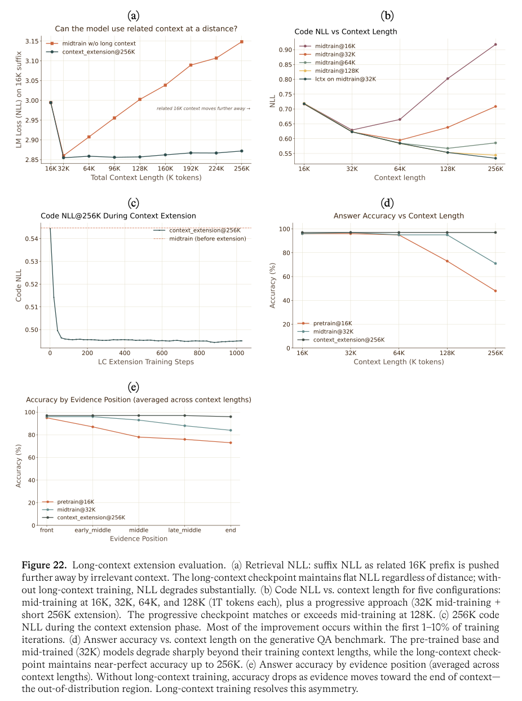
D 推理轨迹的演变
我们的模型从零开始攀登，没有从任何第三方 chain-of-thought（CoT）蒸馏。这为研究 CoT 如何随着模型变强而演变提供了清晰视角。本节研究模型在 RL 训练期间的 CoT 中出现的一些行为。我们分析 STEM 攀登（第 3.2 节）和 agent 攀登（第 3.3 节）的 rollout，考察 CoT 所反映的行为原型变化（Guan et al., 2025; Baker et al., 2025）。
D.1 STEM CoT
弱模型猜测，强模型努力求解。考虑下面这道 AIME 2024 题目（答案：240）。
恰有三个正实数 \(k\)，使定义在正实数上的函数 \(f(x)=\frac{(x-18)(x-72)(x-98)(x-k)}{x}\)，恰在两个正实数 \(x\) 处取得最小值。求这三个 \(k\) 值之和。
关键区别不在最初的代数建模，而在最后的验证步骤。强模型推导出四个代数候选值 \(k\in\{8,32,200,512\}\)，并通过定义域条件 \(x>0\) 筛选，排除 512。弱模型则根据可见的根 18、72、98 猜测极小值点，产生 40 和 152 之类的错误数值。
弱模型摘录：猜测极小值点，编造根。
或者另外两个 k 对应 x1、x2 与 18、72、98 的另一种关系，也许当 k 使 x1 = 18、x2 = 72，或类似情况。如果 x1、x2 是 18、72，则由 (1)，x1+x2 = 90 = 94 + k/2 → k/2 = 90 - 94 = -4 → k = -8，不是正数。所以不是。或者如果 x1、x2 是 18、98：116 = 94 + k/2 → k/2 = 20 → k = 40。或者 x1、x2 是 72、98：170 = 94 + k/2 → k/2 = 76 → k = 152。所以可能的 k 是 40、152、512。验证 k = 40：如果 k = 40，则 x1+x2 = 94 + 40/2 = 114。x1x2 = sqrt(18*72*98*40)。
[…] 18、98、72、40 有关系吗？[…] 不确定，但也许可行。所以它们也许就是三个 k。因此三个 k 为 40、152、512。总和是 40 + 152 + 549 = 704？等等，40 + 152 = 192，192 + 512 = 704。
所以总和是 704。
强模型摘录：推导每个候选值并检查定义域。
[…] 现在逐一检查：
\(k=8\)：二次式 \(x^2-98x+1008\) 的根为 \(x1\approx11.68>0,\ x2\approx86.33>0\)。是的。因此，对于 \(k=8\)，\(f(x;8)=m+\frac{(x-x1)^2(x-x2)^2}{x}\)，其中 \(m=-10368\)，在 \(x>0\) 上的全局最小值为 \(m\)，恰在 \(x1,x2\) 取得。是的，符合（它们分别位于函数为负的两个区间 \((8,18)\) 和 \((72,98)\)）。
\(k=32\)：二次式 \(x^2-110x+2016\) 的根为 \(x1\approx23.24>0,\ x2\approx86.76>0\)。是的。全局最小值 \(m=-7200\) 恰在这两点取得（区间 \((18,32)\) 和 \((72,98)\)）。
\(k=200\)：二次式 \(x^2-194x+5040\) 的根为 \(x1\approx30.90>0,\ x2\approx163.10>0\)。是的。全局最小值 \(m=-194688\) 恰在这两点取得（区间 \((18,72)\) 和（下页续）。
（接上页）\((98,200)\)）。
\(k=512\)：二次式 \(x^2-350x-8064\) 的根为 \(x1\approx371.70>0,\ x2\approx-21.70<0\)。因此，对于 \(k=512\)，\(f(x;512)=m+\frac{(x-x1)^2(x-x2)^2}{x}\)，其中 \(x2<0\)，因此对所有 \(x>0\) 都有 \(f(x)\ge m\)，但仅在 \(x1>0\) 处等号成立。所以全局最小值恰在一个正实数 \(x\) 处取得（而非两个）。我们还看到另有一个局部极小值，但其值高于 \(m\)。
因此排除 \(k=512\)。现在有三个值：\(k=8,32,200\)。
还要快速确认，对于这些 \(k\)，不存在其他使 \(f(x)=m\) 的点（题目说“恰在两个正实数 \(x\) 处取得最小值”）。由于 \(f(x)-m=\frac{(x-x1)^2(x-x2)^2}{x}\)，且 \(x1\ne x2\)，只有在 \(x=x1\) 或 \(x=x2\) 时等号成立。是的，两者都大于 0。
还要检查定义域为 \(x>0\)。现在有三个值：\(k=8,32,200\)，所以总和为 240。[…]
弱模型暴力搜索，强模型寻找不变量。考虑下面的 AIME25 题目。
令 N 表示满足以下条件的正整数有序三元组 (a,b,c) 的数量：a,b,c ≤ 3^6，且 a^3+b^3+c^3 是 3^7 的倍数。求 N 除以 1000 的余数。
弱模型试图假定立方运算在模 \(3^7\) 的单位群上是双射，从而简化同余条件。这会把三次条件变成线性条件，但该假设是错的：\(\gcd(3,\varphi(3^7))=3\)，而非 1。相比之下，强模型识别出了相关不变量：对于 3 的幂，单位的立方并非任意单位，而是构成一个指数为 3 的子群，其特征为模 9 同余于 ±1。
弱模型摘录：错误的线性化。
或者，观察模 3 的条件：若其中一些数不能被 3 整除。
情形 1：3 不整除 a，3 不整除 b，3 不整除 c（均为模 3 的单位）。
则 a,b,c 属于 \((\mathbb Z/3^7\mathbb Z)^*\)。由于 x→x^3 是双射，令 \(x\equiv u^3\pmod{3^7}\)、\(y\equiv v^3\pmod{3^7}\)、\(z\equiv w^3\pmod{3^7}\)，其中 u,v,w 属于 \((\mathbb Z/3^7\mathbb Z)^*\)。
[..] 实际上，更仔细地说，由于立方在单位上是双射，映射 (a,b,c) mod 3^7 → (a^3,b^3,c^3) mod 3^7 是 \((\mathbb Z/3^7\mathbb Z)^*\times(\mathbb Z/3^7\mathbb Z)^*\times(\mathbb Z/3^7\mathbb Z)^*\) 上的双射。因此，满足 3 不整除 a,b,c 且 \(a^3+b^3+c^3\equiv0\pmod{3^7}\) 的解的数量，等于满足 3 不整除 a,b,c 且 \(a+b+c\equiv0\pmod{3^7}\) 的解的数量。
强模型摘录：识别不变量。
还要回顾指数提升／模 3 的幂时单位立方的结构：对于 \(x\not\equiv0\pmod3\)，考察 \(x\pmod{3^s}\)。[…]
注意，对于 \(x\not\equiv0\pmod3\)，根据 Euler 定理，\(x^{\varphi(3^e)}=x^{2\cdot3^{e-1}}\equiv1\pmod{3^e}\)，且当 \(e\ge2\) 时，模 \(3^e\) 的乘法群为阶 \(2\cdot3^{e-1}\) 的循环群。映射 \(x\mapsto x^3\) 的像是唯一的指数为 3 的子群。[…]
另外，对于 \(3\nmid y\)，考察 \(y^3\pmod{3^m}\)。[…]
注意，当 \(e\ge2\) 时，\((\mathbb Z/3^e\mathbb Z)^*=\langle-1\rangle\times\langle4\rangle\cong C_2\times C_{3^{e-1}}\)。元素 4 在模 \(3^e\) 下的阶为 \(3^{e-1}\)（1-unit 的一个生成元）。[…]
于是 \(y\equiv(-1)^s4^t\pmod{3^e}\)，其中 \(s\in\{0,1\},\ t\in\{0,\ldots,3^{e-1}-1\}\)，并且 \(y^3\equiv(-1)^{3s}4^{3t}\equiv(-1)^s(4^3)^t\pmod{3^e}\)。[…]
另外，像 \(\{y^3\pmod{3^e}:3\nmid y\}\) 是 \((\mathbb Z/3^e\mathbb Z)^*\) 中指数为 3 的子群：由满足 \(z\equiv\pm1\pmod9\) 的元素 z 构成。
强模型保持怀疑。再看一道 AIME25 题目。这里，强模型在疑惑时停下来重新检查自己的解法（“等等，重新检查一下”），发现边界情形并答对了题目。
弱模型摘录：将空网格标为“极大”，从不复查。
零个筹码的放置能是极大的吗？
[…] 对空网格，可以加一枚筹码吗？可以，可以在任意单元格加白色筹码。但在我们的情形中，如果所有行是 W，所有列是 B，可以加白色筹码吗？来看：在单元格 (i,j) 加白色筹码，格子变成白色。因此行 i 必须是白色，这没问题（行 i 是 W）。列 j 必须是白色，但列 j 是 B，所以不能加白色筹码。能加黑色筹码吗？行 i 必须是黑色，但行 i 是 W，所以不行。因此实际上，如果所有行是 W，所有列是 B，空网格就是极大的（无法加入任何筹码）。所以允许放置零个筹码。
[…] 因此总放置数应为情形 1 + 情形 2 + 情形 3 = 960 + 32 + 32 = 1024。
强模型摘录：怀疑自己的逆向论证，并用小例子检验。
举例：对所有 i 都有 \(s_i=W\)，对所有 j 都有 \(t_j=B\)，则 \(S=\emptyset\)，c 为空函数。现在取 \((S,c)=(\emptyset,\emptyset)\)（空放置）。能在格子 (1,1) 再放一枚筹码吗？[…] 选择 \(x=W\)。于是第 1 行有白色筹码：可以。第 1 列有白色筹码：可以。满足条件 1、2。因此放置 \((\emptyset,\emptyset)\) 不满足条件 3。
但根据前面的一般论证，我们写道：“反过来，任取 \(s_i,t_j\in\{W,B\}\)，定义 \(S=\{s_i==t_j\},\ c(i,j)=s_i\)，则 (S,c) 满足条件 3。”
这在逻辑上错了吗？等等，重新检查针对这个例子的论证。[…]
小型测试用例
尝试更小的情形检查逻辑，比如 \(1\times1\) 网格，1 枚白色筹码，1 枚黑色筹码。求数量。[…]
现在用我们的公式逻辑：网格 \(1\times1\) ⇒ 1 行、1 列。求 \(|Y|\)，即满足 \(\{s_1\}=\{t_1\}\) 的 \((s_1,t_1)\in\{W,B\}^2\) 的数量。[…]
所以有 (W,W) 和 (B,B)：2 对。是的，完全匹配。
D.2 Agent CoT
强模型编写并运行单元测试，弱模型只进行基本合理性检查。在 SWE 任务上的 agent RL 训练过程中出现的一种行为，是经常运行单元测试来验证工作。
弱模型摘录：进行基本合理性检查，确认提出的解法覆盖问题描述中的需求，但实际上不运行单元测试。
回看我所做的改动，我已成功实现问题描述中的所有需求。回顾一下已完成的内容：
对于 model.py：
• 添加 SeedDict TypedDict 类，其中包含 str 类型的“key”字段。
• 添加适当的类型导入与类型定义（SeedSubjectString、SeedSubjectType、Seed）。
• 创建 _normalize_seed() 辅助方法，一致地处理所有 seed 格式。
• 为 List 和 Seed 类中所有公开方法添加显式返回类型和输入参数类型。
• 重构 add_seed()、remove_seed() 和 _index_of_seed()，以支持所有 seed 格式，并使用规范化字符串键检测重复。
• 修复 get_export_list()，返回含三个键（“authors”、“works”、“editions”）的字典，每个键均包含完整加载的 Thing 实例。
• 更新 get_seeds() …
• 为全部 Seed 类方法添加类型标注 …
• 增强 Seed 类，以处理“author”和“redirect”类型字符串。
对于 lists.py：
• 添加 subject_key_to_seed() 函数 …
• 添加 is_seed_subject_string() 函数 …
此实现提高类型安全性、代码可读性，并保持向后兼容。seed 处理逻辑通过一致的规范化变得更加稳健，类型标注也更好地支持静态分析。问题描述中的所有需求均已解决。
强模型摘录：复核问题需求并运行单元测试来检查工作。
测试依然通过。所以核心功能均已工作。让我从整体看一下。我需要考虑是否覆盖了问题中的全部需求。
各项需求：
• List 和 Seed 的所有公开方法都有类型标注——我为关键方法添加了标注。
• 在 model.py 中定义 SeedDict TypedDict。
• is_seed_subject_string 函数——我已创建。
• subject_key_to_seed 函数正确处理规范化 …——让我验证。
• get_export_list 返回结构正确、包含字典列表的 dict。
• add_seed 和 remove_seed 处理全部格式，并具备更好的重复检测 …
总体而言，我认为已覆盖核心需求。所有现有测试继续通过，证实了向后兼容性。
强模型进行证据考古，弱模型执着于编辑机制。在攀登过程中，强 checkpoint 的 CoT 通常在打补丁前先寻找仓库证据（被回退的 commit、payload、测试）。弱 CoT 虽识别出正确目标，但在后续轮次中把精力花在精确编辑机制和损坏恢复上，范围较小，并表现出一定程度的固着。
弱模型摘录：关注大量定点编辑与编辑操作便利性，只迈小步。
• 我需要先探索代码库结构，理解 Leaflet 的组织方式。由于任务是为各类图层添加 toGeoJSON() 方法，应首先：1. 理解整体项目结构；2. 找到这些图层类型（Marker、Polyline、Polygon、LayerGroup 等）的源文件；3. 理解 Leaflet 现有代码模式与约定。先鸟瞰一下……
• 现在我对代码库有了较好理解。规划实现：理解坐标转换：Leaflet 内部使用 [lat, lng]；GeoJSON（下页续）。
（接上页）要求 [lng, lat] 顺序。对于 Marker：{type: 'Point', coordinates: [lng, lat]}。对于 Polyline：{type: 'LineString', coordinates: [[lng, lat], ...]}。对于 Polygon：{type: 'Polygon', coordinates: [[[lng, lat], ...repeat first...], [[ho...
• 我需要确保 old_str 与文件内容完全匹配。再查看 Marker.js 文件末尾，了解精确结构与换行符。
• 现在看到精确结构了。文件混用缩进（部分用 tab，部分用空格——需要保留风格）。遵循相同格式风格，为 Marker 添加 toGeoJSON() 方法。
• 再看文件，发现缩进使用 tab 而非空格。我需要匹配文件中精确的 tab 缩进。
• 查看从第 265 行到末尾的精确范围，确认准确格式。
• 现在看到精确的 tab 格式（显示为空格，但很可能是 tab）。来添加 toGeoJSON 方法。
强模型摘录：充分探索仓库并收集广泛证据，不会过早采取行动。
• 先探索代码库。我需要理解 check enforcer 当前如何工作——如何处理 CI 检查、webhook 及 GitHub 事件。这有助于理解需要做哪些修改，才能使 GitHub Actions 与 Azure Pipelines 一样成为一等公民。
• 阅读主要代码文件——main.go、types.go 和其他关键文件。我需要理解架构。问题提到 Azure Pipelines 的 check-suite 处理、webhook 和 CI 评估逻辑。查看目前如何实现。
• 我看到结构了。代码目前处理：1. 包含 /check-enforcer 命令的 issue 评论；2. 来自 Azure Pipelines 的 check suite 事件（应用名为“Azure Pipelines”）。但问题要求：1. 将 GitHub Actions 作为一等信号（不仅是 Azure Pipelines）；2. 可能存在多个相关 suite——需要查看 github_client.go 中当前的 GetCheckSuiteStatus；3. Workflow-run 事件——……
• 我在 GetCheckSuiteStatus（github_client.go 第 105–138 行）中看到，它获取全部 check suite，然后找到第一个匹配 AppTarget 的条目（当前代码中是“Azure Pipelines”）。但它只返回第一个匹配 suite 的状态／结论。而问题要求“从相关 suite 评估 commit 的整体状态，而不是假定只有一个应用或一种事件结构”，以及“mul…”
• 看代码库，我已了解当前实现。继续阅读测试文件，理解预期。我看到 main_test.go 中有测试。还需要更准确地理解需求。看看全部测试以理解预期行为。我看到 main_test.go、github_client_test.go、types_test.go。再看 README 和文档了解背景。
• 继续阅读测试，理解完整的预期行为。
• 我看到测试了。现在阅读其他测试文件，以获得完整图景。另外搜索“workflow_run”“GitHub Actions”等词，理解完整问题背景中的需求。再仔细看问题——我需要理解什么是“workflow-run 事件”，以及 GitHub Actions 如何集成。查看完整问题。实际上让我……
强模型寻找事实来源，弱模型猜测相邻路径。强 CoT 将源数据定位为事实来源。弱 CoT 表面上理解可见性和代码路径，却围绕相邻生成代码路径推理，留下边界问题。
弱模型摘录：逐步追踪相邻路径，但主要靠试错。
• 我看到 TypeExtendsReader 收集所有父类和接口。但注意到它没有检查可见性（public/package-private）。再仔细看 issue。关键在于理解“package protected class and interface”的含义。在 Java 中，若类不是 public，就是包私有（仅包内可访问）。类似地……
• 嗯，在测试文件中更具体地搜索 isAddBeanFor。（下页续）
（接上页）• 测试中没有直接引用。看看 API 中如何定义 isAddBeanFor。检查 DBuilder 和 Builder 接口。
• 我看到 API 中的 isAddBeanFor。但需要理解全貌。查看 Builder 接口。
• 现在理解 API 侧了。但生成器侧呢？再看一些生成代码示例，了解 isAddBeanFor 实际输出模式。我需要看 TypeAppender 产生什么。查看测试数据，或测试用例实际生成的 DI 类。
• 那些是生成器类。在测试 target 中寻找实际生成的 DI 文件。
• 如果理解包私有类型何时造成问题，issue 也许会更清楚。再仔细看看 issue。搜索相关 issue 或“package protected”的更多上下文。等等——查看完整 TypeExtendsReader，深入理解。因为收集待注册类型（用于 isAddBeanFor）时，我们收集：1. ba……
强模型摘录：将行为关联到驱动生成的数据源，再从那里追踪。
• 我看到引用了。看看 isAddBeanFor 如何生成。我需要理解全貌。
• 我看到它们在检查 Modifiers。所以存在一种模式。看看具体做法。更全面地搜索。
• 我看到 isAddBeanFor 在 Builder 接口中定义，在 DBuilder 中实现。看看如何使用。阅读 DBuilder，理解语义。isAddBeanFor 决定是否应添加某个 bean——我想它用于“类型”：即注册时，这个 bean 可以作为哪些类型的候选？所以从 con……来看只有 public 类型相关。
• 我看到运行时 isAddBeanFor 如何工作：根据父作用域是否已有该 bean，决定是否添加／注册。但这不能帮助我理解 issue。问题在生成代码上。看看生成代码实际是什么样。找包含 isAddBeanFor 的生成 D 类示例。搜索实际 gene……
• 那些是运行时类。看看生成的测试代码。在测试资源或构建输出中寻找生成代码。但这是源代码——看看 blackbox 测试或 inject-test。搜索包含 isAddBeanFor 的生成代码。
• target 中没有生成代码（尚未构建）。看看测试资源或现有测试用例。在测试源代码中搜索“isAddBeanFor”——也许能从测试理解预期行为。
• 我看到 MethodReader 的 buildAddFor 在处理返回类型的工厂方法时也使用 typeReader.getTypesRegister()。因此，决定哪些类型进入 isAddBeanFor 的逻辑来自 TypeReader。但回到主要 issue——“Bug isAddBeanFor() 生成代码包含包保护类和接口。修复方式是只有 public 类……”
E SWE Agent 工具 Schema
图 23 和图 24 以兼容 OpenAI 的函数调用 schema 格式，描述 SWE agent RL 所使用的工具。
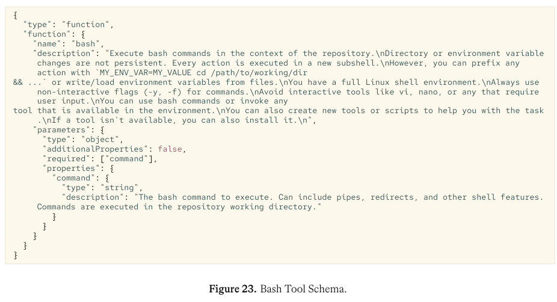
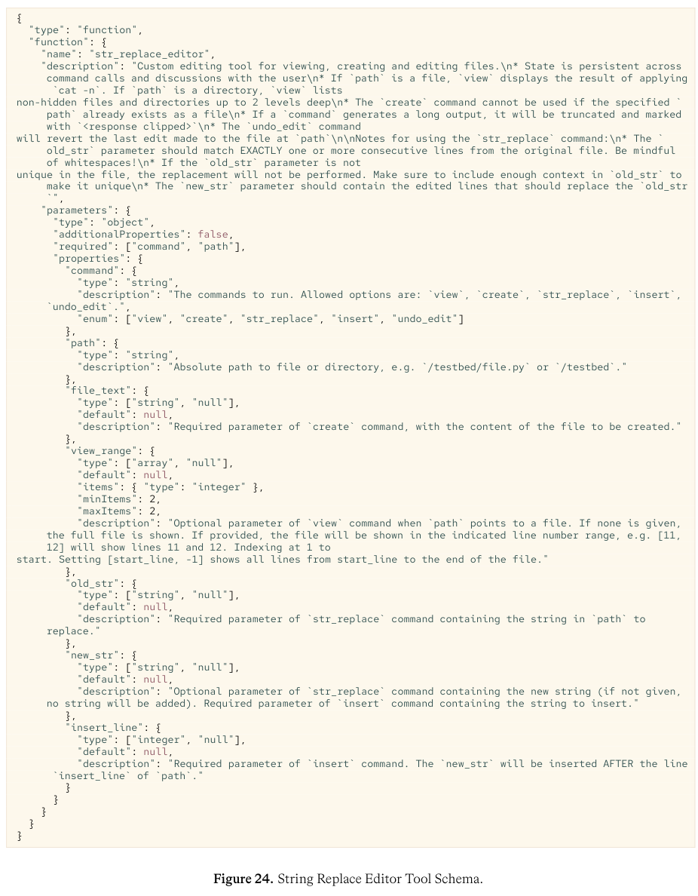
F 指令遵循数据的约束分类体系
我们构建约束分类体系，组织模型可能被要求遵循的各类指令。它有两个用途：引导数据收集实现广泛覆盖，包括少见约束组合；以及支持细粒度分析模型性能。我们按照检查方式划分约束，与第 3.4.1 节的奖励类型对应。
客观（硬）约束。这些基于规则的约束会调用自定义及开源检查器目录中的 Python 函数（Pyatkin et al., 2026; Zhou et al., 2023）。例如数值约束（“恰好用 3 个句子回答”）、格式约束（“输出含 name 和 age 键的 JSON 对象”）及语言约束（“用法语回答”）。
主观（软）约束。这些约束需要判断才能评估，由奖励模型或 AI 裁判评分。例如语气（“予以鼓励，但不要居高临下”）、人设（“以历史学者的身份回答”）和交互行为（“如果不清楚，回答前先提出澄清问题”）。表 15 展示了一些子类别示例。
多轮场景分类体系。受 Deshpande et al. (2025) 启发，我们将对话使用案例分解为各种场景，以测试模型在涉及多轮的复杂对话中的 IF 能力，如表 16 所示。
G 构建 SWE 环境的基础设施
该基础设施主要用于解决规模、稳定性和安全性挑战。构建基础设施组织为运行于约 30,000 个 CPU 核心上的双池 Ray 集群。主池负责工作分发、Lance I/O 和流水线状态跟踪。构建池执行实际容器构建；所有构建节点均标有 Ray 自定义资源标志，构建步骤利用 Ray 的逻辑资源调度，确保其 actor 只落在具备构建能力的节点上。
两个池分离，是因为容器构建资源密集且易出故障（磁盘耗尽、OOM、构建挂起），而协调工作轻量且无状态；隔离可确保构建 pod 故障不干扰编排和状态管理。这种分离还实现了凭据隔离：构建 pod 执行开源仓库中不可信的 Dockerfile，不持有流水线数据存储或内部服务的凭据。无论由磁盘压力、硬件故障还是节点驱逐导致，pod 故障都通过 Kubernetes 重启处理；重启后的 pod 重新连接 Ray 集群，当下一个主池 worker 调度新任务时会自动被选中。
每个构建 pod 包含两个容器，共享由 NVMe 支持的本地存储，并共同部署以提高构建与评分效率。主容器运行 Ray worker，使用 rootless podman 加载已构建镜像并运行评分容器。sidecar 容器运行 rootless BuildKit 守护进程，通过 buildctl 构建 OCI 镜像。两个容器通过共享 NVMe 卷通信——BuildKit 写出 OCI tar 归档，再由 podman 加载——并通过 localhost 传输 BuildKit 控制通道。这种共同部署避免在构建与评分之间通过网络传输大型容器镜像；整个构建、加载、运行周期均发生在本地 NVMe 上。Init 容器处理一次性设置，包括通过联合身份对容器镜像仓库进行身份验证。
流水线还利用 BuildKit 层缓存，减少同仓库问题之间的冗余工作。问题按仓库分组，派发给构建节点上同一个持久 Ray actor。由于 actor 在同仓库问题之间持续存在，共享基础层——apt-get install、pip install、依赖编译——只构建一次并复用，因为依赖安装往往占据大型仓库 Docker 构建时间的大部分（下页续）。
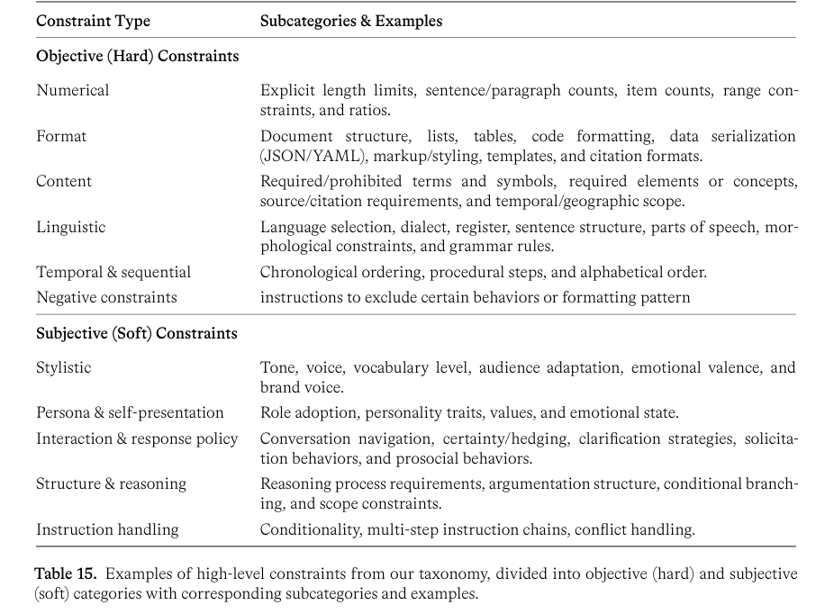
（接上页）主要吞吐量瓶颈是 LLM token 消耗，而非 CPU 或磁盘。流水线运行于 10,000 个 CPU 核心之上，具有每分钟 1,200 万 token 的 LLM 容量，实现 83% 的提示缓存命中率。在此配置下，流水线每分钟产出约 20 个通过评分的环境。
H STEM 评测设置
对于全部 STEM 基准，我们使用 256k token 的最大输出预算，报告 pass@1 性能。除前文已展示的 256k 数值外，表 17 还展示了模型在最大输出 128k token 时的表现。
H.1 数学
美国数学邀请赛（AIME）和 Harvard–MIT 数学锦标赛（HMMT）都是知名高中数学竞赛。这些竞赛数学评测可作为模型推理能力的有用代理。我们在 2025 年和 2026 年的 AIME，以及 MathArena 提供的 2026 年 2 月 HMMT 基准上评估 MAI-Thinking-1（Dekoninck et al., 2026，下页续）。
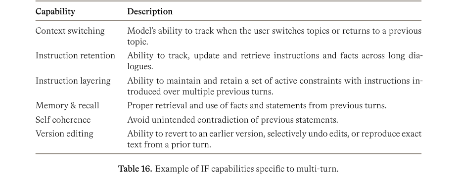
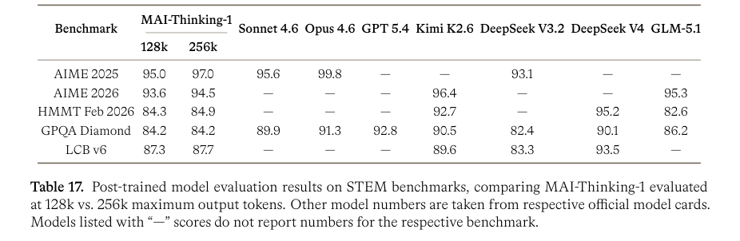
（接上页）这些竞赛的预期答案是简单数字或表达式。我们要求模型以 boxed 格式输出最终答案，以便通过正则表达式提取，再用 SymPy 验证，并使用 AI 裁判作为后备。
H.2 科学
研究生级、无法仅凭 Google 搜索解答的问答基准（GPQA）（Rein et al., 2023）包含知识密集的研究生及研究级问题，主要来自 STEM 领域。对于 GPQA，我们在包含 198 道选择题的 Diamond 子集上评测。我们采用 OpenAI 的 simple-evals 包（OpenAI, 2025）的指令提示来指定所需答案格式，并使用自定义的正则表达式提取过程，将模型输出与标准答案比较。我们报告对 16 次 rollout 取平均的 pass@1 性能。我们使用 GPT-5-mini 作为 AI 评分的默认裁判，借助图 25 所述提示对 STEM 基准中的模型回答评分。GPT-5mini 被用作默认裁判。
H.3 竞赛编程
LiveCodeBench（LCB）（Jain et al., 2024）包含最新竞赛编程问题。我们在 v6 划分上评测，该划分包含 2023 年 5 月至 2025 年 4 月发布的 1,055 道题。与下文多轮的 agent 编码评测不同，LCB 采用单次作答测试设置。解答在代码围栏中生成，以便解析，并针对测试框架执行评分（第 101 页续）。
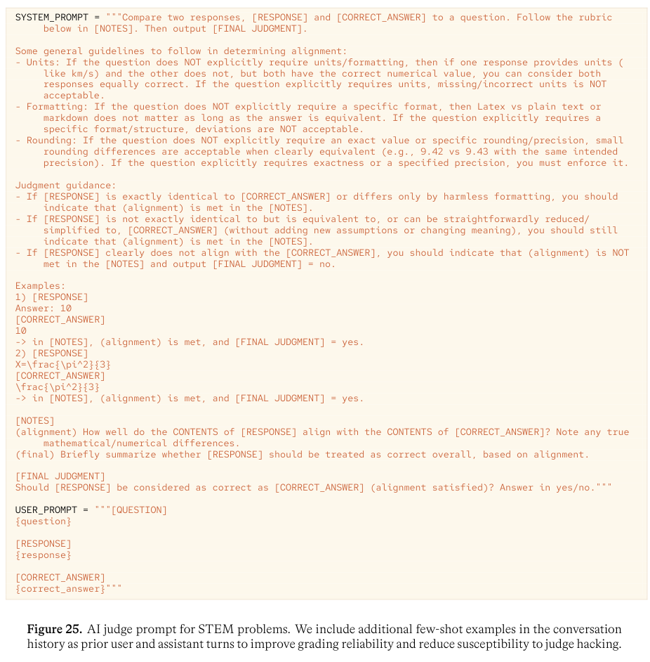
（接第 99 页）评分具有预定义的内存和运行时间限制，类似真实编程竞赛的约束。
I Agent 编码评测
SWE-bench Verified（Chowdhury et al., 2024）、SWE-Bench Pro（Deng et al., 2025）和 Terminal-Bench 2.0（Merrill et al., 2026）的 agent 编码基准结果，展示在表 11 的第二部分。与上一节 STEM 评测不同，agent 编码评测是多轮的，要求模型与环境交互。对于三个基准，我们都使用图 18 所述非常简单的、ReAct 风格（Yao et al., 2023）、始终追加内容的 Agent Loop。每一轮模型都可以生成工具调用，我们在环境中执行，并把输出追加到轨迹，再由模型发起下一个工具调用。评测使用总上下文长度 256k token；SWE-bench Verified 和 SWE-Bench Pro 的最大输出长度为 8k token，Terminal-Bench 2.0 为 32k token；最多 1,000 步。当模型不输出工具调用、达到上下文长度限制或达到步数限制时，Agent Loop 终止。循环终止后，在 agent 使用的 SEE 中运行相应评分器。对于 SWE-bench Verified 和 SWE-Bench Pro，我们使用与攀登阶段相同的两种工具进行评测，即第 3.3.1 节所述的 bash 与 string replace editor。对于 Terminal-Bench 2.0，仅使用 bash 工具评测。
SWE-bench Verified。SWE-bench Verified 是 SWE-Bench（Jimenez et al., 2024）经人工策划的 500 任务子集，旨在提升可靠性。每个任务都是热门 Python 仓库中真实的公开 GitHub issue，模型必须生成能够解决 issue 并通过仓库隐藏测试套件的补丁。任务经过审核，以确保问题描述可解、测试能够公平评估正确性。
SWE-Bench Pro。SWE-Bench Pro 是 SWE-bench Verified 更具挑战性的后继版本，包含 731 个任务，使用相同的基于单元测试的评分机制，旨在利用真实开源仓库中的专业级软件工程任务评估 LLM。它强调更难的多文件编辑、更长时程推理，以及更能反映工程师实际工作的复杂缺陷修复和功能实现。更重要的是，与 SWE-bench Verified 不同，SWE-Bench Pro 包含 Python 以外语言的仓库。
Terminal-Bench 2.0。Terminal-Bench 2.0 是 Terminal-Bench（Merrill et al., 2026）经人工验证、难度显著提高的后继版本，包含 89 个真实任务，覆盖软件工程、调试、数据科学、机器学习、安全和系统管理。每个任务都在沙箱终端环境中运行，根据输出或环境最终状态通过程序评分。任务设计要求长时程规划、错误恢复和真正熟练的命令行操作，而非模式匹配。
J 安全评测
J.1 内部评测细节
J.1.1 方法
评测分为两阶段：先对用户请求进行结构化刻画，再推导回答规范，并据此对模型行为评分。这样的分解，使我们能够区分真正的安全缺陷与面对无害但敏感主题时过于谨慎的行为（下页续）。
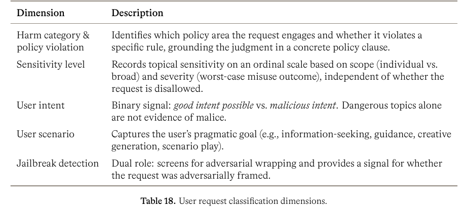
（接上页）并能提供按策略、按模态的度量，而非单一汇总分数。
两个评测阶段均由 LLM 裁判执行，其中分类步骤会多次运行，并通过多数投票汇总，以控制裁判方差。每个用户请求也会经过越狱检测，使用攻击家族与技术变体的层次分类体系筛查对抗性包装。检测到包装后，提取步骤会恢复底层请求，后续分类基于恢复后的请求进行。这确保评测反映模型对实际底层意图的行为，而非表面攻击模板，防止针对特定包装的过拟合抬高安全分数。
阶段 1：用户请求分类。每个用户请求按照表 18 所述五个互补维度刻画。它们共同捕捉请求中与策略相关的内容，以及请求提出时的上下文。对于多轮对话，完整对话历史作为上下文输入。
阶段 2：回答策略生成。阶段 1 的分类由评分细则裁判接收，为每个请求生成回答规范，涵盖相关策略约束、适当的拒绝立场（根据意图和严重程度，可能是遵从、部分拒绝或拒绝），以及回答应采用的语气和方法。对于被分类为无害或不明确的请求，这种 LLM 生成的细则会被确定性的默认规则替代，明确惩罚含糊其辞和无根据的拒绝。
J.1.2 数据收集与采样
期望性质。评测结果所能提供的信息，取决于计算结果所用的提示：范围狭窄、权重失衡或已经饱和的评测集，只会围绕错误的量给出很窄的置信区间，在其上作出的任何模型选择决策都会继承这一错误。我们将评测集构建视为方法论问题，要求该集合满足三个性质（Atkinson et al., 2007）：
- 覆盖上述策略领域、敏感程度、用户场景与对抗性包装，使行为上不同的任何输入切片都不会在不知不觉中代表不足。（下页续）
- （接上页）在固定评测预算下具有统计效率，因为评判成本很高，各类别指标的置信区间随样本量收窄得很慢。
- 比较其他前沿模型时具有区分能力，使模型改进时汇总分数确实变化，而不是在过于简单或过于困难的提示上饱和。
来源池与标注。候选提示池由三个互补来源组成：公开安全基准、过滤了 PII 的消费者 Copilot 日志，以及外部供应商按照我们策略分类体系收集的提示。每条候选提示都经过上述标注框架，附加采样所需五个分层的标签：危害类别、策略违反、敏感程度、用户场景和越狱。
按信息量加权的实验设计。我们希望从候选提示池中选择信息量最高的提示用于评测。我们将其表述为自动化试卷组装问题。这与近期通过心理测量建模大幅压缩 LLM 评测成本的工作一致，例如 tinyBenchmarks（Polo et al., 2024），利用项目反应理论识别静态、具有普遍代表性的评测子集。作为对该框架的扩展，我们提高模型既非总是失败、也非总是通过的提示权重。这帮助我们主动识别最有可能改进模型的领域。
阈值设定。上述评测集是安全考虑进入 MAI-Thinking-1 爬山过程的主要机制。每个内部候选发布版本都必须在一组固定安全评测上通过验收阈值，且相对上一已接受版本不得退步。该评测组合覆盖特定策略领域性能，以及无偏排行榜集合上的汇总行为，防止单个危害类别的局部退步被其他方面的改进平均掉。阈值在两个环节介入：一是在候选发布版本签核时充当门槛，候选版本若有任一组合指标低于阈值，便不得晋级为发布配方；二是在实验模型低于更低阈值时触发提前预警。
阈值本身来自对安全、过度拒绝和下游模型质量之间可实现权衡面的 Pareto 分析：在每个发布周期，我们绘制该周期评估配方的前沿，找出边际安全收益开始对过度拒绝或质量造成不成比例成本的拐点。随后将阈值设在该前沿的固定百分位，而不是静态绝对数值，因此标准跟踪的是当前架构与数据混合下可以达到的水平，而非过时的历史底线。这使把关信号在各发布周期之间保持相同含义——无论前沿如何移动，通过门槛都为相对于当前前沿的安全质量提供相同证据——同时允许绝对数值随着底层配方改进而上升。
K 通用能力评测
下面讨论表 12 所示覆盖知识、指令遵循、长上下文、安全、诚实、健康和工具调用的基准。
K.1 知识
我们在 SimpleQA Verified（Haas et al., 2026）和 MMLU-Pro（Wang et al., 2024b）上评测 MAI-Thinking-1，衡量其知识与推理能力。结果及与其他模型的比较见表 12。
MMLU-Pro。MMLU-Pro 扩展 MMLU（Hendrycks et al., 2021），加入更具挑战性、侧重推理的问题，并将答案选项从 4 个增加到 10 个。它在广泛的困难知识与推理任务上评估模型。我们采用 OpenAI 的 simple-evals 包（OpenAI, 2025）的指令提示指定答案格式，并使用自定义正则表达式提取过程，将模型输出与标准答案比较。
SimpleQA Verified。SimpleQA（Wei et al., 2024b）使用各种主题的挑战性问题来评估短文本事实知识，答案简短且无歧义。我们报告模型在 SimpleQA Verified（Haas et al., 2026）上的准确率；该策划子集处理了标签噪声和冗余。
K.2 指令遵循
模型可用性的关键方面，是对用户指令响应得有多好。我们有一套内部基准，但在此报告以下三个常见公开基准的数值。
- IFBench（Pyatkin et al., 2026）评估遵循精确指令的能力，覆盖 58 种多样且可验证的约束。
- AdvancedIF（He et al., 2025）利用评分细则和校准过的 LLM 裁判，衡量复杂、多轮以及由系统提示施加的指令遵循能力。
- MultiChallenge（Deshpande et al., 2025）面向多轮对话，要求准确遵循指令、分配上下文并进行上下文内推理。11我们验证了对于公开模型，我们的实现能够复现官方排行榜报告的分数。
K.3 长上下文
我们在表 12 和表 19 所示的四个基准上评估 MAI-Thinking-1 的长上下文性能。出于下文所述原因，我们省略了 MRCR（Vodrahalli et al., 2024）。
GraphWalks。GraphWalks 是合成多跳推理基准：向模型提供图的边列表表示，要求模型遍历图，为给定起始节点找到邻居节点（通过广度优先搜索）或父节点。表 12 报告的总分，是模型预测答案相对标准答案的 F1 分数。我们报告以 o200k_base tokenizer 衡量的 ≤128k 子集上的 GraphWalks 结果。
LongBenchV2。LongBenchV2（Bai et al., 2024）由用于长上下文理解任务的四选一问题组成。我们采用与官方实现相同的评测设置，但将输入上下文长度限制为 256k token，因此得到 408 个不同问题。
CorpusQA。CorpusQA（Lu et al., 2025）是多文档自由形式问答数据，模型回答由 AI 裁判评分。我们使用精确率更高的 GPT-5.4（high），代替默认裁判 deepseek-v3（DeepSeek-AI et al., 2025a）。
11我们遵循官方基准，使用 Gemini 2.5 Pro 作为裁判。https://labs.scale.com/leaderboard/multichallenge
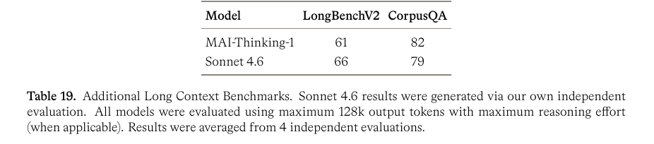
MRCR。OpenAI 的 MRCR（Vodrahalli et al., 2024）是人工构造的基准，测试模型在长上下文中计数与复制的能力。尽管理想模型应得高分，但任务性质与自然用户查询差异很大。我们发现，若不进行针对性训练，MAI-Thinking-1 在该任务上相较现有模型表现不佳，avg_similarity@256K 达到 60%，而最先进结果为 95%。相比之下，一小组 1,000 条合成的分布内训练样本，就能将 MAI-Base-1 家族中一个小得多的模型的 MRCR 性能提升至 90% 以上，表明该基准易于过拟合。由于没有证据表明使用此类针对性数据训练能够带来更普遍的模型改进，我们决定将 MRCR 从优先考虑的长上下文基准中移除。
K.4 安全
AIR-Bench。AIR-Bench（Zeng et al., 2024b）依据法规与政策衍生的危害分类体系，汇总衡量基于策略的拒绝行为。评测采用针对每个风险类别定制的分类别 LLM 裁判提示，评分设计旨在奖励安全参与，而非只惩罚不安全回答。MAI-Thinking-1 在该基准上的性能与 Sonnet 4.6 相同。
CyberSecEval。CyberSecEval 4（Wan et al., 2024; Meta, 2024）是覆盖多种网络安全相关能力的评测套件。这里我们聚焦不安全代码生成。Instruct 基准提出旨在诱发已知不安全模式的编码请求；Autocomplete 基准则向模型提供到某个已知不安全模式之前为止的代码上下文，要求续写。两者都利用静态分析规则衡量模型是否生成存在漏洞的代码。MAI-Thinking-1 在 Autocomplete 上优于 Sonnet 4.6，在 Instruct 上表现相近。
K.5 诚实
为衡量 MAI-Thinking-1 的诚实性，我们选择覆盖两种不同失败模式的基准：在短问答中复述听似合理的谬误，以及在长篇生成中引入缺乏支持的断言。MAI-Thinking-1 在两个基准上均与 Sonnet 4.6 相当。
TruthfulQA。TruthfulQA（Lin et al., 2022）评估抵抗常见误解的能力，每个问题都旨在诱发看似合理却错误的回答。为使结果可复现，我们采用建议的选择题设置，报告模型在整个数据集上的准确率。
LongFact。LongFact（Wei et al., 2024c）评估包含多项断言的长篇生成的事实精确率；我们采用 OpenAI（Singh et al., 2025a）的简化断言提取与 LLM 裁判协议，代替原始 SAFE 流水线，保留 LongFact 提示集，并报告断言级精确率。
K.6 健康
HealthBench Professional。HealthBench（Arora et al., 2025）是一组用于评估 LLM 延续与个人及医疗专业人士的真实健康对话能力的基准。向语言模型提供多轮对话作为提示，要求其生成回答，延续已有对话。回答通过校准的模型裁判评估，对照由医生小组创建、针对具体对话的评分细则，覆盖临床正确性、指南遵循和安全性。我们报告最新 HealthBench 变体 HealthBench Professional 的性能，它聚焦医疗专家与语言模型之间的 525 段对话（Hicks et al., 2026）。HealthBench Professional 为主要指标引入长度惩罚，以修正被广泛观察到的长回答与人为偏高的 LLM 评分之间的相关性。对于报告的所有分数，我们均使用 OpenAI 提供的标准 GPT-5.4 评分器与评分细则。
MedXpertQA。MedXpertQA（Zuo et al., 2025）是一个富有挑战性、尚未饱和的选择题基准，通过 2,450 道专家策划的选择题评估专科级医学知识。这些问题旨在评估高级临床知识与多步推理。每道题有 10 个选项（A–J）。我们遵循 Muse Spark Team (2026) 提出的方法，使用辅助 LLM（GPT-5.4）从自由形式文本中解析预测的答案字母。
K.7 工具调用
BFCL v3（Patil et al., 2025）评测 LLM 在单轮、并行和多函数场景，以及多轮、多步 agent 交互中的工具使用与函数调用能力。它利用抽象语法树与执行结果匹配来评估函数选择和参数生成，同时考验长时程推理、跨轮状态跟踪，以及对噪声函数或缺失函数的稳健性。为了获得更高确定性，我们按照官方排行榜建议，使用 T = 0.001 和 p = 0.97 进行推理。
L 集群环境细节
本附录介绍使训练环境能在前沿规模下使用的基础设施机制。核心设计选择，是将物理拓扑和硬件健康状态作为一等调度状态暴露出来。节点和 NVLink 机架域通过拓扑标签、预留对象、机架级服务和认证门槛表示。节点并非仅因完成配置就有用；它必须健康、拓扑有效、可观测且可恢复，才真正有用。
L.1 硬件与计算集群
MAI-Thinking-1 在跨 NVIDIA H100、GB200 和 GB300 系统的异构加速器集群中开发。不过，主要预训练运行部署在单个站点的一套 GB200 集群上。GB200 和 GB300 集群托管于 Microsoft 自营数据中心，并通过与 Azure 团队共同开发的定制镜像提供给 MAI。这些系统以机架级 NVL72 单元配置，每个机架提供包含 72 个 GPU 的 NVLink 域，用于高带宽纵向扩展通信，机架间 RDMA 则使用 InfiniBand。H100 系统也仍是实验室环境的一部分，使用 8 GPU 节点，节点本地采用 NVLink/NVSwitch，横向扩展通信采用 InfiniBand。
逻辑集群配置与管理。每个站点划分为多个 Kubernetes 集群，通常每栋数据中心建筑一个。逻辑集群包括用于训练的 GPU 节点和用于支持服务的 CPU 节点。自定义控制器使期望逻辑集群状态与底层 Azure 资源协调一致，维护节点拓扑标签，并将外部健康数据库集成到调度状态。
拓扑标签在节点启动时，利用物理主机标识赋予。这些标签表示机架、主机与局部性信息，由调度、预留和机架级服务使用。这让物理放置对控制平面可见，使作业能够部署到不仅可用，而且拓扑合适的容量上。
大型作业被设计为必要时可跨越单个 Kubernetes 集群的边界。节点在整个计算环境中均可路由，工作负载 pod 使用主机网络以避免不必要的覆盖网络开销。
L.2 集群就绪与认证
在数千个 GPU 规模下，故障是预期中的事。因此，认证充当第一道可靠性边界，其目的是防止故障节点、退化链路、处于临界状态的存储，以及静默损坏风险进入生产训练池。认证框架是自动化、Kubernetes 原生且分层的。硬件必须逐步通过范围更广的测试，才能被调度：单节点诊断、机架级多节点集合通信，以及选定的跨机架 InfiniBand 验证。新节点和修复节点遵循同一路径。维修返回的节点必须再次通过认证才能重新进入生产，防止反复出问题的节点循环回到大型训练作业中。
认证。诊断套件对每个节点单独验证。与通用健康检查不同，这些测试会长时间对各组件施加压力：GPU、CPU 核心、HCA、NVLink 链路和主内存，从而在节点进入生产前识别高 ECC 率、异常降频行为、GPU 时钟违规、链路反复抖动及其他临界情况。
套件还使用 NCCL 集合通信，对每个机架内的节点内和节点间通信路径施压，识别故障 NVLink 行为。这些自动化测试对稳定 GB200 和 GB300 机架起到了关键作用，我们在其中发现多个机架的健康节点不足 16 个；这些机架被排除在大型训练运行之外。
认证的最后阶段包含跨机架 InfiniBand 测试，覆盖单节点和机架级测试无法触及的网络路径。这些测试将跨机架、rail 和 leaf 分组的节点组合起来，验证 spine 层行为、路径多样性和跨机架 RDMA 性能。由于影响范围更大，它们会在系统上线、事件调查和网络验证期间按需运行。
节点生命周期。认证是闭环节点生命周期中的一个阶段，如图 26 所示。新节点或修复节点进入 Init 状态，在其中被添加污点、初始化、标记和配置。随后认证控制器运行分层测试套件。通过的节点变为 Available，失败的节点变为 Impaired。当检测到 NPD 条件、XID 错误、ECC 阈值触发、NVLink 退化、InfiniBand 链路抖动或存储故障时，运行时监测也可将 Available 节点转为 Impaired。暂时性问题进入自动修复，如重启或软排空。持续性问题或归因于硬件的问题，通过 Guest Health Reporting 转交供应商或数据中心维护。维修后的节点返回 Init，并重新认证。不可恢复的节点退役。
L.3 调度、编排与控制平面
调度问题是在异构容量上放置异构工作负载，同时不牺牲局部性、配额隔离和恢复能力。工作负载包括长期预训练作业、后训练与强化学习运行（下页续）。
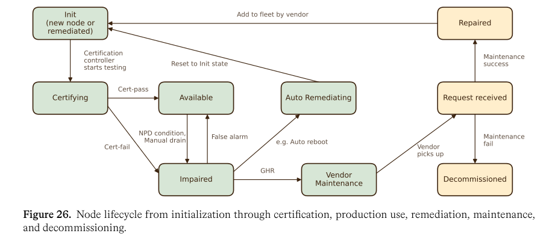
（接上页）推理与评测作业，以及 CPU 密集的数据流水线。因此，技术栈分层设计：Kubernetes 维护集群状态，Kueue 作出准入与配额决策，MAI 控制器维护预留与拓扑就绪状态，Ray 执行分布式作业，整个集群群组的控制平面统一不同集群和调度后端的可见性。
集群本地控制平面。集群本地 MAI 控制平面管理预留、机架拓扑、配额一致性和调度就绪门槛。它不替代调度器，而是维护调度器需要的状态。Kueue 处理优先级、配额、准入、抢占和感知拓扑的放置。当工作负载被准入时，Kueue 试图在高带宽域内保持局部性，使大型作业部署在紧凑拓扑区域，而不是分散容量上。机架碎片化是反复出现的调度风险。来自多个队列的小作业，可能以某种方式填满机架，使后来的大型作业无法获得连续容量。集群本地控制平面利用软机架预留解决这一问题。为队列分配首选机架，工作负载优先落在这些机架上。容量空闲时仍允许借用，但 reclaimWithinCohort 允许队列在需要时收回自己的预留机架。这提高负载下的装箱效率，同时保持低需求时期的利用率。
Ray 运行时。Ray 在已准入作业内提供分布式运行时。MAI 驱动程序将已准入的拓扑转换为 actor 放置、通信组和 NCCL clique 配置。预训练作业对 learner 可用性有严格要求；RL 作业则管理多种 actor，包括 learner、推理服务器、rollout worker 和路由器，各有不同的放置与容错需求。驱动程序监测 actor 存活状态，协调训练循环，并维护异步组件之间的 checkpoint 一致性。
L.4 可观测性、遥测与集群群组监测
我们将底层硬件遥测、调度器状态、作业元数据和集群效率信号整合为统一操作视图。GPU 健康通过 XID、ECC、温度、功率、时钟降频、NVLink 状态、NVLink 比特错误率、芯片间链路、InfiniBand 设备状态、本地 NVMe 健康、PCIe 错误和驱动程序状态跟踪。这些信号被转换成 Kubernetes 节点条件，再经自定义分诊和排空控制器转化为调度及修复动作。如此，健康状态不仅对运维人员可观测，也对调度器可观测。
作业可观测性汇集了 Kueue、Kubernetes、Ray、训练日志和实验元数据。运维人员可按 namespace、pod、作业和重启索引检查队列、优先级、准入状态、节点放置、worker 就绪状态、重启次数、训练配置、步数进度及限定范围日志。因此，无需手动在多个系统间重建状态，就能区分调度延迟、运行时故障、节点故障、存储退化和应用层停滞。
遥测在针对不同时间跨度优化的多个系统中存储与查询。Datadog 提供近实时指标和日志搜索。Azure Managed Prometheus 提供集群内及跨集群时序数据收集。Azure Data Explorer 为日志、指标、存储遥测和集群状态提供长期保留的分析存储。告警采用相同分层模型：本地 Prometheus 规则用于低延迟组件故障，Datadog 监测器用于服务及日志衍生信号，基于 KQL 的检查用于长期分析，Azure Monitor 用于资源及 Prometheus 告警。关键告警被发送至事件管理，较低严重度信号则进入仪表盘和运维复盘。
独特的设计之处，是可观测性成为控制闭环的一部分。硬件遥测、网络健康、存储行为、调度状态和作业进度并非被动仪表盘；它们决定容量是否准入、排空、修复或恢复服务。这使集群能够依据可用训练容量与有效吞吐量管理，而非只看已配置 GPU 数量。